目录
- 26.1. MySQL Connector/ODBC
- 26.1.1. MyODBC介绍
- 26.1.2. 关于ODBC和MyODBC的一般信息
- 26.1.3. 如何安装MyODBC
- 26.1.4. 在Windows平台上从二进制版本安装MyODBC
- 26.1.5. I在Unix平台上从二进制版本安装MyODBC
- 26.1.6. 在Windows平台上从源码版本安装MyODBC
- 26.1.7. 在Unix平台上从源码版本安装MyODBC
- 26.1.8. 从BitKeeper开发源码树安装MyODBC
- 26.1.9. MyODBC配置
- 26.1.10. 与MyODBC连接相关的事宜
- 26.1.11. MyODBC和Microsoft Access
- 26.1.12. MyODBC和Microsoft VBA及ASP
- 26.1.13. MyODBC和第三方ODBC工具
- 26.1.14. MyODBC通用功能
- 26.1.15. 基本的MyODBC应用步骤
- 26.1.16. MyODBC API引用
- 26.1.17. MyODBC数据类型
- 26.1.18. MyODBC错误代码
- 26.1.19. MyODBC与VB：ADO、DAO和RDO
- 26.1.20. MyODBC与Microsoft.NET
- 26.1.21. 感谢
- 26.2. MySQL Connector/NET
- 26.3. MySQL Connector/J
- 26.4. MySQL Connector/MXJ
- 26.1.1. MyODBC介绍
- 26.1.2. 关于ODBC和MyODBC的一般信息
- 26.1.3. 如何安装MyODBC
- 26.1.4. 在Windows平台上从二进制版本安装MyODBC
- 26.1.5. I在Unix平台上从二进制版本安装MyODBC
- 26.1.6. 在Windows平台上从源码版本安装MyODBC
- 26.1.7. 在Unix平台上从源码版本安装MyODBC
- 26.1.8. 从BitKeeper开发源码树安装MyODBC
- 26.1.9. MyODBC配置
- 26.1.10. 与MyODBC连接相关的事宜
- 26.1.11. MyODBC和Microsoft Access
- 26.1.12. MyODBC和Microsoft VBA及ASP
- 26.1.13. MyODBC和第三方ODBC工具
- 26.1.14. MyODBC通用功能
- 26.1.15. 基本的MyODBC应用步骤
- 26.1.16. MyODBC API引用
- 26.1.17. MyODBC数据类型
- 26.1.18. MyODBC错误代码
- 26.1.19. MyODBC与VB：ADO、DAO和RDO
- 26.1.20. MyODBC与Microsoft.NET
- 26.1.21. 感谢
本参考适用于MyODBC 3.51。对于相应的版本，你可以找到旧的二进制版或源码版MyODBC手册。
这是关于MySQL ODBC驱动程序的参考手册，而不是通用ODBC参考。关于ODBC的更多信息，请参阅http://www.microsoft.com/data/。
对于本参考的应用程序开发部分，假定用户在C语言方面有着良好的实践知识，对DBMS有一般了解，最后，还应熟悉MySQL。关于MySQL功能及其语法的更多信息，请参阅http://dev.mysql.com/doc/。
如果你的问题未能在本文档中得到解答，请发送电子邮件至myodbc@lists.mysql.com。
26.1.1. MyODBC介绍
关于ODBC的更多信息，请参阅http://www.microsoft.com/data/。
26.1.1.2. 什么是Connector/ODBC？
关于MyODBC的更多信息，请访问http://www.mysql.com/products/myodbc/。
关于许可的更多信息，请访问http://www.mysql.com/company/legal/licensing/。
26.1.1.6. 支持的平台
· Windows 95, 98, Me, NT, 2000, XP和2003
· 所有Unix操作系统
o AIX
o Amiga
o BSDI
o DEC
o FreeBSD
o HP-UX 10, 11
o Linux
o Mac OS X Server
o Mac OS X
o NetBSD
o OpenBSD
o OS/2
o SGI Irix
o Solaris
o SunOS
o SCO OpenServer
o SCO UnixWare
o Tru64 Unix
对于特定平台，如果无法下载二进制版本，可通过下载驱动程序源码自行创建驱动程序。你也可以为MySQL贡献二进制代码，方式是发送邮件至myodbc@lists.mysql.com，这样其他用户就能使用你贡献的内容。
26.1.1.7. MyODBC邮件列表
关于订阅MySQL邮件列表或浏览列表档案的更多信息，请访问http://lists.mysql.com/。
其中，关注程度最高的是论坛MySQL连接器部分的ODBC论坛。
26.1.1.8. MyODBC论坛
26.1.1.9. 如何通报MyODBC问题或缺陷
如果遇到与MyODBC有关的困难或问题，首先应使用ODBC管理器和MyODBC生成一份日志文件（请求来自ODBC ADMIN的日志时获得的日志文件）。关于完成该步骤的方式，请参见26.1.9.7节，“获取ODBC跟踪文件”。
检查MyODBC跟踪文件，找出可能出错的地方。通过在myodbc.log文件中搜索字符串“>mysql_real_query”，可确定已执行的语句。
此外，你还应尝试从mysql客户端程序或admndemo执行语句。这样，就能帮助你确定错误的出处，MyODBC或MySQL。
如果你发现了不正确的事项，请将相关行（最多40行）发送给MyODBC邮件列表。请参见1.7.1.1节，“MySQL邮件列表”。请勿发送整个MyODBC或ODBC日志文件！
如果你无法找出错误之所在，最后的选择是，以tar或zip格式创建包含MyODBC跟踪文件、ODBC日志文件和README文件（阐明问题）的档案。你可以将该档案文件发送至ftp://ftp.mysql.com/pub/mysql/upload/。只有位于MySQL AB的我们才能访问你上传的文件，而且我们会十分谨慎地对待这类数据。
如果你创建了仍出现问题的程序，请将该程序也包含在档案文件中。
如果程序能够与某些其他SQL服务器一起工作，档案中还应包含在这类其他SQL服务器下工作的ODBC日志文件。
请记住，你提供给我们的信息越多，我们更正问题的机会就越大。
26.1.2. 关于ODBC和MyODBC的一般信息
开放式数据库连接性（ODBC）是广泛接受的用于数据库访问的应用程序编程接口（API）。它基于针对数据库API的CLI（调用层接口）规范（来自X/Open和ISO/IEC），并采用了结构化查询语言（SQL）作为其数据库访问语言。
在26.1.16节，“MyODBC API引用”中，概要介绍了MyODBC支持的ODBC功能。关于ODBC的更多信息，请参阅http://www.microsoft.com/data/。
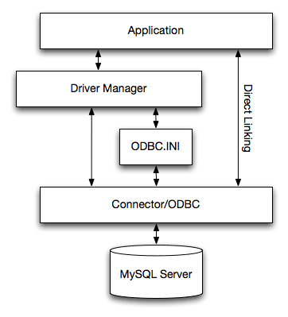
· 应用程序：
应用程序指的是通过调用ODBC API来访问MySQL服务器上数据的程序。应用程序使用标准的ODBC调用与驱动管理器进行通信。应用程序不关心数据的存储位置，存储方式，甚至不关心为访问数据而进行的系统配置方式。它仅需要知道数据源名（DSN）。
对于所有的应用程序，无论它们使用OBDC的方式是什么，很多任务是共同的。这些任务包括：
o 选择MySQL服务器，并与之连接。
o 提交将要执行的SQL语句。
o 检索结果（如果有的话）。
o 处理错误。
o 提交或回滚包含SQL语句的事务。
o 断开与MySQL服务器的连接。
由于大多数数据访问工作是使用SQL完成，对于使用OBDC的应用程序来说，其主要任务是提交SQL语句，并检索由这些语句生成的结果。
· 驱动管理器：
驱动管理器是用于管理应用程序和驱动程序间通信的库。它负责执行下述任务：
o 解析数据源名（DSN）。
o 加载和卸载驱动程序。
o 处理ODBC调用，或将其传递给驱动程序。
· MyODBC驱动程序：
MyODBC驱动程序是用于实施ODBC API所提供功能的库。它负责处理ODBC函数调用，将SQL请求提交给MySQL服务器，并将结果返回给应用程序。如有必要，驱动程序会更改应用程序的请求，以便该请求符合MySQL支持的语法。
· ODBC.INI：
ODBC.INI是ODBC配置文件，其中保存了连接到服务器所需的驱动信息和数据库信息。驱动管理器将使用它来确定加载哪个驱动程序（使用数据源名）。驱动程序将根据指定的DSN使用它来读取连接参数。更多信息，请参见26.1.9节，“MyODBC配置”。
· MySQL服务器：
MySQL服务器是数据源。MySQL是：
o 一种数据库管理系统（DBMS）
o 一种关联数据库管理系统（RDBMS）
o 开放源码软件
· 解析数据源名（DSN）。
· 加载和卸载驱动程序。
· 处理ODBC函数调用，或将其传递给驱动程序。
下面给出了一些常用的驱动程序：
· Microsoft Windows ODBC驱动管理器（odbc32.dll），http://www.microsoft.com/data/
· unixODBC Unix驱动管理器（libodbc.so），http://www.unixodbc.org。
· iODBC ODBC Unix驱动管理器（libiodbc.so），http://www.iodbc.org。
从2.1.2版开始，UnixODBC也提供MyODBC 3.51。
26.1.2.4. MySQL ODBC驱动程序的类型
MyODBC能够工作在Windows 9x, Me, NT, 2000, XP和2003，以及大多数Unix平台上。
MyODBC是开放源码软件。你可以在网站http://dev.mysql.com/downloads/connector/odbc/上找到它的最新版本。请注意，2.50.x版采用的是LGPL许可，而3.51.x版采用的是GPL许可。
如果使用MyODBC时出现了问题，而且你的程序还能与OLEDB一起工作，应尝试使用OLEDB驱动程序。
正常情况下，在Windows机器上仅需安装MyODBC。仅当你拥有运行在Unix机器上的程序（如ColdFusion），而且该程序将使用ODBC来访问数据库时，才需安装用于Unix的MyODBC。
如果你打算在Unix机器上安装MyODBC，还需要1个ODBC管理器。MyODBC能够与大多数Unix ODBC管理器一起工作。
· 要想使用ODBC应用程序（不支持MySQL的应用程序），建立从Windows平台到Unix平台的连接，首先必须在Windows机器上安装MyODBC。
· 用户和Windows机器必须具有访问位于Unix机器上的MySQL服务器的权限。这可通过GRANT命令设置。请参见13.5.1.3节，“GRANT和REVOKE语法”。
· 必须创建ODBC DSN条目，方式如下：
1. 打开Windows机器上的控制面板。
2. 双击ODBC数据源32位图标。
3. 点击选项卡“用户DSN”。
4. 点击“添加”按钮。
5. 在“创建新数据源”屏幕上选择MySQL，并点击“完成”按钮。
6. 显示MySQL驱动程序的默认配置屏幕。请参见26.1.9.2节，“在Windows上配置MyODBC DSN”。
· 启动应用程序，并使用在ODBC管理器中指定的DSN选择ODBC驱动程序。
注意，在MySQL屏幕上还显示了其他选项，如果遇到问题，可尝试这些选项（如跟踪、连接时不提示等）。
在Windows平台上，安装较旧的MyODBC 2.50驱动时，可能会遇到下述错误：
拷贝C:\WINDOWS\SYSTEM\MFC30.DLL时出现错误。
重启Windows，并再次安装（在运行任何使用ODBC的应用程序之前）。
问题在于其他程序正使用ODBC。由于Windows的设计方式，在这种情况下，你可能无法使用Microsoft的ODBC设置程序安装新的ODBC驱动。在大多数情况下，可以通过连续按“忽略”键拷贝剩余的MyODBC文件，最终安装应仍能工作。如不然，解决方案是在“安全模式”下重新启动计算机。在重启的过程中，在机器启动Windows前按F8，选择“安全模式”，安装MyODBC，然后在正常模式下重新启动计算机。
26.1.5. I在Unix平台上从二进制版本安装MyODBC
要想使用RPM分发版在Linux平台上安装或升级MyODBC，可简单地下载最新MyODBC的RPM分发版，并按照下面介绍的方式操作。使用su root成为根用户，然后安装RPM文件。
如果是首次安装：
shell> su root
shell> rpm -ivh MyODBC-3.51.01.i386-1.rpm
如果驱动程序已存在，可按照下述方式升级它：
shell> su root
shell> rpm -Uvh MyODBC-3.51.01.i386-1.rpm
如果存在关于MySQL客户端库libmysqlclient的任何依存错误，可使用“-nodeps”选项简单地忽略它，然后确保MySQL客户端共享库位于路径中或通过LD_LIBRARY_PATH进行了设置。
这样，就会将驱动程序库和相关文件分别安装到/usr/local/lib和/usr/share/doc/MyODBC目录下。请转至26.1.9.3节，“在Unix平台上配置MyODBC DSN”。
要想卸载驱动程序，请首先成为根用户，然后执行rpm命令：
shell> su root
shell> rpm -e MyODBC
要想从tarball分发版（.tar.gz文件）安装驱动程序，请下载针对你所使用操作系统的最新版驱动程序，然后按照下述步骤操作：
shell> su root
shell> gunzip MyODBC-3.51.01-i686-pc-linux.tar.gz
shell> tar xvf MyODBC-3.51.01-i686-pc-linux.tar
shell> cd MyODBC-3.51.01-i686-pc-linux
请阅读INSTALL-BINARY文件中的安装说明，并执行下述命令：
shell> cp libmyodbc* /usr/local/lib
shell> cp odbc.ini /usr/local/etc
shell> export ODBCINI=/usr/local/etc/odbc.ini
然后，请跳至26.1.9.3节，“在Unix平台上配置MyODBC DSN”为MyODBC配置DSN。更多信息，请参见与发布版一起提供的INSTALL-BINARY文件。
· MDAC, Microsoft Data Access SDK：http://www.microsoft.com/data/。
· MySQL客户端库以及MySQL 4.0.0或更高版本的包含文件。（最好是MySQL 4.0.16或更高版本）。应满足上述要求，这是因为MyODBC需要用到该版本以上的库才提供的新调用和结构。要想获得客户端库和包含文件，请访问http://dev.mysql.com/downloads/。
要想创建驱动程序，请采取下述步骤：
1. 下载并将源码展开到文件夹，然后将位置切换到该文件夹。在下述命令中，假定文件夹为myodbc3-src：
2. C:\> cd myodbc3-src
3. 编辑Makefile，为MySQL客户端库和头文件指定正确的路径。然后使用下述命令创建并安装发布版。
4. C:\> nmake -f Makefile
5. C:\> nmake -f Makefile install
nmake -f Makefile用于创建驱动程序的发布版并将二进制码放入名为Release的子目录下。
nmake -f Makefile install用于将驱动程序DLL和库（myodbc3.dll, myodbc3.lib）安装（拷贝）到系统目录下。
6. 要想创建调试版，请使用Makefile_Debug而不是Makefile，如下所示：
7. C:\> nmake -f Makefile_debug
8. C:\> nmake -f Makefile_debug install
9. 使用下述命令，可清除并重新创建驱动程序：
10. C:\> nmake -f Makefile clean
11. C:\> nmake -f Makefile install
注释：
· 确保在Makefiles中指定了正确的MySQL客户端库和头文件路径（设置MYSQL_LIB_PATH和MYSQL_INCLUDE_PATH变量）。默认的头文件路径是C:\mysql\include。对于发布版DLL，默认的库路径是C:\mysql\lib\opt，对于调试版，默认路径是C:\mysql\lib\debug。
· 关于nmake的完整用法，请参见http://msdn.microsoft.com/library/default.asp?url=/library/en-us/dv_vcce4/html/evgrfRunningNMAKE.asp。
· 如果你正在使用BitKeeper树来进行编译，所有的针对Windows的Makefiles均将被命名为Win_Makefile*。
26.1.6.3. 测试
· MySQL客户端库以及MySQL 4.0.0或更高版本的包含文件。（最好是MySQL 4.0.16或更高版本）。应满足上述要求，这是因为MyODBC需要用到该版本以上的库才提供的新调用和结构。要想获得客户端库和包含文件，请访问http://dev.mysql.com/downloads/。
· 必须使用“--enable-thread-safe-client”选项配置MySQL库。Libmysqlclient是作为共享库安装的。
· 必须安装下述Unix ODBC驱动管理器之一：
o iodbc 3.0或更高版本（http://www.iodbc.org）
o unixodbc Alpha 3或更高版本（http://www.unixodbc.org）
· 如果使用了未编译在MySQL客户端库中的字符集（默认字符集为： latin1 big5 czech euc_kr gb2312 gbk sjis tis620 ujis），就需要从字符集目录下将mysql字符定义安装到SHAREDIR中（默认情况下位于/usr/local/mysql/share/mysql/charsets）。如果在相同机器上安装了MySQL，它们应位于恰当位置。
一旦完成了所有所需文件的安装，将源码文件解包到单独目录下，并按照下面给出的说明进行操作。
26.1.7.2. 典型配置选项
shell> ./configure --help
下面介绍了一些常用的“configure”选项。
1. 要想编译MyODBC，须使用“--with-mysql-path=DIR”选项来提供MySQL客户端库文件和包含文件路径，其中，“DIR”是MySQL的安装目录。
可通过运行“DIR/bin/mysql_config”来确定MySQL编译选项。
2. 为ODBC驱动管理器（iodbc或unixobc）提供标准的头文件和库文件路径。
· 如果你正在使用iodbc，而且iodbc未安装在其默认位置（/usr/local），可能需要使用“--with-iodbc=DIR”选项，其中，“DIR”是iodbc的安装目录。
如果iodbc头文件未位于DIR/include目录下，可使用“--with-iodbc-includes=INCDIR”选项指定它们的位置。
上面所述也适用于库文件。如果库文件未位于DIR/lib目录下，可使用“--with-iodbc-libs=LIBDIR”选项。
· 如果你正在使用unixODBC，可使用“--with-unixODBC=DIR”选项（区分大小写），让configure寻找unixODBC而不是默认的iodbc，其中，“DIR”是unixODBC的安装目录。
如果unixODBC头文件和库文件未位于目录DIR/include和DIR/lib下，可使用“--with-unixODBC-includes=INCDIR”和“--with-unixODBC-libs=LIBDIR”选项。
3. 或许你也希望指定不同于“/usr/local”的安装前缀。例如，要想将MyODBC驱动安装到“/usr/local/odbc/lib”目录下，可使用“--prefix=/usr/local/odbc”选项。
最终的配置命令应与下面给出的相似：
shell> ./configure --prefix=/usr/local \
--with-iodbc=/usr/local \
--with-mysql-path=/usr/local/mysql
26.1.7.3. 线程安全客户端
--enable-thread-safe
也可以使用下述选项禁止它：
--disable-thread-safe
使用该选项，能够通过mysql线程安全客户端库libmysqlclient_r.so（扩展名与操作系统有关）的链接，创建驱动程序线程安全库libmyodbc3_r.so。
在配置线程安全选项时，如果出现了配置错误，应检查config.log，检查错误是否是因系统中缺少线程库而导致的，如果是，使用LIBS选项提供一个，即
LIBS="-lpthread" ./configure ..
26.1.7.4. 共享或静态选项
可以使用下述选项启用或禁止共享和静态选项：
--enable-shared[=yes/no] --disable-shared --enable-static[=yes/no] --disable-static
shell> make
如果出现错误，更正后，继续执行创建进程。如果无法创建，请发送详细的电子邮件至myodbc@lists.mysql.com，以获取进一步帮助。
26.1.7.8. 创建共享库
在大多数平台上，默认情况下，MySQL不会创建或支持“.so”（共享）客户端库，这是因为，创建共享库在过去造成过很多问题。
在这种情况下，你可以下载MySQL分发版，并使用以下选项进行配置：
--without-server --enable-shared
要想创建共享驱动程序库，必须为“configure”指定“--enable-shared”选项。默认情况下，“configure”不启用该选项。
如果使用“--disable-shared”选项进行了配置操作，可使用下述命令，从静态库创建“.so”文件。
shell> cd MyODBC-3.51.01
shell> make
shell> cd driver
shell> CC=/usr/bin/gcc \
$CC -bundle -flat_namespace -undefined error \
-o .libs/libmyodbc3-3.51.01.so \
catalog.o connect.o cursor.o dll.o error.o execute.o \
handle.o info.o misc.o myodbc3.o options.o prepare.o \
results.o transact.o utility.o \
-L/usr/local/mysql/lib/mysql/ \
-L/usr/local/iodbc/lib/ \
-lz -lc -lmysqlclient -liodbcinst
如果你正在使用unixODBC而不是iODBC，务必将“-liodbcinst”更改为“-lodbcinst”，并相应地配置库路径。
这样，就创建了libmyodbc3-3.51.01.so文件，并将其放在“.libs”目录下。将该文件拷贝到MyODBC库目录下（/usr/local/lib，或使用“--prefix”提供的安装目录下的“lib”目录）。
shell> cd .libs
shell> cp libmyodbc3-3.51.01.so /usr/local/lib
shell> cd /usr/local/lib
shell> ln -s libmyodbc3-3.51.01.so libmyodbc3.so
要想创建线程安全驱动程序库：
shell> CC=/usr/bin/gcc \
$CC -bundle -flat_namespace -undefined error
-o .libs/libmyodbc3_r-3.51.01.so
catalog.o connect.o cursor.o dll.o error.o execute.o
handle.o info.o misc.o myodbc3.o options.o prepare.o
results.o transact.o utility.o
-L/usr/local/mysql/lib/mysql/
-L/usr/local/iodbc/lib/
-lz -lc -lmysqlclient_r -liodbcinst
shell> make install
该命令将安装下述库集合之一：
对于MyODBC 3.51：
· libmyodbc3.so
· libmyodbc3-3.51.01.so，其中，3.51.01是驱动程序的版本
· libmyodbc3.a
对于线程安全MyODBC 3.51：
· libmyodbc3_r.so
· libmyodbc3-3_r.51.01.so
· libmyodbc3_r.a
对于MyODBC 2.5.0：
· libmyodbc.so
· libmyodbc-2.50.39.so，其中，2.50.39是驱动程序的版本
· libmyodbc.a
关于创建进程的更多信息，请参阅与源码分发版一起提供的INSTALL文件。注意，如果你试图使用Sun的“make”，可能会以错误结束。从另一方面来说，GNU gmake在所有平台上均能良好工作。
26.1.7.10. 在Unix平台上测试MyODBC
shell> ./configure --prefix=/usr/local
--with-unixODBC=/usr/local
--with-mysql-path=/usr/local/mysql
--disable-shared
--enable-gui=no
--host=powerpc-apple
该命令假定unixODBC和MySQL均安装在默认位置。如不然，请进行相应配置。
在 Mac OS X环境下，“--enable-shared”选项将默认创建“.dylib”文件。你也可以采用下述方式创建“.so”文件：
shell> make
shell> cd driver
shell> CC=/usr/bin/gcc \
$CC -bundle -flat_namespace -undefined error
-o .libs/libmyodbc3-3.51.01.so *.o
-L/usr/local/mysql/lib/
-L/usr/local/iodbc/lib
-liodbcinst -lmysqlclient -lz -lc
要想创建线程安全驱动程序库：
shell> CC=/usr/bin/gcc \
$CC -bundle -flat_namespace -undefined error
-o .libs/libmyodbc3-3.51.01.so *.o
-L/usr/local/mysql/lib/
-L/usr/local/iodbc/lib
-liodbcinst -lmysqlclienti_r -lz -lc -lpthread
如果你正在使用unixODBC而不是iODBC，务必将“-liodbcinst”更改为“-lodbcinst”，并相应地配置库路径。
在Apple的GCC版本中，cc和gcc实际上均是gcc3的符号链接。
将该库拷贝到$prefix/lib目录下，并将symlink拷贝到libmyodbc3.so。
可以使用下述命令交叉检验输出的共享库属性：
shell> otool -LD .libs/libmyodbc3-3.51.01.so
26.1.7.12. HP-UX注意事项
如果使用cc：
shell> CC="cc" \
CFLAGS="+z" \
LDFLAGS="-Wl,+b:-Wl,+s" \
./configure --prefix=/usr/local
--with-unixodbc=/usr/local
--with-mysql-path=/usr/local/mysql/lib/mysql
--enable-shared
--enable-thread-safe
如果使用gcc：
shell> CC="gcc" \
LDFLAGS="-Wl,+b:-Wl,+s" \
./configure --prefix=/usr/local
--with-unixodbc=/usr/local
--with-mysql-path=/usr/local/mysql
--enable-shared
--enable-thread-safe
一旦创建了驱动程序，使用“chatr .libs/libmyodbc3.sl”交叉检查其属性，查看是否需要使用SHLIB_PATH环境变量的MySQL客户端库。对于静态版，忽略所有的共享库选项，并使用“--disable-shared”选项运行“configure”。
26.1.7.13. AIX注意事项
要想在AIX环境下创建驱动程序，可使用下述configure示例：
shell> ./configure --prefix=/usr/local
--with-unixodbc=/usr/local
--with-mysql-path=/usr/local/mysql
--disable-shared
--enable-thread-safe
注释： 关于在不同平台上创建和设置静态和共享库方式的更多信息，请参见跨平台使用静态和共享库。注释： 如果你对协助我们测试新的代码感兴趣，应阅读本节的内容。
要想获得我方的最新开发源码树，请：
1. 参见2.8.3节，“从开发源码树安装”，关于如何下载和安装BitKeeper的说明。
2. 安装完BitKeeper后，首先进入打算在其中工作的目录，然后，如果打算克隆MyODBC 3.51分支，请使用该命令：
3. shell> bk clone bk://mysql.bkbits.net/myodbc3 myodbc-3.51
在前面的示例中，源码树是在myodbc-3.51/中设置的，或在当前目录的myodbc3/子目录下设置的（默认）。如果你位于防火墙后，而且仅能启动HTTP连接，也可以通过HTTP使用BitKeeper。如果要求使用代理服务器，可简单地设置环境变量http_proxy，使之指向代理服务器：
shell> export http_proxy="http://your.proxy.server:8080/"
执行克隆操作时，用http://替换bk://。例如：
shell> bk clone http://mysql.bkbits.net/myodbc3 myodbc-3.51
首次下载源码树时需要一段时间，具体情况取决于连接速度，请耐心等候。
4. 要想运行下一组命令，需要GNU autoconf 2.52（或更新版本），automake 1.4，libtool 1.4，以及m4。
5. shell> cd myodbc-3.51
6. shell> bk -r edit
7. shell> aclocal; autoheader; autoconf; automake;
8. shell> ./configure # Add your favorite options here
9. shell> make
关于如何创建的更多信息，请参阅位于相同目录下的INSTALL文件。在Windows平台下，创建驱动程序时，请使用Windows Makefiles WIN-Makefile和WIN-Makefile_debug，更多信息，请参见26.1.6节，“在Windows平台上从源码版本安装MyODBC”。
10.完成创建后，运行make install，将MyODBC 3.51驱动程序安装到你的系统上。
11.如果进入了make阶段，但并未编译分发版本，请将其通报给myodbc@lists.mysql.com。
12.启动了bk clone操作获得源码树后，应定期运行bk pull进行更新。
13.可以使用“bk sccstool”检查树的变更史。如果你发现了有趣的差异，并对代码存在一问，请立刻发送电子邮件至myodbc@lists.mysql.com。
此外，如果你认为有更好的主意，请发送电子邮件至相同的地址并附上补丁。更改了源码后，使用“bk diffs”可生成补丁。如果你没有时间就你的观点编写代码，可发送描述性信息。
14.BitKeeper具有一个可通过bk helptool访问的帮助工具。
通过浏览http://mysql.bkbits.net:8080/myodbc3，也能在线浏览变化集、注释和源代码。
事实上，数据源就是数据的路径。在不同的情况下，它可能有着不同的内容，但是在典型情况下，它指明了正在运行的MySQL服务器（例如，通过网络地址或服务器名），连接时该服务器的默认数据库，以及必要的连接信息（如端口）。MySQL驱动程序（以及Windows系统上的ODBC驱动管理器）将使用数据源进行连接。对于该目的，名为Microsoft ODBC数据源管理器的管理工具可能十分有用。
有两处可能保存初始化信息的位置： Windows注册表（Windows系统），或DSN文件（任何系统）。
如果信息位于Windows注册表中，它称为“机器数据源”。它可以是“用户数据源”，在这种情况下，只有一位用户能看到它。它也可以是“系统数据源”，在这种情况下，计算机上的所有用户均能访问它，如果用户是通过Microsoft Windows NT服务连接在一起的话，与该计算机相连的所有用户均能访问它。运行ODBC数据管理程序时，可以选择是否使用“用户”或“系统”，它们位于不同的选项卡上。
如果信息位于DSN文件中，它称为“文件数据源”。这是一种文本文件。其优点在于： （a）它适合于任何类型的计算机，而不仅仅是使用Windows操作系统的计算机；（b）其内容的拷贝或传输相对容易。
26.1.9.2. 在Windows上配置MyODBC DSN
要想在Windows平台上添加和配置新的MyODBC数据源，请使用ODBC数据源管理器。ODBC管理器能够更新数据源连接信息。添加了数据源时，ODBC管理器能够更新注册信息。
要想从控制面板打开ODBC管理器：
1. 点击“开始”，将指针指向“设置”，然后点击“控制面板”。
2. 在运行Microsoft Windows 2000或更新版本的计算机上，双击“管理工具”，然后双击“数据源”（ODBC）。在运行旧版本Windows的计算机上，双击32位ODBC或ODBC。

打开ODBC数据源管理器对话框，如下图所示：
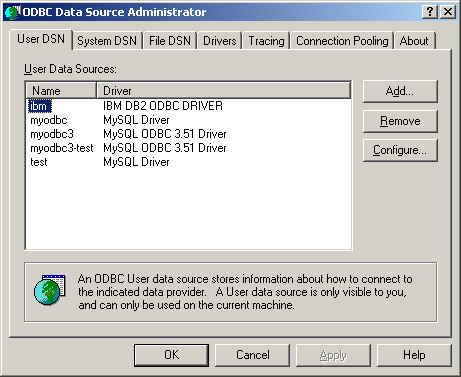
点击“帮助”以了解ODBC数据源管理器对话框各选项卡的详细信息。
要想在Windows平台上添加数据源：
1. 打开ODBC数据源管理器。
2. 在ODBC数据源管理器对话框中，点击“添加”。打开“创建新数据源”对话框。
3. 选择MySQL ODBC 3.51驱动程序，然后点击“完成”。打开“MySQL ODBC 3.51驱动程序-DSN配置”对话框，如下图所示：
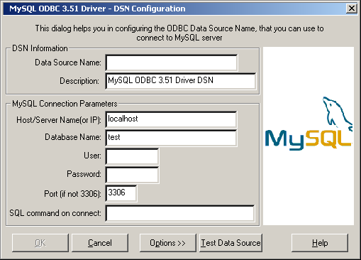
4. 在“数据源名”框中，输入打算访问的数据源的名称。它可以是你选择的任何有效名称。
5. 在“描述”框中，输入DSn所需的描述信息。
6. 在“主机”或“服务器名”（或IP）框中，输入准备访问的MySQL服务器主机的名称。默认情况下为localhost（本地主机）。
7. 在“数据库名”框中，输入准备用作默认数据库的MySQL数据库名称。
8. 在“用户”框中，输入你的MySQL用户名（数据库用户ID）。
9. 在“密码”框中输入密码。
10.在“端口”框中，如果端口不是默认端口，输入端口号。
11.在“SQL命令”框中，可输入建立连接后自动执行的SQL语句。
最后，对话框与下图显示的类似：
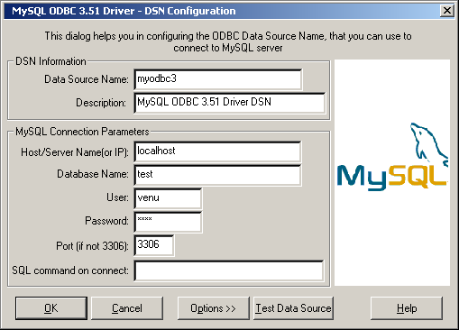
点击“OK”添加该数据源。
注释： 点击“OK”后，将打开“数据源”对话框，ODBC管理器将更新注册信息。连接到该数据源时，你所输入的用户名和连接字符串将成为该数据源的默认连接值。
你也可以使用“测试数据源”按钮，测试你的设置是否适合于连接到服务器。该特性仅对MyODBC 3.51驱动程序有效。成功完成测试后，将显示下述窗口：
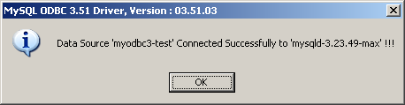
如果测试失败，将显示错误消息。
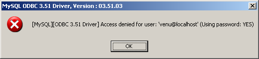
DNS配置对话框也有一个“选项”按钮。如果选择了它，将打开下述选项对话框，显示控制驱动程序的行为。关于这些选项的含义，请参见26.1.9.4节，“连接参数”。
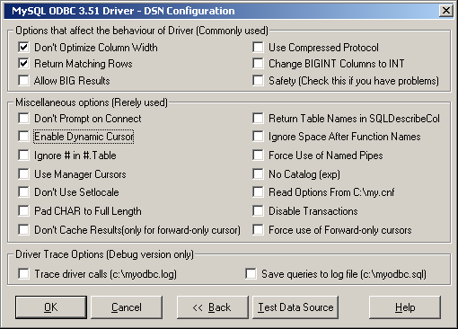
注释： 在“驱动程序跟踪”选项下列出的选项已被禁止（灰色），除非你使用的是驱动DLL的调试版本。
要想在Windows平台上更改数据源：
1. 打开ODBC数据源管理器。点击恰当的选项卡“DSN”。
2. 选择打算更改的MySQL数据源，然后点击“配置”。打开“MySQL ODBC 3.51驱动程序-DSN配置”对话框。
3. 更改适用的数据源字段，然后点击“OK”。
更改完该对话框中的信息后，ODBC管理器将更新注册信息。
在Unix平台上，可以直接在odbc.ini文件中配置DSN条目。这里给出了1个典型的odbc.ini文件，在该文件中，分别将myodbc和myodbc3配置为MyODBC 2.50和MyODBC 3.51的DSN名称：
;
; odbc.ini对MyODBC和MyODBC 3.51驱动程序的配置
; [ODBC Data Sources] myodbc = MyODBC 2.50 Driver DSN myodbc3 = MyODBC 3.51 Driver DSN [myodbc] Driver = /usr/local/lib/libmyodbc.so Description = MyODBC 2.50 Driver DSN SERVER = localhost PORT = USER = root Password = Database = test OPTION = 3 SOCKET = [myodbc3] Driver = /usr/local/lib/libmyodbc3.so Description = MyODBC 3.51 Driver DSN SERVER = localhost PORT = USER = root Password = Database = test OPTION = 3 SOCKET = [Default] Driver = /usr/local/lib/libmyodbc3.so Description = MyODBC 3.51 Driver DSN SERVER = localhost PORT = USER = root Password = Database = test OPTION = 3 SOCKET =
关于可提供连接参数的清单，请参见26.1.9.4节，“连接参数”。
注释： 如果你正在使用unixODBC，可使用下述工具设置DSN：
· ODBCConfig GUI tool(HOWTO: ODBCConfig)
· odbcinst
在某些情况下使用unixODBC，可能会出现下述错误：
Data source name not found and no default driver specified（数据源名不存在，未指定默认驱动程序）
如果出现该情况，请确认ODBCINI和ODBCSYSINI环境变量指向正确的odbc.ini文件。例如，如果你的odbc.ini文件位于目录“/usr/local/etc”下，可将环境变量设为：
export ODBCINI=/usr/local/etc/odbc.ini
export ODBCSYSINI=/usr/local/etc
你可以在ODBC.INI文件的[Data Source Name]（数据源名）部分、或通过SQLDriverConnect() call的InConnectionString参量为MyODBC指定下述参数。
|
参数 |
默认值 |
注释 |
|
user |
ODBC (on Windows) |
用于链接至MySQL的用户名。 |
|
server |
localhost |
MySQL服务器的主机名。 |
|
database |
|
默认数据库。 |
|
option |
0 |
指定MyODBC工作方式的选项。参见下面。 |
|
port |
3306 |
如果服务器不是本地主机将要使用的TCP/IP端口。 |
|
stmt |
|
连接至MySQL时将要执行的语句。 |
|
password |
|
服务器上用户账户的密码。 |
|
socket |
|
当服务器是本地主机是将要连接的Unix套接字文件或Windows命名管道。 |
选项参量用于通知MyODBC：客户端不是100% ODBC兼容的。在Windows平台下，正常情况下，应通过切换连接屏幕上的复选框选择选项，但也能在选项参量中选择它们。下述选项是按照它们在MyODBC连接屏幕上显示的顺序排列的：
|
值 |
描述 |
|
1 |
客户端无法处理，MyODBC返回列的实际宽度。 |
|
2 |
客户端无法处理，MyODBC返回受影响行的真值。如果设置了该标志，MySQL将返回“发现的行”取而代之。MySQL的版本必须是3.21.14或更高版本，该功能才能生效。 |
|
4 |
在c:\myodbc.log中生成调试日志。它与将MYSQL_DEBUG=d:t:O,c::\myodbc.log放到AUTOEXEC.BAT中的效果相同（在Unix平台下，该文件是/tmp/myodbc.log）。 |
|
8 |
不为结果和参数设置任何信息报限制。 |
|
16 |
即使驱动程序可能会给出提示，对出现的问题不予提示。 |
|
32 |
允许或禁止动态光标支持。（在MyODBC 2.50中不允许）。 |
|
64 |
在db_name.tbl_name.col_name中忽略数据库名的使用。 |
|
128 |
强制使用ODBC管理器光标（实验性）。 |
|
256 |
禁止使用扩展取数据（实验性）。 |
|
512 |
将CHAR列填充为全列宽。 |
|
1024 |
SQLDescribeCol()返回完全合格的列名。 |
|
2048 |
使用压缩客户端／服务器协议。 |
|
4096 |
通知服务器忽略函数名之后和“(”之前的空格（PowerBuilder要求这样）。这会使所有的函数名成为关键字。 |
|
8192 |
用命名管道链接至运行在NT环境下的mysqld服务器。 |
|
16384 |
将LONGLONG列更改为INT列（某些应用程序不能处理LONGLONG列）。 |
|
32768 |
从SQLTables返回作为Table_qualifier和Table_owner的用户（实验性）。 |
|
65536 |
从my.cnf的[client]和[odbc]组读取参数。 |
|
131072 |
增加一些额外检查（不应需要之，但…）。 |
|
262144 |
禁止事务。 |
|
524288 |
允许将查询记录到c:\myodbc.sql(/tmp/myodbc.sql)文件。（仅在调试模式下才能启用）。 |
|
1048576 |
不要驱动中的结果进行缓冲处理，而应从服务器读取“mysql_use_result()”。仅对正向光标才能起作用。当你不希望缓冲处理整个结果集时，对于大表处理，该选项十分重要。 |
|
2097152 |
强制使用正向光标类型。在应用程序设置了默认静态／动态光标类型的情况下，如果希望驱动程序使用非缓冲结果集，那么该选项能够保证正向光标的行为。 |
要想选择多个选项，可将它们的值加在一起。例如，将选项设置为12（4＋8），就能获得调试功能，但没有信息包限制。
默认的myodbc3.dll是为优化性能而编译的。如果希望调试MyODBC 3.51（例如，启用跟踪功能），应使用myodbc3d.dll。要想安装该文件，请拷贝myodbc3d.dll，使之覆盖已安装的myodbc3.dll文件。一旦完成了调试操作，务必恢复至驱动DLL的发布版本，这是因为调试版本可能会导致性能问题。注意，在MyODBC 3.51.07至3.51.11中未包含myodbc3d.dll。如果你正在使用这些版本中的一个，应从之前的版本（例如3.51.06）拷贝该DLL文件。
对于MyODBC 2.50，采用了myodbc.dll和myodbcd.dll取而代之。
在下面的表各中，给出了针对各种配置的推荐选项值：
|
配置 |
选项值 |
|
Microsoft Access |
3 |
|
Microsoft Visual Basic |
3 |
|
具有很多行的大表 |
2049 |
|
驱动跟踪生成（调试模式） |
4 |
|
查询日志生成（调试模式） |
524288 |
|
生成驱动跟踪和查询日志（调试模式） |
524292 |
|
具有非缓冲结果的大表 |
3145731 |
是。通过指定DRIVER名称字段，可使用SQLDriverConnect连接到MySQL服务器。下面给出了使用DSN-Less连接的MyODBC连接字符串：
对于MyODBC 2.50：
ConnectionString = "DRIVER={MySQL};\
SERVER=localhost;\
DATABASE=test;\
USER=venu;\
PASSWORD=venu;\
OPTION=3;"
对于MyODBC 3.51：
ConnectionString = "DRIVER={MySQL ODBC 3.51 Driver};\
SERVER=localhost;\
DATABASE=test;\
USER=venu;\
PASSWORD=venu;\
OPTION=3;"
如果你使用的编程语言会将后跟空格的反斜杠转换为空格，最好将连接字符串指定为单个长字符串，或使用不会在其中添加空格的多个字符串串接。例如：
ConnectionString = "DRIVER={MySQL ODBC 3.51 Driver};"
"SERVER=localhost;"
"DATABASE=test;"
"USER=venu;"
"PASSWORD=venu;"
"OPTION=3;"
关于可提供连接参数的清单，请参见26.1.9.4节，“连接参数”。
如果你打算使用myuser和mypassword作为用户名和密码从系统B连接到系统A，可参考下面给出的简单步骤。
在系统A上，执行下述步骤：
1. 启动MySQL服务器。
2. 使用GRANT建立用户名为myuser的账户，该账户可使用密码myuser从系统B建立连接。
3. GRANT ALL ON *.* to 'myuser'@'B' IDENTIFIED BY 'mypassword';
4. GRANT语句为用户myuser授予了使用密码mypassword从系统B进行连接的所有权限。要想执行该语句，必须在系统A上拥有根用户权限，或是具有恰当权限的另一用户。关于MySQL权限的更多信息，请参见5.8节，“MySQL用户账户管理”。
在系统B上，执行下述步骤：
1. 使用下述连接参数配置MyODBC DSN：
2. DSN = remote_test
3. SERVER or HOST = A (or IP address of system A)
4. DATABASE = test (The default database or an appropriate one)
5. USER = myuser
6. PASSWORD = mypassword
关于建立DSN-less连接的更多信息，请参见26.1.9.5节，“没有预定义DSN下的连接”。
7. 使用Ping命令或其它方式检查是否能从系统B访问系统A。如果无法访问系统A，请检查网络或Internet连接，或与你的系统管理员联系。
8. 尝试使用DSN=remote_test进行连接。如果失败，请跟踪查询MyODBC日志，并根据日志给出的错误信息采取进一步的步骤。如果需要进一步帮助，请发送详细的电子邮件至myodbc@lists.mysql.com。
在下述站点，你可以找到关于如何完成该操作的简单示例：http://www.phphelp.com/tutorial/using-myodbc-to-connect-to-a-remote-database.html.
如果遇到与MyODBC有关的困难或问题，首先应使用ODBC管理器和MyODBC生成一份日志文件（请求来自ODBC ADMIN的日志时获得的日志文件）。
要想通过驱动管理器获得ODBC跟踪文件，可采取下述步骤：
· 打开ODBC数据源管理器：
1. 点击“开始”，将指针指向“设置”，然后点击“控制面板”。
2. 在运行Microsoft Windows 2000、XP或2003的计算机上，双击“管理工具”，然后双击“数据源”（ODBC），如下图所示。

在运行早期Microsoft Windows版本的计算机上，双击“控制面板”中的32位ODBC或ODBC。
3. 打开ODBC数据源管理器对话框，如下图所示：
4. 点击“帮助”以了解ODBC数据源管理器对话框各选项卡的详细信息。
· 启用跟踪选项 对于Windows和Unix平台，该步骤不同。
要想在Windows平台上启用跟踪选项：
1. 通过“ODBC数据源管理器”对话框的“跟踪”选项卡，可对跟踪ODBC函数的方式进行配置。
2. 从“跟踪”选项卡激活了跟踪功能后，驱动管理器会对后续运行的所有应用程序的ODBC函数调用进行跟踪。
3. 激活跟踪功能前所运行应用程序的ODBC函数调用不会被记录。ODBC函数调用将被记录在你指定的日志文件中。
4. 点击“现在停止跟踪”后，跟踪功能将停止。请记住，启动跟踪功能后，日志文件将不断增大，而且跟踪功能会影响所有ODBC应用程序的性能。
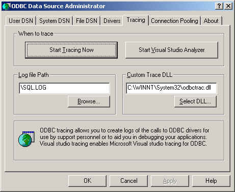
要想在Unix平台上启用跟踪选项：
5. 在Unix平台上，需要在ODBC.INI文件中明确设置跟踪选项。
使用TraceFile和odbc.ini中的Trace（跟踪）参数打开或关闭跟踪功能，如下所示：
TraceFile = /tmp/odbc.trace
Trace = 1
TraceFile指明了跟踪文件的名称和完整路径，将Trace（跟踪）设为ON或OFF。也可以使用“1”或“Yes”表示ON，以及“0”或“No”表示OFF。如果正在使用unixODBC的ODBCConfig，然后遵照HOWTO-ODBCConfig中介绍的关于跟踪unixODBC调用的指示说明。
要想生成MyODBC日志，可采取下述步骤：
6. 确保你所使用的是驱动程序调试DLL（对于MyODBC 3.51，它是myodbc3d.dll而不是myodbc3.dll，对于MyODBC 2.50，它是myodbcd.dll）。
最简单的方法是从MyODBC 3.51分发版找到myodbc3d.dll（或myodbcd.dll），并用其覆盖myodbc3.dll（或myodbc.dll），该文件通常位于C:\windows\system32或C:\winnt\system32目录下。注意，完成测试后，你或许希望恢复旧的myodbc.dll文件，这是因为它比myodbc3d.dll（或myodbcd.dll）快很多，因此，请保存原始DLL的备份。
7. 在“MyODBC连接／配置”屏幕上启用“跟踪MyODBC”选项。日志将被写入文件C:\myodbc.log。当你返回上述屏幕时，如果你设置的跟踪选项未被记住，表明你正在使用的是myodbcd.dll驱动（参见前面的介绍）。在Linux平台上，或你使用的是DSN-Less连接，需在连接字符串中提供“OPTION=4”。
8. 启动应用程序，并尝试着使其出现问题。然后检查MyODBC跟踪文件，找出可能出错的地方。
如果发现某些事项出错，请发送电子邮件至myodbc@lists.mysql.com（或support@mysql.com，如果有与MySQL AB签订的支持合同），简要描述出现的问题，并提供下述额外信息：
o MyODBC版本
o ODBC驱动管理器的类型和版本
o MySQL服务器的版本
o 驱动管理器的ODBC跟踪
o 来自MyODBC驱动的MyODBC日志文件
o 简单的可复制示例
请记住，你提供给我们的信息越多，我们更正问题的机会就越大。
此外，在提供缺陷信息前，请检查MyODBC邮件列表（http://lists.mysql.com/）。
使用下述应用程序测试了MyODBC：
MS Access 95, 97, 2000, and 2002
C++-Builder, Borland Builder 4
Centura Team Developer (formerly Gupta SQL/Windows)
ColdFusion (on Solaris and NT with service pack 5), How-to: MySQL and Coldfusion. Troubleshooting Data Sources and Database Connectivity for UnixPlatforms.
Crystal Reports
DataJunction
Delphi
ERwin
MS Excel
iHTML
FileMaker Pro
FoxPro
Notes 4.5/4.6
MS Visio Enterprise 2000
Vision
Visual Objects
Visual Interdev
SBSS
Perl DBD-ODBC
Paradox
Powerbuilder
Powerdesigner 32-bit
MS Visual C++
Visual Basic
ODBC.NET through CSharp(C#), VB and C++
Data Architect(http://thekompany.com/products/dataarchitect/)
SQLExpress for Xbase++(http://www.SQLExpress.net)
Open Office (http://www.openoffice.org) How-to: MySQL + OpenOffice. How-to: OpenOffice + MyODBC + unixODBC.
Star Office (http://wwws.sun.com/software/star/staroffice/6.0/index.html)
G2-ODBC bridge (http://www.gensym.com)
Sambar Server (http://www.sambarserver.info) How-to: MyODBC + SambarServer + MySQL.
如果你知道能够与MyODBC一起工作的其他应用程序，请以电子邮件的方式指明它：myodbc@lists.mysql.com。
大多数程序均能与MyODBC一起工作，对上面所列的每一程序，我们自己进行了测试，或得到用户的确认。很多介绍中均给出了你可能会遇到问题的描述。
· 程序
注释
要想使Access工作：
o 如果你正在使用Access 2000，应从下述地址获取并安装最新的（2.6版或更高）Microsoft MDAC（Microsoft数据访问组件），http://www.microsoft.com/data/。它更正了Access在将数据导出至MySQL时存在的一个缺陷，未指定表名和列名。另一种解决该缺陷的方法是，升级到MyODBC 2.50.33和MySQL 3.23.x, 它们共同提供了避免该问题的一种方式。
此外，你还应获取并应用Microsoft Jet 4.0 Service Pack 5 (SP5)，可在下述地址找到它：http://support.microsoft.com/default.aspx?scid=kb;EN-US;q239114。它修正了某些情况下在Access中列被标注为“#DELETED#”的问题。
注释： 如果你正使用MySQL 3.22，必须安装MDAC补丁，并使用MyODBC 2.50.32或2.50.34或更高版本以解决该问题。
o 对于所有版本的Access，应启用“MyODBC返回匹配行”选项。对于Access 2.0，还应额外启用“模拟ODBC 1.0”选项。
o 在希望能够更新的所有表中，均应有时间戳。为了获得最大的可移植性，在列声明中不要使用长度规范。也就是说，应使用TIMESTAMP，而不是TIMESTAMP(n), n < 14。
o 在表中应有1个主键。如不然，新的或更新的行可能会显示为“#DELETED#”。
o 仅应使用DOUBLE浮点字段。与单精度浮点进行比较时，Access将失败。其征兆是新的或更新的行可能会显示为“#DELETED#”，或无法找到或更新行。
o 如果你正使用MyODBC来链接到有BIGINT列的表，结果会显示为“#DELETED”。排除它的解决方案是：
§ 有1个以TIMESTAMP作为数据类型的虚拟列。
§ 在“ODBC DSN管理器”的连接对话框中选择“将BIGINT列更改为INT”选项。
§ 删除与Access的表链接，并重新创建它。
旧记录仍将显示为“#DELETED#”，但新增／更新的记录会恰当显示。
o 添加了TIMESTAMP列后，另一位用户更改了数据，如果错误依旧出现，下述技巧或许有所帮助：
不要使用表数据表视图。取而代之的是，从你希望使用的表创建一个表单，并使用表单数据表视图。应将TIMESTAM列的DefaultValue属性设置为NOW()。在视图中隐藏TIMESTAMP列或许是个好主意，这样就不会使你的用户感到迷惑。
o 在某些情况下，Access可能会生成MySQL无法理解的SQL语句。可通过在Access菜单中选择“Query|SQLSpecific|Pass-Through”来更正该问题。
o 在NT平台上，Access会将BLOB列通报为OLE OBJECTS（OLE对象）。如果你打算用MEMO列取而代之，应使用ALTER TABLE将BLOB列更改为TEXT。
o Access无法在任何时候均恰当处理DATE列。如果遇到这类问题，请将列更改为DATETIME。
o 如果在Access中存在定义为BYTE的列，Access会视图将其导出为TINYINT而不是TINYINT UNSIGNED。如果列中的值大于127，将出现问题。
使用ADO API和MyODBC进行编码时，需要注意某些不被MySQL服务器支持的默认属性。例如，对于RecordCount属性，如果将CursorLocation属性用作adUseServer，将返回结果“-1”。要想获得正确的值，需要将该属性设置为adUseClient，如下面给出的VB代码示例所示：
Dim myconn As New ADODB.Connection
Dim myrs As New Recordset
Dim mySQL As String
Dim myrows As Long
myconn.Open "DSN=MyODBCsample"
mySQL = "SELECT * from user"
myrs.Source = mySQL
Set myrs.ActiveConnection = myconn
myrs.CursorLocation = adUseClient
myrs.Open
myrows = myrs.RecordCount
myrs.Close
myconn.Close
另一种处理方式是，对类似查询使用SELECT COUNT(*)语句以获取正确的行计数。
· 主动服务器页（ASP）
应选择“返回匹配行”选项。
· BDE应用程序
要想使这类应用程序工作，应选择“不优化列宽度并返回匹配行”选项。
开始查询时，可使用Active属性或Open方法。注意，Active将通过自动发出“SELECT * FROM ...”查询开始。如果表很大，这不是什么好事。
下述信息取自ColdFusion文档：
使用下述信息来配置用于Linux的ColdFusion服务器，以便使用针对MySQL数据源的unixODBC驱动和MyODBC。Allaire已证明，MyODBC 2.50.26能够与MySQL 3.22.27以及用于Linux的ColdFusion一起工作。（任何较新的版本也应能正确工作）。你可以在网站http://dev.mysql.com/downloads/connector/odbc/上下载MyODBC。
通过ColdFusion 4.5.1版，可以使用“ColdFusion管理器”来添加MySQL数据源。但是，驱动程序未包含在ColdFusion 4.5.1版中。在MySQL驱动程序出现在ODBC数据源下拉列表之前，必须创建MyODBC驱动程序，并将其拷贝到/opt/coldfusion/lib/libmyodbc.so。
在Contrib目录下包含程序mydsn-xxx.zip，使用它，对于Coldfusion应用程序，可创建并删除用于MyODBC驱动的DSN注册文件。
应对其进行更改，使之输出VARCHAR而不是ENUM，因为其导出ENUM的方式会造成MySQL问题。
工作。一些提示：
o 如果遇到日期方面的问题，请使用CONCAT()函数，将其选择为字符串。例如：
o SELECT CONCAT(rise_time), CONCAT(set_time)
o FROM sunrise_sunset;
采用该方式以字符串提取的值应能被Excel97正确识别为时间值。
在本例中，CONCAT()的目的是让ODBC认为列是“字符串类型”。如果没有CONCAT()，ODBC会将列视为时间类型，Excel无法理解它。
注意，Excel存在1个缺陷，这是因为它会自动将字符串转换为时间。如果源是文本文件，不存在问题，但当源是通报各列准确类型的ODBC连接时，将出现问题。
要想将数据从MySQL提取到Word/Excel文档，需要使用MyODBC驱动程序以及“Microsoft查询帮助”插件。
例如，用含有两列文本的表创建1个数据库：
o 使用mysql客户端命令行工具插入行。
o 使用ODBC管理器创建1个DSN文件，例如，针对刚创建数据库的“my”。
o 打开Word应用程序。
o 创建1个新的空白文档。
o 在数据库工具栏上，按“插入数据库”按钮。
o 按“获取数据”按钮。
o 在“获取数据”屏幕右侧，按“Ms Query”按钮。
o 在“Ms Query”中使用“my DSN”文件创建1个新数据源。
o 选择新查询。
o 选择打算使用的列。
o 如果愿意，创建1个过滤器。
o 如果愿意，创建1个分类。
o 选择“将数据返回到Microsoft Word”。
o 点击“完成”。
o 点击“插入数据”并选择记录。
o 点击OK，在你的Word文档中将看到插入的行。
ODBC的测试程序。
必须使用BDE 3.2版或更新的版本。连接到MySQL时，选择“不优化列宽度”选项。
此外，这里给出了一些可能有用的Delphi代码，这些代码可设置为MyODBC设置ODBC条目和BDE条目。BDE条目要求用到“BDE别名编辑器”，它位于靠近你的“Delphi Super Page”上，可自由拖动。（下述内容由Bryan Brunton <bryan@flesherfab.com>提供）：
fReg:= TRegistry.Create;
fReg.OpenKey('\Software\ODBC\ODBC.INI\DocumentsFab', True);
fReg.WriteString('Database', 'Documents');
fReg.WriteString('Description', ' ');
fReg.WriteString('Driver', 'C:\WINNT\System32\myodbc.dll');
fReg.WriteString('Flag', '1');
fReg.WriteString('Password', '');
fReg.WriteString('Port', ' ');
fReg.WriteString('Server', 'xmark');
fReg.WriteString('User', 'winuser');
fReg.OpenKey('\Software\ODBC\ODBC.INI\ODBC Data Sources', True);
fReg.WriteString('DocumentsFab', 'MySQL');
fReg.CloseKey;
fReg.Free;
Memo1.Lines.Add('DATABASE NAME=');
Memo1.Lines.Add('USER NAME=');
Memo1.Lines.Add('ODBC DSN=DocumentsFab');
Memo1.Lines.Add('OPEN MODE=READ/WRITE');
Memo1.Lines.Add('BATCH COUNT=200');
Memo1.Lines.Add('LANGDRIVER=');
Memo1.Lines.Add('MAX ROWS=-1');
Memo1.Lines.Add('SCHEMA CACHE DIR=');
Memo1.Lines.Add('SCHEMA CACHE SIZE=8');
Memo1.Lines.Add('SCHEMA CACHE TIME=-1');
Memo1.Lines.Add('SQLPASSTHRU MODE=SHARED AUTOCOMMIT');
Memo1.Lines.Add('SQLQRYMODE=');
Memo1.Lines.Add('ENABLE SCHEMA CACHE=FALSE');
Memo1.Lines.Add('ENABLE BCD=FALSE');
Memo1.Lines.Add('ROWSET SIZE=20');
Memo1.Lines.Add('BLOBS TO CACHE=64');
Memo1.Lines.Add('BLOB SIZE=32');
AliasEditor.Add('DocumentsFab','MySQL',Memo1.Lines);
用BDE 3.0版进行了测试。目前已知的唯一问题是，更改表方案时，查询字段不更新。然而，BDE看上去不会识别主键，它仅是名为PRIMARY的索引，尽管这谈不上是问题。
· Vision
应选择“返回匹配行”选项。
要想更新表，必须为表定义主键。
带有ADO的Visual Basic不能处理大整数。这意味着某些查询（如SHOW PROCESSLIST等）不会正确工作。更正方法是，在ODBC连接字符串中使用OPTION=16384，或在MyODBC连接屏幕上选择“将BIGINT列更改为INT”选项。或许，你也希望选择“返回匹配行”选项。
· VisualInterDev
如果在结果中有BIGINT，可能会出现错误“[Microsoft][ODBC Driver Manager]驱动程序不支持该参数”。请在MyODBC连接屏幕上选择“将BIGINT列更改为INT”选项。
· Visual Objects
应选择“不优化列宽度”选项。
· MS Visio Enterprise 2000
通过MyODBC（2.50.37或更高版本），通过连接MS Vision Enterprise 2000和MySQL，并使用Visio的逆向工程师功能，我们建立了数据库模型，使用它来检索关于DB的信息（Visio显示了所有的列定义、主键、索引等）。此外，我们还通过指定Visio中的新表进行了测试，并通过MyODBC将其导出至MySQL。
26.1.11. MyODBC和Microsoft Access
- 26.1.11.1. 如何设置Microsoft Access，使之能够与使用MyODBC的MySQL一起工作？
- 26.1.11.2. 如何将表或查询从Access导出到MySQL？
- 26.1.11.3. 如何导入MySQL数据库表或将其链接到Access？
- 26.1.11.4. 链接表的结构或位置已改变，我能看到链接表中的这些变化吗？
-
26.1.11.5. 当我在链接表中插入记录或更新其中的记录时，遇到“#DELETED#”
- 26.1.11.6. 如何处理写冲突或行位置错误？
- 26.1.11.7. 无论何时，当我从Access 97导出表时，出现陌生的语法错误
- 26.1.11.8. 编辑记录时，Access返回“另一用户更改了你修改的记录”
- 26.1.11.9. 如何在Access中俘获ODBC登录错误消息？
- 26.1.11.10. 如何优化Access与MyODBC一起工作的性能？
- 26.1.11.11. 我有很长的表，MyODBC访问这些Access表的最佳配置是什么？
- 26.1.11.12. 如何为ODBC连接设置QueryTimeout值？
- 26.1.11.13. INFO：用于Access和MySQL间导入/导出的工具
要想使Microsoft Access能够与MyODBC一起工作，在你的客户端PC上必须完成下述操作。
1. 如果你正在使用Access 2000，应从下述地址获取并安装最新的（2.6版或更高）Microsoft MDAC（Microsoft数据访问组件），http://www.microsoft.com/data/。它更正了Access在将数据导出至MySQL时存在的一个缺陷，未指定表名和列名。另一种解决该缺陷的方法是，升级到MyODBC 2.50.33和MySQL 3.23.x, 它们共同提供了避免该问题的一种方式。
此外，你还应获取并应用Microsoft Jet 4.0 Service Pack 5 (SP5)，可在下述地址找到它：http://support.microsoft.com/default.aspx?scid=kb;EN-US;q239114。它修正了某些情况下在Access中列被标注为“#DELETED#”的问题。
注释： 如果你正使用MySQL 3.22，必须安装MDAC补丁，并使用MyODBC 2.50.32或2.50.34或更高版本以解决该问题。
2. 安装最新版MySQL，http://dev.mysql.com/downloads/。
3. 安装最新版MyODBC 3.51或2.50，http://dev.mysql.com/downloads/connector/odbc/。
4. 对于所有版本的Access，应启用“MyODBC返回匹配行”选项。
5. 通过MyODBC，将Access用作MySQL服务器的前端程序。
除非已安装了MyODBC，否则不能将表或查询导出到MySQL。
要想将表从Access导入MySQL，请遵循下述说明：
1. 打开Access数据库或Access项目时，出现“数据库”窗口。其中显示了用于创建新数据库对象和打开已有对象的快捷方式。
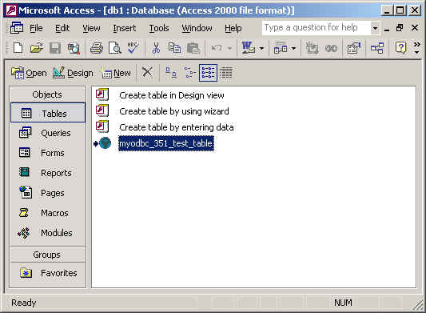
2. 点击打算导出的表名或查询名，然后在“文件”菜单中选择“导出”。
3. 在“导出对象类型对象名至”对话框中，在“另存为类型”框中，选择“ODBC数据库()”，如下图所示：
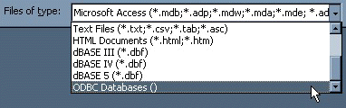
4. 在“导出”对话框中，输入文件名（或使用建议的文件名），然后选择OK。
5. 显示“选择数据源”对话框，其中列出了为计算机上已安装的各ODBC驱动定义的数据源。点击“文件数据源”或“机器数据源”选项卡，然后双击打算导出至的MyODBC或MyODBC 3.51数据源。关于为MyODBC定义新数据源的方法，请参见26.1.9.2节，“在Windows上配置MyODBC DSN”。
Microsoft Access通过该数据源连接至MySQL服务器，并导出新的表和／或数据。
除非已安装了MyODBC，否则不能将表或查询导出到MySQL数据库。
要想将表从MySQL导入或链接到Access，请采取下述步骤：
1. 打开数据库，或切换到“数据库”窗口以打开数据库。
2. 要想导入表，在“文件”菜单上，将鼠标指针指向“获取外部数据”，然后点击“导入”。要想链接表，在“文件”菜单上，将鼠标指针指向“获取外部数据”，然后点击“链接表”。
3. 在“导入”（或“链接”）对话框中，在“文件类型”框中选择“ODBC Databases ()”。在“选择数据源”对话框中，列出了定义的数据源。显示“选择数据源”对话框，其中列出了为安装在计算机上的任何ODBC驱动定义的数据源。点击“文件数据源”或“机器数据源”选项卡，然后双击打算导出至的MyODBC或MyODBC 3.51数据源。关于为MyODBC或MyODBC 3.51驱动定义新数据源的方法，请参见26.1.9.2节，“在Windows上配置MyODBC DSN”。
4. 如果所选的数据源要求登录，请输入登录ID和密码（可能还需要额外信息），然后点击OK。
5. Microsoft Access通过ODBC数据源连接到MySQL服务器，并显示可导入或链接的表清单。
6. 点击希望导入或链接的每个表，然后点击OK。如果你正在链接1个表，但它没有唯一识别各条记录的索引，Microsoft Access将显示链接表中的字段列表。点击能唯一标识各记录的字段或字段组合，然后点击OK。
是。当链接表的结构或位置发生变化时，可采取下述步骤查看或刷新链接。“链接表管理器”列出了当前链接的所有表的路径。
要想查看或刷新链接：
1. 打开包含表链接的数据库。
2. 在“工具”菜单上，指向“加载项”（在Access 2000或更新版本中为“数据库实用工具”），然后点击“链接表管理器”。
3. 选中打算刷新链接的表的复选框。
4. 点击OK，刷新链接。
Microsoft Access将确认成功的刷新操作，或者，如果未找到表，将显示“选择<table name>新位置”对话框，在该对话框中，可指定表的新位置。如果你所选择的数个表已被移至你所指定的新位置，链接表管理器将针对所有所选的表搜索该位置，并一次性地更新所有链接。
要想更改链接表集合的路径：
1. 打开包含表链接的数据库。
2. 在“工具”菜单上，指向“加载项”（在Access 2000或更新版本中为“数据库实用工具”），然后点击“链接表管理器”。
3. 选中“对新位置始终提示”复选框。
4. 选中打算更改链接的表的复选框，然后点击OK。
5. 在“选择<table name>新位置”对话框中，指定新位置，点击“打开”，然后点击OK。
如果在Access中插入或更新的记录显示为“#DELETED#”：
· 如果你正在使用Access 2000，应从下述地址获取并安装最新的（2.6版或更高）Microsoft MDAC（Microsoft数据访问组件），http://www.microsoft.com/data/。它更正了Access在将数据导出至MySQL时存在的一个缺陷，未指定表名和列名。另一种解决该缺陷的方法是，升级到MyODBC 2.50.33和MySQL 3.23.x, 它们共同提供了避免该问题的一种方式。
此外，你还应获取并应用Microsoft Jet 4.0 Service Pack 5 (SP5)，可在下述地址找到它：http://support.microsoft.com/default.aspx?scid=kb;EN-US;q239114。它修正了某些情况下在Access中列被标注为“#DELETED#”的问题。
注释： 如果你正使用MySQL 3.22，必须安装MDAC补丁，并使用MyODBC 2.50.32或2.50.34或更高版本以解决该问题。
· 对于所有版本的Access，应启用“MyODBC返回匹配行”选项。对于Access 2.0，还应额外启用“模拟ODBC 1.0”选项。
· 在希望能够更新的所有表中，均应有时间戳。为了获得最大的可移植性，在列声明中不要使用长度规范。也就是说，应使用TIMESTAMP，而不是TIMESTAMP(n), n < 14。
· 在表中应有1个主键。如不然，新的或更新的行可能会显示为“#DELETED#”。
· 仅应使用DOUBLE浮点字段。与单精度浮点进行比较时，Access将失败。其征兆是新的或更新的行可能会显示为“#DELETED#”，或无法找到或更新行。
· 如果你正使用MyODBC来链接到有BIGINT列的表，结果会显示为“#DELETED”。排除它的解决方案是：
o 有1个以TIMESTAMP作为数据类型的虚拟列。
o 在“ODBC DSN管理器”的连接对话框中选择“将BIGINT列更改为INT”选项。
o 删除与Access的表链接，并重新创建它。
旧记录仍将显示为“#DELETED#”，但新增／更新的记录会恰当显示。
对于某些程序，可能会出现该错误： 另一用户更改了你所修改的记录。在大多数情况下，可通过下述措施解决该问题：
· 如果主键不存在，为表添加1个主键。
· 如果时间戳不存在，添加1个时间戳列。
· 仅应使用DOUBLE浮点字段。与单精度浮点值比较时，某些程序会出错。
如果这些措施未能解决问题，首先应从ODBC管理器生成1个日志文件（请求来自ODBC ADMIN的日志时获得的日志文件），以及1个MyODBC日志，使用它们找出出错的原因。具体介绍，请参见26.1.9.7节，“获取ODBC跟踪文件”。
26.1.11.10. 如何优化Access与MyODBC一起工作的性能？
26.1.11.13. INFO：用于Access和MySQL间导入/导出的工具
- 26.1.12.1. 为什么SELECT COUNT(*) FROM tbl_name返回错误？
-
26.1.12.2. 无论何时，当我使用AppendChunk()或GetChunk()
ADO方法时，遇到错误“多步操作导致错误，请检查每个状态值”
- 26.1.12.3. 在ADO中如何发现受特定SQL语句影响的总行数？
- 26.1.12.4. 在Visual Basic中如何处理Blob数据？
- 26.1.12.5. 如何将Visual Basic的数据类型映射到MySQL类型？
- 26.1.12.6. 示例：VB与ADO、DAO和RDO
- 26.1.12.7. ASP和MySQL以及MyODBC
- 26.1.12.8. INFO：关于ActiveX数据对象（ADO）的常见问题
将光标位置指定为adUseServer时，ADO的GetChunk()和AppendChunk()方法不能按预期的方式工作。从另一方面上讲，可使用adUseClient克服该问题。
在http://www.dwam.net/iishelp/ado/docs/adomth02_4.htm上给出了一个简单示例。
26.1.12.4. 在Visual Basic中如何处理Blob数据？
下面给出了Mike Hillyer（m.hillyer@telusplanet.net）写的一篇好文章，其中解释了如何在ADO中通过MyODBC插入数据和／或从Blob列获取数据的方法。MySQL BLOB列和Visual Basic 6。
26.1.12.6. 示例：VB与ADO、DAO和RDO
下面给出了ADO、DAO和RDO与VB一起使用的用法示例：
· ADO示例： 26.1.19节，“MyODBC与VB：ADO、DAO和RDO”
· DAO示例： 26.1.19节，“MyODBC与VB：ADO、DAO和RDO”
· RDO示例： 26.1.19节，“MyODBC与VB：ADO、DAO和RDO”
如果你有其他好的例子，或关于ADO/DAO/RDO的基本知识，请将详情发送至myodbc@lists.mysql.com。
在http://support.microsoft.com/default.aspx?scid=/Support/ActiveServer/faq/data/adofaq.asp中，给出了关于ASP的常见问题清单。
26.1.12.8. INFO：关于ActiveX数据对象（ADO）的常见问题
26.1.13. MyODBC和第三方ODBC工具
例如，用含有两列文本的表创建1个数据库：
· 使用mysql客户端命令行工具插入行。
· 使用ODBC管理器创建1个DSN文件，例如，针对刚创建数据库的“my”。
· 打开Word应用程序。
· 创建1个新的空白文档。
· 在数据库工具栏上，按“插入数据库”按钮。
· 按“获取数据”按钮。
· 在“获取数据”屏幕右侧，按“Ms Query”按钮。
· 在“Ms Query”中使用“my DSN”文件创建1个新数据源。
· 选择新查询。
· 选择打算使用的列。
· 如果愿意，创建1个过滤器。
· 如果愿意，创建1个分类。
· 选择“将数据返回到Microsoft Word”。
· 点击“完成”。
· 点击“插入数据”并选择记录。
· 点击OK，在你的Word文档中将看到插入的行。
26.1.13.2. 使用MyODBC将表从MS DTS导出到MySQL时出现语法错误
26.1.14. MyODBC通用功能
一个常见问题是，如何获取从INSERT语句自动生成的ID的值。使用ODBC，你可以作与以下示例类似的任何事（假定“auto”为AUTO_INCREMENT字段）：
INSERT INTO tbl (auto,text) VALUES(NULL,'text');
SELECT LAST_INSERT_ID();
或者，如果你仅打算将ID插入到另一表中，你可以：
INSERT INTO tbl (auto,text) VALUES(NULL,'text');
INSERT INTO tbl2 (id,text) VALUES(LAST_INSERT_ID(),'text');
请参见25.2.13.3节，“如何获得上次插入行的唯一ID”。
为了使某些ODBC应用程序（至少是Delphi和Access）获得更好的性能，可使用下述查询来找到新插入的行：
SELECT * FROM tbl WHERE auto IS NULL;
26.1.14.6. 我能使用MyODBC从.NET环境访问MySQL吗？
是。你可以使用odbc.net，通过MyODBC连接到MySQL。这里给出了一些从VC.NET和VB.NET连接到MySQL的基本示例。
· 请参见26.1.20.1节，“ODBC.NET: CSHARP(C#)”
· 请参见26.1.20.2节，“ODBC.NET: VB”
这里给出了Venu（MyODBC开发人员）撰写的另一篇好文章http://www.mysql.com/newsletter/2002-07/a0000000035.html，其中，给出了所有的MySQL .NET接口以及一些有用的例子。
注意： 在与MyODBC一起使用ODBC.NET的过程中，在获取空字符串的同时（长度为0），将给出SQL_NO_DATA异常。从站点http://support.microsoft.com/default.aspx?scid=kb;EN-US;q319243，可获取针对它的补丁。
MyODBC比其他ODBC驱动程序快很多。缓慢可能是因未使用下述选项造成的：
· 打开“ODBC跟踪”选项。遵循这里给出的指示说明，交叉检查是否未启用该选项。
如上图所示，“ODBC数据源管理器”“跟踪”选项卡的“何时跟踪”选项应始终指向“现在开始跟踪”，而不是“现在停止跟踪”。
· 使用了驱动程序的调试版本。如果你正在使用驱动DLL的调试版本，也会使查询处理变慢。你可以执行交叉检查，通过驱动DLL属性（在系统目录下，右击驱动DLL并点击“属性”）的“注释”区，检查DLL是否是调试版或发布版，如下图所示：
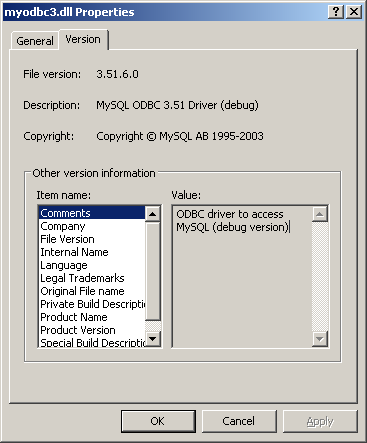
· 启用了“驱动跟踪和查询日志”。即使你打算使用驱动程序的调试版（在生产环境下总应使用发布版），也应确保禁止了“驱动跟踪和查询日志”选项（OPTION=4,524288），如下图所示：
· 配置MyODBC DSN。
· 连接到MySQL服务器。
· 初始化操作。
· 执行SQL语句。
· 检索结果。
· 执行事务。
· 断开与服务器的连接。
大多数应用程序均使用了这些步骤的某些变体。在下图中，给出了基本的应用步骤：
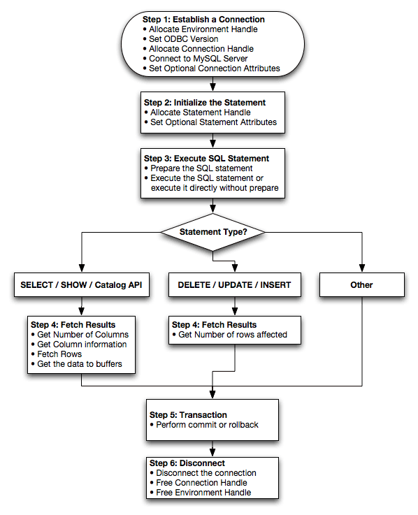在本节中，概要介绍了按功能分类的ODBC子程序。
关于全部ODBC API参考，请参见ODBC程序员参考，http://msdn.microsoft.com/library/en-us/odbc/htm/odbcabout_this_manual.asp。
应用程序可以调用SQLGetInfo函数来获得关于MyODBC的一致性信息。为了获得驱动程序对特定函数的支持信息，应用程序可调用SQLGetFunctions。
注释： 为了向后兼容，MyODBC 3.51驱动程序支持所有已不使用的函数。
在下面的表各中，按任务分组列出了MyODBC API调用：
连接到数据源：
|
函数名 |
MyODBC |
MyODBC |
一致性 |
目的 |
|
|
2.50 |
3.51 |
|
|
|
SQLAllocHandle |
No |
Yes |
ISO 92 |
获取环境、连接、语句或描述符句柄。 |
|
SQLConnect |
Yes |
Yes |
ISO 92 |
按数据源名、用户ID和密码连接到特定驱动程序。 |
|
SQLDriverConnect |
Yes |
Yes |
ODBC |
通过连接字符串，或驱动管理器和驱动显示对话框发出的请求，连接到特定驱动程序。 |
|
SQLAllocEnv |
Yes |
Yes |
Deprecated |
获得驱动程序分配的环境句柄。 |
|
SQLAllocConnect |
Yes |
Yes |
Deprecated |
获取连接句柄。 |
获取关于驱动程序和数据源的信息：
|
函数名 |
MyODBC |
MyODBC |
一致性 |
目的 |
|
|
2.50 |
3.51 |
|
|
|
SQLDataSources |
No |
No |
ISO 92 |
返回可用数据源的列表，由驱动管理器处理。 |
|
SQLDrivers |
No |
No |
ODBC |
返回已安装驱动程序和器属性的列表，由驱动管理器处理。 |
|
SQLGetInfo |
Yes |
Yes |
ISO 92 |
返回关于特定驱动程序和数据源的信息。 |
|
SQLGetFunctions |
Yes |
Yes |
ISO 92 |
返回支持的驱动函数。 |
|
SQLGetTypeInfo |
Yes |
Yes |
ISO 92 |
返回关于所支持数据类型的信息。 |
设置并检索驱动属性：
|
函数名 |
MyODBC |
MyODBC |
一致性 |
目的 |
|
|
2.50 |
3.51 |
|
|
|
SQLSetConnectAttr |
No |
Yes |
ISO 92 |
设置连接属性。 |
|
SQLGetConnectAttr |
No |
Yes |
ISO 92 |
返回连接属性的值。 |
|
SQLSetConnectOption |
Yes |
Yes |
Deprecated |
设置连接选项。 |
|
SQLGetConnectOption |
Yes |
Yes |
Deprecated |
返回连接选项的值。 |
|
SQLSetEnvAttr |
No |
Yes |
ISO 92 |
设置环境属性。 |
|
SQLGetEnvAttr |
No |
Yes |
ISO 92 |
返回环境属性的值。 |
|
SQLSetStmtAttr |
No |
Yes |
ISO 92 |
设置语句属性。 |
|
SQLGetStmtAttr |
No |
Yes |
ISO 92 |
返回语句属性的值。 |
|
SQLSetStmtOption |
Yes |
Yes |
Deprecated |
设置语句选项。 |
|
SQLGetStmtOption |
Yes |
Yes |
Deprecated |
返回语句选项的值。 |
准备SQL请求：
|
函数名 |
MyODBC |
MyODBC |
一致性 |
目的 |
|
|
2.50 |
3.51 |
|
|
|
SQLAllocStmt |
Yes |
Yes |
Deprecated |
分配语句句柄。 |
|
SQLPrepare |
Yes |
Yes |
ISO 92 |
准备随后执行的SQL语句。 |
|
SQLBindParameter |
Yes |
Yes |
ODBC |
为SQL语句中的参数分配存储器。 |
|
SQLGetCursorName |
Yes |
Yes |
ISO 92 |
返回与语句句柄相关的光标名。 |
|
SQLSetCursorName |
Yes |
Yes |
ISO 92 |
指定光标名。 |
|
SQLSetScrollOptions |
Yes |
Yes |
ODBC |
设置控制光标行为的选项。 |
提交请求：
|
函数名 |
MyODBC |
MyODBC |
一致性 |
目的 |
|
|
2.50 |
3.51 |
|
|
|
SQLExecute |
Yes |
Yes |
ISO 92 |
执行准备好的语句。 |
|
SQLExecDirect |
Yes |
Yes |
ISO 92 |
执行语句。 |
|
SQLNativeSql |
Yes |
Yes |
ODBC |
返回由驱动程序翻译的SQL语句的文本。 |
|
SQLDescribeParam |
Yes |
Yes |
ODBC |
返回语句中特定参数的描述。 |
|
SQLNumParams |
Yes |
Yes |
ISO 92 |
返回语句中的参数数目。 |
|
SQLParamData |
Yes |
Yes |
ISO 92 |
与SQLPutData一起使用，以便在执行时提供参数。（对于长数据值很有用）。 |
|
SQLPutData |
Yes |
Yes |
ISO 92 |
发送某一参数数据值的部分或全部。（对于长数据值很有用）。 |
检索结果以及关于结果的信息：
|
函数名 |
MyODBC |
MyODBC |
一致性 |
目的 |
|
|
2.50 |
3.51 |
|
|
|
SQLRowCount |
Yes |
Yes |
ISO 92 |
返回插入、更新或删除请求影响的行数。 |
|
SQLNumResultCols |
Yes |
Yes |
ISO 92 |
返回结果集中的列数。 |
|
SQLDescribeCol |
Yes |
Yes |
ISO 92 |
描述结果集中的列。 |
|
SQLColAttribute |
No |
Yes |
ISO 92 |
描述结果集中的某1列的属性。 |
|
SQLColAttributes |
Yes |
Yes |
Deprecated |
描述结果集中的某1列的多个属性。 |
|
SQLFetch |
Yes |
Yes |
ISO 92 |
返回多个结果行。 |
|
SQLFetchScroll |
No |
Yes |
ISO 92 |
返回可滚动结果行。 |
|
SQLExtendedFetch |
Yes |
Yes |
Deprecated |
返回可滚动结果行。 |
|
SQLSetPos |
Yes |
Yes |
ODBC |
将光标定为在获取的数据块中，允许应用程序更新行集合中的数据，或更新或删除结果集中的数据。 |
|
SQLBulkOperations |
No |
Yes |
ODBC |
执行批量插入和批量书签操作，包括更新、删除和按书签获取。 |
检索错误和诊断信息：
|
函数名 |
MyODBC |
MyODBC |
一致性 |
目的 |
|
|
2.50 |
3.51 |
|
|
|
SQLError |
Yes |
Yes |
Deprecated |
返回额外的错误或状态信息。 |
|
SQLGetDiagField |
Yes |
Yes |
ISO 92 |
返回额外的诊断信息（诊断性数据结构的单个字段）。 |
|
SQLGetDiagRec |
Yes |
Yes |
ISO 92 |
返回额外的诊断信息（诊断性数据结构的多个字段）。 |
获取关于数据源的系统表（目录函数）条目的信息：
|
函数名 |
MyODBC |
MyODBC |
一致性 |
目的 |
|
|
2.50 |
3.51 |
|
|
|
SQLColumnPrivileges |
Yes |
Yes |
ODBC |
返回关于一个或多个表的列和相关属性的列表。 |
|
SQLColumns |
Yes |
Yes |
X/Open |
返回指定表中列名的列表。 |
|
SQLForeignKeys |
Yes |
Yes |
ODBC |
在指定表中如果存在外键，返回构成外键的列名列表。 |
|
SQLPrimaryKeys |
Yes |
Yes |
ODBC |
返回构成某1表的主键的列名列表。 |
|
SQLSpecialColumns |
Yes |
Yes |
X/Open |
返回关于最佳列集合的信息，该列集合唯一地指明了指定表中的行，或当某1事务更新了行中的任何值时自动更新的列。 |
|
SQLStatistics |
Yes |
Yes |
ISO 92 |
返回关于单个表的统计信息，以及与表相关的索引列表。 |
|
SQLTablePrivileges |
Yes |
Yes |
ODBC |
返回表列表，以及与各表相关的权限。 |
|
SQLTables |
Yes |
Yes |
X/Open |
返回存储在特定数据源内的表名列表。 |
执行事务：
|
函数名 |
MyODBC |
MyODBC |
一致性 |
目的 |
|
|
2.50 |
3.51 |
|
|
|
SQLTransact |
Yes |
Yes |
Deprecated |
提交或回滚事务。 |
|
SQLEndTran |
No |
Yes |
ISO 92 |
提交或回滚事务。 |
中止语句：
|
函数名 |
MyODBC |
MyODBC |
一致性 |
目的 |
|
|
2.50 |
3.51 |
|
|
|
SQLFreeStmt |
Yes |
Yes |
ISO 92 |
结束语句处理，舍弃未决结果，并释放与语句句柄相关的所有资源（可选）。 |
|
SQLCloseCursor |
Yes |
Yes |
ISO 92 |
关闭在语句句柄上打开的指针。 |
|
SQLCancel |
Yes |
Yes |
ISO 92 |
取消SQL语句。 |
中止连接：
|
函数名 |
MyODBC |
MyODBC |
一致性 |
目的 |
|
|
2.50 |
3.51 |
|
|
|
SQLDisconnect |
Yes |
Yes |
ISO 92 |
关闭连接。 |
|
SQLFreeHandle |
No |
Yes |
ISO 92 |
释放环境、连接、语句或描述符句柄。 |
|
SQLFreeConnect |
Yes |
Yes |
Deprecated |
释放连接句柄。 |
|
SQLFreeEnv |
Yes |
Yes |
Deprecated |
释放连接句柄。 |
在下表中，介绍了驱动程序将服务器数据类型映射为默认SQL和C数据类型的方法：
|
值 |
SQL类型 |
C类型 |
|
bit |
SQL_BIT |
SQL_C_BIT |
|
tinyint |
SQL_TINYINT |
SQL_C_STINYINT |
|
tinyint unsigned |
SQL_TINYINT |
SQL_C_UTINYINT |
|
bigint |
SQL_BIGINT |
SQL_C_SBIGINT |
|
bigint unsigned |
SQL_BIGINT |
SQL_C_UBIGINT |
|
long varbinary |
SQL_LONGVARBINARY |
SQL_C_BINARY |
|
blob |
SQL_LONGVARBINARY |
SQL_C_BINARY |
|
longblob |
SQL_LONGVARBINARY |
SQL_C_BINARY |
|
tinyblob |
SQL_LONGVARBINARY |
SQL_C_BINARY |
|
mediumblob |
SQL_LONGVARBINARY |
SQL_C_BINARY |
|
long varchar |
SQL_LONGVARCHAR |
SQL_C_CHAR |
|
text |
SQL_LONGVARCHAR |
SQL_C_CHAR |
|
mediumtext |
SQL_LONGVARCHAR |
SQL_C_CHAR |
|
char |
SQL_CHAR |
SQL_C_CHAR |
|
numeric |
SQL_NUMERIC |
SQL_C_CHAR |
|
decimal |
SQL_DECIMAL |
SQL_C_CHAR |
|
integer |
SQL_INTEGER |
SQL_C_SLONG |
|
integer unsigned |
SQL_INTEGER |
SQL_C_ULONG |
|
int |
SQL_INTEGER |
SQL_C_SLONG |
|
int unsigned |
SQL_INTEGER |
SQL_C_ULONG |
|
mediumint |
SQL_INTEGER |
SQL_C_SLONG |
|
mediumint unsigned |
SQL_INTEGER |
SQL_C_ULONG |
|
smallint |
SQL_SMALLINT |
SQL_C_SSHORT |
|
smallint unsigned |
SQL_SMALLINT |
SQL_C_USHORT |
|
real |
SQL_FLOAT |
SQL_C_DOUBLE |
|
double |
SQL_FLOAT |
SQL_C_DOUBLE |
|
float |
SQL_REAL |
SQL_C_FLOAT |
|
double precision |
SQL_DOUBLE |
SQL_C_DOUBLE |
|
date |
SQL_DATE |
SQL_C_DATE |
|
time |
SQL_TIME |
SQL_C_TIME |
|
year |
SQL_SMALLINT |
SQL_C_SHORT |
|
datetime |
SQL_TIMESTAMP |
SQL_C_TIMESTAMP |
|
timestamp |
SQL_TIMESTAMP |
SQL_C_TIMESTAMP |
|
text |
SQL_VARCHAR |
SQL_C_CHAR |
|
varchar |
SQL_VARCHAR |
SQL_C_CHAR |
|
enum |
SQL_VARCHAR |
SQL_C_CHAR |
|
set |
SQL_VARCHAR |
SQL_C_CHAR |
|
bit |
SQL_CHAR |
SQL_C_CHAR |
|
bool |
SQL_CHAR |
SQL_C_CHAR |
在下表中，列出了驱动程序返回的除服务器错误之外的错误代码列表：
|
本机代码 |
SQLSTATE 2 |
SQLSTATE 3 |
错误消息 |
|
500 |
01000 |
01000 |
一般警告 |
|
501 |
01004 |
01004 |
字符串数据，右截 |
|
502 |
01S02 |
01S02 |
选项值被更改 |
|
503 |
01S03 |
01S03 |
未更新／删除行 |
|
504 |
01S04 |
01S04 |
更新／删除了1个以上的行 |
|
505 |
01S06 |
01S06 |
在结果集合返回第1个行集合之前视图获取数据。 |
|
506 |
07001 |
07002 |
对于所有参数，未使用SQLBindParameter。 |
|
507 |
07005 |
07005 |
精制语句不符合光标规范 |
|
508 |
07009 |
07009 |
无效的描述符索引。 |
|
509 |
08002 |
08002 |
连接名正在使用。 |
|
510 |
08003 |
08003 |
连接不存在。 |
|
511 |
24000 |
24000 |
无效的光标状态。 |
|
512 |
25000 |
25000 |
无效的事务状态。 |
|
513 |
25S01 |
25S01 |
事务状态未知。 |
|
514 |
34000 |
34000 |
无效光标名。 |
|
515 |
S1000 |
HY000 |
一般的驱动程序定义错误。 |
|
516 |
S1001 |
HY001 |
内存分配错误。 |
|
517 |
S1002 |
HY002 |
无效的列编号。 |
|
518 |
S1003 |
HY003 |
无效的应用缓冲类型。 |
|
519 |
S1004 |
HY004 |
无效的SQL数据类型。 |
|
520 |
S1009 |
HY009 |
空指针的无效使用。 |
|
521 |
S1010 |
HY010 |
函数顺序错误。 |
|
522 |
S1011 |
HY011 |
现在无法设置属性。 |
|
523 |
S1012 |
HY012 |
无效的事务操作码。 |
|
524 |
S1013 |
HY013 |
内存管理错误。 |
|
525 |
S1015 |
HY015 |
无可用的光标名。 |
|
526 |
S1024 |
HY024 |
无效的属性值。 |
|
527 |
S1090 |
HY090 |
无效字符串或缓冲长度。 |
|
528 |
S1091 |
HY091 |
无效的描述符字段标识符。 |
|
529 |
S1092 |
HY092 |
无效的属性／选项标识符。 |
|
530 |
S1093 |
HY093 |
无效的参数编号。 |
|
531 |
S1095 |
HY095 |
函数类型超出范围。 |
|
532 |
S1106 |
HY106 |
获取类型超出范围。 |
|
533 |
S1117 |
HY117 |
行值超出范围。 |
|
534 |
S1109 |
HY109 |
无效的光标位置。 |
|
535 |
S1C00 |
HYC00 |
可选特性未实施。 |
|
0 |
21S01 |
21S01 |
列计数与值计数不匹配。 |
|
0 |
23000 |
23000 |
完整性约束违反。 |
|
0 |
42000 |
42000 |
语法错误或访问冲突。 |
|
0 |
42S02 |
42S02 |
未发现基本表或视图。 |
|
0 |
42S12 |
42S12 |
未发现索引。 |
|
0 |
42S21 |
42S21 |
列已存在。 |
|
0 |
42S22 |
42S22 |
未发现列。 |
|
0 |
08S01 |
08S01 |
通信链接失败。 |
在下面的ADO（ActiveX数据对象）示例中，创建了表my_ado，并演示了rs.addNew、rs.delete和rs.update的用法。
Private Sub myodbc_ado_Click()
Dim conn As ADODB.Connection
Dim rs As ADODB.Recordset
Dim fld As ADODB.Field
Dim sql As String
'connect to MySQL server using MySQL ODBC 3.51 Driver（使用MySQL ODBC 3.51驱动程序连接到MySQL服务器）
Set conn = New ADODB.Connection
conn.ConnectionString = "DRIVER={MySQL ODBC 3.51 Driver};"_
& "SERVER=localhost;"_
& " DATABASE=test;"_
& "UID=venu;PWD=venu; OPTION=3"
conn.Open
'create table（创建表）
conn.Execute "DROP TABLE IF EXISTS my_ado"
conn.Execute "CREATE TABLE my_ado(id int not null primary key, name varchar(20)," _
& "txt text, dt date, tm time, ts timestamp)"
'direct insert（直接插入）
conn.Execute "INSERT INTO my_ado(id,name,txt) values(1,100,'venu')"
conn.Execute "INSERT INTO my_ado(id,name,txt) values(2,200,'MySQL')"
conn.Execute "INSERT INTO my_ado(id,name,txt) values(3,300,'Delete')"
Set rs = New ADODB.Recordset
rs.CursorLocation = adUseServer
'fetch the initial table ..（获取初始表…）
rs.Open "SELECT * FROM my_ado", conn
Debug.Print rs.RecordCount
rs.MoveFirst
Debug.Print String(50, "-") & "Initial my_ado Result Set " & String(50, "-")
For Each fld In rs.Fields
Debug.Print fld.Name,
Next
Debug.Print
Do Until rs.EOF
For Each fld In rs.Fields
Debug.Print fld.Value,
Next
rs.MoveNext
Debug.Print
Loop
rs.Close
'rs insert（rs插入）
rs.Open "select * from my_ado", conn, adOpenDynamic, adLockOptimistic
rs.AddNew
rs!Name = "Monty"
rs!txt = "Insert row"
rs.Update
rs.Close
'rs update（rs更新）
rs.Open "SELECT * FROM my_ado"
rs!Name = "update"
rs!txt = "updated-row"
rs.Update
rs.Close
'rs update second time..（rs更新第2次…）
rs.Open "SELECT * FROM my_ado"
rs!Name = "update"
rs!txt = "updated-second-time"
rs.Update
rs.Close
'rs delete（rs删除）
rs.Open "SELECT * FROM my_ado"
rs.MoveNext
rs.MoveNext
rs.Delete
rs.Close
'fetch the updated table ..（获取更新的表…）
rs.Open "SELECT * FROM my_ado", conn
Debug.Print rs.RecordCount
rs.MoveFirst
Debug.Print String(50, "-") & "Updated my_ado Result Set " & String(50, "-")
For Each fld In rs.Fields
Debug.Print fld.Name,
Next
Debug.Print
Do Until rs.EOF
For Each fld In rs.Fields
Debug.Print fld.Value,
Next
rs.MoveNext
Debug.Print
Loop
rs.Close
conn.Close
End Sub
Private Sub myodbc_dao_Click()
Dim ws As Workspace
Dim conn As Connection
Dim queryDef As queryDef
Dim str As String
'connect to MySQL server using MySQL ODBC 3.51 Driver（使用MySQL ODBC 3.51驱动程序连接到MySQL）
Set ws = DBEngine.CreateWorkspace("", "venu", "venu", dbUseODBC)
str = "odbc;DRIVER={MySQL ODBC 3.51 Driver};"_
& "SERVER=localhost;"_
& " DATABASE=test;"_
& "UID=venu;PWD=venu; OPTION=3"
Set conn = ws.OpenConnection("test", dbDriverNoPrompt, False, str)
'Create table my_dao（创建表my_dao）
Set queryDef = conn.CreateQueryDef("", "drop table if exists my_dao")
queryDef.Execute
Set queryDef = conn.CreateQueryDef("", "create table my_dao(Id INT AUTO_INCREMENT PRIMARY KEY, " _
& "Ts TIMESTAMP(14) NOT NULL, Name varchar(20), Id2 INT)")
queryDef.Execute
'Insert new records using rs.addNew（使用rs.addNew插入新记录）
Set rs = conn.OpenRecordset("my_dao")
Dim i As Integer
For i = 10 To 15
rs.AddNew
rs!Name = "insert record" & i
rs!Id2 = i
rs.Update
Next i
rs.Close
'rs update..（rs更新）
Set rs = conn.OpenRecordset("my_dao")
rs.Edit
rs!Name = "updated-string"
rs.Update
rs.Close
'fetch the table back...（向后获取表…）
Set rs = conn.OpenRecordset("my_dao", dbOpenDynamic)
str = "Results:"
rs.MoveFirst
While Not rs.EOF
str = " " & rs!Id & " , " & rs!Name & ", " & rs!Ts & ", " & rs!Id2
Debug.Print "DATA:" & str
rs.MoveNext
Wend
'rs Scrolling（rs滚动）
rs.MoveFirst
str = " FIRST ROW: " & rs!Id & " , " & rs!Name & ", " & rs!Ts & ", " & rs!Id2
Debug.Print str
rs.MoveLast
str = " LAST ROW: " & rs!Id & " , " & rs!Name & ", " & rs!Ts & ", " & rs!Id2
Debug.Print str
rs.MovePrevious
str = " LAST-1 ROW: " & rs!Id & " , " & rs!Name & ", " & rs!Ts & ", " & rs!Id2
Debug.Print str
'free all resources（释放所有资源）
rs.Close
queryDef.Close
conn.Close
ws.Close
End Sub
26.1.19.3. RDO: rs.addNew和rs.update
Dim rs As rdoResultset
Dim cn As New rdoConnection
Dim cl As rdoColumn
Dim SQL As String
'cn.Connect = "DSN=test;"
cn.Connect = "DRIVER={MySQL ODBC 3.51 Driver};"_
& "SERVER=localhost;"_
& " DATABASE=test;"_
& "UID=venu;PWD=venu; OPTION=3"
cn.CursorDriver = rdUseOdbc
cn.EstablishConnection rdDriverPrompt
'drop table my_rdo（舍弃表my_rdo）
SQL = "drop table if exists my_rdo"
cn.Execute SQL, rdExecDirect
'create table my_rdo（创建表my_rdo）
SQL = "create table my_rdo(id int, name varchar(20))"
cn.Execute SQL, rdExecDirect
'insert – direct（插入，直接）
SQL = "insert into my_rdo values (100,'venu')"
cn.Execute SQL, rdExecDirect
SQL = "insert into my_rdo values (200,'MySQL')"
cn.Execute SQL, rdExecDirect
'rs insert（rs插入）
SQL = "select * from my_rdo"
Set rs = cn.OpenResultset(SQL, rdOpenStatic, rdConcurRowVer, rdExecDirect)
rs.AddNew
rs!id = 300
rs!Name = "Insert1"
rs.Update
rs.Close
'rs insert（rs插入）
SQL = "select * from my_rdo"
Set rs = cn.OpenResultset(SQL, rdOpenStatic, rdConcurRowVer, rdExecDirect)
rs.AddNew
rs!id = 400
rs!Name = "Insert 2"
rs.Update
rs.Close
'rs update（rs更新）
SQL = "select * from my_rdo"
Set rs = cn.OpenResultset(SQL, rdOpenStatic, rdConcurRowVer, rdExecDirect)
rs.Edit
rs!id = 999
rs!Name = "updated"
rs.Update
rs.Close
'fetch back...
SQL = "select * from my_rdo"
Set rs = cn.OpenResultset(SQL, rdOpenStatic, rdConcurRowVer, rdExecDirect)
Do Until rs.EOF
For Each cl In rs.rdoColumns
Debug.Print cl.Value,
Next
rs.MoveNext
Debug.Print
Loop
Debug.Print "Row count="; rs.RowCount
'close（关闭）
rs.Close
cn.Close
End Sub
26.1.20. MyODBC与Microsoft.NET
在下面的简单示例中创建了表my_odbc_net，并介绍了它在C#中的使用。
/** * @sample : mycon.cs * @purpose : Demo sample for ODBC.NET using MyODBC * @author : Venu, <venu@mysql.com> * * (C) Copyright MySQL AB, 1995-2004 * **/ /* build command * * csc /t:exe * /out:mycon.exe mycon.cs * /r:Microsoft.Data.Odbc.dll */ using Console = System.Console; using Microsoft.Data.Odbc; namespace myodbc3 { class mycon { static void Main(string[] args) { try { //Connection string for MyODBC 2.50 /*string MyConString = "DRIVER={MySQL};" + "SERVER=localhost;" + "DATABASE=test;" + "UID=venu;" + "PASSWORD=venu;" + "OPTION=3"; */ //Connection string for MyODBC 3.51 string MyConString = "DRIVER={MySQL ODBC 3.51 Driver};" + "SERVER=localhost;" + "DATABASE=test;" + "UID=venu;" + "PASSWORD=venu;" + "OPTION=3"; //Connect to MySQL using MyODBC OdbcConnection MyConnection = new OdbcConnection(MyConString); MyConnection.Open(); Console.WriteLine("\n !!! success, connected successfully !!!\n"); //Display connection information Console.WriteLine("Connection Information:"); Console.WriteLine("\tConnection String:" + MyConnection.ConnectionString); Console.WriteLine("\tConnection Timeout:" + MyConnection.ConnectionTimeout); Console.WriteLine("\tDatabase:" + MyConnection.Database); Console.WriteLine("\tDataSource:" + MyConnection.DataSource); Console.WriteLine("\tDriver:" + MyConnection.Driver); Console.WriteLine("\tServerVersion:" + MyConnection.ServerVersion); //Create a sample table OdbcCommand MyCommand = new OdbcCommand("DROP TABLE IF EXISTS my_odbc_net",MyConnection); MyCommand.ExecuteNonQuery(); MyCommand.CommandText = "CREATE TABLE my_odbc_net(id int, name varchar(20), idb bigint)"; MyCommand.ExecuteNonQuery(); //Insert MyCommand.CommandText = "INSERT INTO my_odbc_net VALUES(10,'venu', 300)"; Console.WriteLine("INSERT, Total rows affected:" + MyCommand.ExecuteNonQuery());; //Insert MyCommand.CommandText = "INSERT INTO my_odbc_net VALUES(20,'mysql',400)"; Console.WriteLine("INSERT, Total rows affected:" + MyCommand.ExecuteNonQuery()); //Insert MyCommand.CommandText = "INSERT INTO my_odbc_net VALUES(20,'mysql',500)"; Console.WriteLine("INSERT, Total rows affected:" + MyCommand.ExecuteNonQuery()); //Update MyCommand.CommandText = "UPDATE my_odbc_net SET id=999 WHERE id=20"; Console.WriteLine("Update, Total rows affected:" + MyCommand.ExecuteNonQuery()); //COUNT(*) MyCommand.CommandText = "SELECT COUNT(*) as TRows FROM my_odbc_net"; Console.WriteLine("Total Rows:" + MyCommand.ExecuteScalar()); //Fetch MyCommand.CommandText = "SELECT * FROM my_odbc_net"; OdbcDataReader MyDataReader; MyDataReader = MyCommand.ExecuteReader(); while (MyDataReader.Read()) { if(string.Compare(MyConnection.Driver,"myodbc3.dll") == 0) { Console.WriteLine("Data:" + MyDataReader.GetInt32(0) + " " + MyDataReader.GetString(1) + " " + MyDataReader.GetInt64(2)); //Supported only by MyODBC 3.51 } else { Console.WriteLine("Data:" + MyDataReader.GetInt32(0) + " " + MyDataReader.GetString(1) + " " + MyDataReader.GetInt32(2)); //BIGINTs not supported by MyODBC } } //Close all resources MyDataReader.Close(); MyConnection.Close(); } catch (OdbcException MyOdbcException)//Catch any ODBC exception .. { for (int i=0; i < MyOdbcException.Errors.Count; i++) { Console.Write("ERROR #" + i + "\n" + "Message: " + MyOdbcException.Errors[i].Message + "\n" + "Native: " + MyOdbcException.Errors[i].NativeError.ToString() + "\n" + "Source: " + MyOdbcException.Errors[i].Source + "\n" + "SQL: " + MyOdbcException.Errors[i].SQLState + "\n"); } } } } }
在下面的简单示例中创建了表my_vb_net，并介绍了它在VB中的用法。
' @sample : myvb.vb ' @purpose : Demo sample for ODBC.NET using MyODBC ' @author : Venu, <venu@mysql.com> ' ' (C) Copyright MySQL AB, 1995-2004 ' ' ' ' build command ' ' vbc /target:exe ' /out:myvb.exe ' /r:Microsoft.Data.Odbc.dll ' /r:System.dll ' /r:System.Data.dll ' Imports Microsoft.Data.Odbc Imports System Module myvb Sub Main() Try 'MyODBC 3.51 connection string Dim MyConString As String = "DRIVER={MySQL ODBC 3.51 Driver};" & _ "SERVER=localhost;" & _ "DATABASE=test;" & _ "UID=venu;" & _ "PASSWORD=venu;" & _ "OPTION=3;" 'Connection Dim MyConnection As New OdbcConnection(MyConString) MyConnection.Open() Console.WriteLine ("Connection State::" & MyConnection.State.ToString) 'Drop Console.WriteLine ("Dropping table") Dim MyCommand As New OdbcCommand() MyCommand.Connection = MyConnection MyCommand.CommandText = "DROP TABLE IF EXISTS my_vb_net" MyCommand.ExecuteNonQuery() 'Create Console.WriteLine ("Creating....") MyCommand.CommandText = "CREATE TABLE my_vb_net(id int, name varchar(30))" MyCommand.ExecuteNonQuery() 'Insert MyCommand.CommandText = "INSERT INTO my_vb_net VALUES(10,'venu')" Console.WriteLine("INSERT, Total rows affected:" & MyCommand.ExecuteNonQuery()) 'Insert MyCommand.CommandText = "INSERT INTO my_vb_net VALUES(20,'mysql')" Console.WriteLine("INSERT, Total rows affected:" & MyCommand.ExecuteNonQuery()) 'Insert MyCommand.CommandText = "INSERT INTO my_vb_net VALUES(20,'mysql')" Console.WriteLine("INSERT, Total rows affected:" & MyCommand.ExecuteNonQuery()) 'Insert MyCommand.CommandText = "INSERT INTO my_vb_net(id) VALUES(30)" Console.WriteLine("INSERT, Total rows affected:" & MyCommand.ExecuteNonQuery()) 'Update MyCommand.CommandText = "UPDATE my_vb_net SET id=999 WHERE id=20" Console.WriteLine("Update, Total rows affected:" & MyCommand.ExecuteNonQuery()) 'COUNT(*) MyCommand.CommandText = "SELECT COUNT(*) as TRows FROM my_vb_net" Console.WriteLine("Total Rows:" & MyCommand.ExecuteScalar()) 'Select Console.WriteLine ("Select * FROM my_vb_net") MyCommand.CommandText = "SELECT * FROM my_vb_net" Dim MyDataReader As OdbcDataReader MyDataReader = MyCommand.ExecuteReader While MyDataReader.Read If MyDataReader("name") Is DBNull.Value Then Console.WriteLine ("id = " & CStr(MyDataReader("id")) & " name = " & _ "NULL") Else Console.WriteLine ("id = " & CStr(MyDataReader("id")) & " name = " & _ CStr(MyDataReader("name"))) End If End While 'Catch ODBC Exception Catch MyOdbcException As OdbcException Dim i As Integer Console.WriteLine (MyOdbcException.ToString) 'Catch program exception Catch MyException As Exception Console.WriteLine (MyException.ToString) End Try End Sub End Module
MySQL Connector/NET包括对下述事宜的完整支持：
· MySQL 5.0特性（存储程序等）。
· MySQL 4.1特性（服务器端的精制语句、Unicode、以及共享内存访问等）。
· 大信息包支持，可发送和接收高达2GB的行和BLOB。
· 协议压缩，允许压缩客户端和服务器之间的数据流。
· 支持使用CP/IP套接字、命名管道、以及Windows共享内存的连接。
· 支持使用CP/IP套接字、或Unix套接字的连接。
· 支持由Novell开发的开放源码Mono框架。
· 可完全管理，不利用MySQL客户端库。
MySQL Connector/NET的开发人员高度尊重用户在软件开发过程中提供的帮助。如果你发现MySQL Connector/NET缺少对你来说很重要的某些特性，或者如果你发现了缺陷，请使用我们的MySQL缺陷系统请求该特性或通报问题。
通过http://forums.mysql.com上的论坛以及http://lists.mysql.com上的邮件列表，可找到针对MySQL Connector/NET的社区支持信息。MySQL AB公司提供付费支持，更多信息请参见http://www.mysql.com/support/。
本文档的目的是作为MySQL Connector/NET的用户指南，而不是语法参考。如果你打算了解详细的语法信息，请阅读MySQL Connector/NET分发版中提供的Documentation.chm文件。
26.2.2. 下载并安装MySQL Connector/NET
MySQL Connector/NET能够运行在任何支持.NET框架的平台上。.NET框架主要被最近的Microsoft Windows版本支持，通过由Novell开发的Mono框架，在Linux上也支持它（请参见http://www.mono-project.com）。
MySQL Connector/NET可通过使用Windows Installer (.msi)安装软件包进行安装，使用该软件包，可在任何Windows操作系统上安装MySQL Connector/NET。MSI软件包包含在名为mysql-connector-net-version.zip的压缩文件中，其中，“version”（版本）指明了MySQL Connector/NET的版本。
可从下述网站下载MySQL Connector/NET：http://dev.mysql.com/downloads/connector/net/1.0.html。
随着Windows XP的发布，Windows Installer（安装器）引擎也予以了更新，对于使用旧版本的用户，可参阅该Microsoft知识库文章以了解升级至最新版本的更多信息。
要想安装MySQL Connector/NET，请右击MSI文件并选择“安装”。在安装器提示你完成安装参数选择后，安装将自动开始。对于大多数用户，建议采用典型安装。
如果在运行安装器时遇到问题，可下载不带安装器的ZIP文件。该文件名为mysql-connector-net-version-noinstall.zip。使用ZIP程序，将其解压至你所选择的目录。
除非作了其他选择，否则MySQL Connector/NET将被安装到“C:\Program Files\MySQL\MySQL Connector Net X.X.X”，其中，“X.X.X”是你所安装的MySQL Connector/NET的版本号。新安装不会覆盖已有的MySQL Connector/NET版本。
下面介绍了MySQL Connector/NET的主要类：
· MySqlCommand：代表对MySQL数据库进行执行操作的SQL语句。
· MySqlCommandBuilder：自动生成单个表的命令，用于协调对DataSet所作的更改和相关的MySQL数据库。
· MySqlConnection：代表与MySQL服务器数据库的开放式连接。
· MySqlDataAdapter：代表一组数据命令和数据库连接，用于填充数据库和更新MySQL数据库。
· MySqlDataReader：提供了从MySQL数据库读取行的“仅正向”流的一种方式。
· MySqlException：当MySQL返回错误时抛出的异常。
· MySqlHelper：助手类，能使工作变的更简单。
· MySqlTransaction：代表将在MySQL数据库中进行的SQL事务。
在后续段落中，将分别介绍这些对象。这些章节的目的是概要介绍MySQL Connector/NET的主要类，而不是语法参考。如果你打算了解详细的语法信息，请阅读MySQL Connector/NET分发版中提供的Documentation.chm文件。
26.2.3.1. MySqlCommand类
MySqlCommand类代表对MySQL数据库进行执行操作的SQL语句。
注释：在以前的版本中，采用符号“@”来标识SQL中的参数。它与MySQL用户变量不兼容，因此，现采用符号“?”来定位SQL中的参数。为了支持早期代码，也可以在连接字符串中设置“old syntax=yes”。如果进行了这类设置，请注意，如果无法定义希望在SQL中使用的参数（定义失败），不会给出异常提示。
· CommandText：获取或设置将在数据源上执行的SQL语句。
· CommandTimeout：获取或设置中止执行命令并生成错误之前应等待的时间。
· CommandType：获取或设置值，该值指明了解释CommandText的方式。可能的值包括StoredProcedure、TableDirect和Text。
· Connection：获取或设置该MySqlCommand实例使用的MySqlConnection。
· IsPrepared：如果该命令已准备好，为“真”，否则为“假”。
· Parameters：获取MySqlParameterCollection。
· Transaction：获取或设置MySqlTransaction，MySqlCommand将在其中执行。
· UpdatedRowSource：当DbDataAdapter的Update方法使用它时，用于获取或设置命令结果作用在DataRow上的方式。
26.2.3.1.2. 方法
· Cancel：尝试取消MySqlCommand的执行。不支持该操作。
· Clone：创建该MySqlCommand对象的克隆对象。包括CommandText、Connection和Transaction属性，以及整个参数列表。
· CreateParameter：创建MySqlParameter对象的新实例。
· Dispose：处理该MySqlCommand实例。
· ExecuteNonQuery：根据连接情况执行SQL语句，并返回受影响的行数。
· ExecuteReader：将CommandText发送给Connection，并创建MySqlDataReader。
· ExecuteScalar：执行查询，并返回查询操作所返回的结果集中第1行的第1列。多余的列或行将被忽略。
· Prepare：在MySQL服务器的1个实例上创建命令的预制版本。
26.2.3.1.3. 用法
在下例中，介绍了在VB.NET中使用MySqlCommand类的方法：
Public Sub InsertRow(myConnectionString As String)
' If the connection string is null, use a default.
If myConnectionString = "" Then
myConnectionString = "Database=Test;Data Source=localhost;User Id=username;Password=pass"
End If
Dim myConnection As New MySqlConnection(myConnectionString)
Dim myInsertQuery As String = "INSERT INTO Orders (id, customerId, amount) Values(1001, 23, 30.66)"
Dim myCommand As New MySqlCommand(myInsertQuery)
myCommand.Connection = myConnection
myConnection.Open()
myCommand.ExecuteNonQuery()
myCommand.Connection.Close()
End Sub
在下例中，介绍了在C#中使用MySqlCommand类的方法：
public void InsertRow(string myConnectionString)
{
// If the connection string is null, use a default.
if(myConnectionString == "")
{
myConnectionString = "Database=Test;Data Source=localhost;User Id=username;Password=pass";
}
MySqlConnection myConnection = new MySqlConnection(myConnectionString);
string myInsertQuery = "INSERT INTO Orders (id, customerId, amount) Values(1001, 23, 30.66)";
MySqlCommand myCommand = new MySqlCommand(myInsertQuery);
myCommand.Connection = myConnection;
myConnection.Open();
myCommand.ExecuteNonQuery();
myCommand.Connection.Close();
}
MySqlDataAdapter不会自动生成所需的SQL语句（用于协调对DataSet所作的更改和相关的MySQL实例）。但是，如果设置了MySqlDataAdapter的SelectCommand属性，可以创建MySqlCommandBuilder对象来自动生成针对单个表更新的SQL语句。随后，MySqlCommandBuilder将生成你未设置的任何附加的SQL语句。
一旦你设置了DataAdapter属性，MySqlCommandBuilder会将自己注册为针对OnRowUpdating事件的监听程序。一次只能将1个MySqlDataAdapter或MySqlCommandBuilder对象关联起来。
为了生成INSERT、UPDATE或DELETE语句，MySqlCommandBuilder使用了SelectCommand属性来自动检索所需的元数据集合。如果在检索完元数据后更改了SelectCommand（例如首次更新后），应调用RefreshSchema方法来更新元数据。
SelectCommand也必须返回至少1个主键或唯一列。如果未显示任何返回信息，将生成InvalidOperation异常，而且不会生成命令。
MySqlCommandBuilder还会使用SelectCommand引用的Connection、CommandTimeout和Transaction属性。如果更改了这些属性中的任何1个，或者，如果替换了SelectCommand本身，用户应调用RefreshSchema。如不然，InsertCommand、UpdateCommand和DeleteCommand属性将保持它们以前的值。
如果调用了Dispose，MySqlCommandBuilder将解除与MySqlDataAdapter的关联，已生成的命令将不再使用。
可用属性如下：
· DataAdapter：MySqlCommandBuilder将自己注册为针对RowUpdating事件的监听程序，RowUpdating事件是由在该属性中指定的MySqlDataAdapter生成的。创建了新的MySqlCommandBuilder实例时，将释放任何已有的与MySqlDataAdapter关联的MySqlCommandBuilder。
· QuotePrefix, QuoteSuffix：MySQL中的数据库对象能够包含特殊字符，如空格等，这会使得正常的SQL字符串无法解析。使用QuotePrefix和QuoteSuffix属性，MySqlCommandBuilder能够创建处理该问题的SQL命令。
可用方法如下：
· DeriveParameters：从MySqlCommand指定的存储程序中检索参数信息，并填充所指定MySqlCommand对象的参数集。目前不支持该方法，这是因为MySQL中未提供存储程序。
· GetDeleteCommand：获取用于在数据库上执行删除操作所需的、自动生成的MySqlCommand对象。
· GetInsertCommand：获取用于在数据库上执行插入操作所需的、自动生成的MySqlCommand对象。
· GetUpdateCommand：获取用于在数据库上执行更新操作所需的、自动生成的MySqlCommand对象。
· RefreshSchema：刷新用于生成INSERT、UPDATE或DELETE语句的数据库方案信息。
在下例中，介绍了在VB.NET中使用MySqlCommandBuilder类的方法：
Public Shared Function SelectRows(myConnection As String, mySelectQuery As String, myTableName As String) As DataSet
Dim myConn As New MySqlConnection(myConnection)
Dim myDataAdapter As New MySqlDataAdapter()
myDataAdapter.SelectCommand = New MySqlCommand(mySelectQuery, myConn)
Dim cb As SqlCommandBuilder = New MySqlCommandBuilder(myDataAdapter)
myConn.Open()
Dim ds As DataSet = New DataSet
myDataAdapter.Fill(ds, myTableName)
' Code to modify data in DataSet here
' Without the MySqlCommandBuilder this line would fail.
myDataAdapter.Update(ds, myTableName)
myConn.Close()
End Function 'SelectRows
在下例中，介绍了在C#中使用MySqlCommandBuilder类的方法：
public static DataSet SelectRows(string myConnection, string mySelectQuery, string myTableName)
{
MySqlConnection myConn = new MySqlConnection(myConnection);
MySqlDataAdapter myDataAdapter = new MySqlDataAdapter();
myDataAdapter.SelectCommand = new MySqlCommand(mySelectQuery, myConn);
MySqlCommandBuilder cb = new MySqlCommandBuilder(myDataAdapter);
myConn.Open();
DataSet ds = new DataSet();
myDataAdapter.Fill(ds, myTableName);
//code to modify data in DataSet here
//Without the MySqlCommandBuilder this line would fail
myDataAdapter.Update(ds, myTableName);
myConn.Close();
return ds;
}
MySqlConnection对象代表与MySQL服务器数据源的会话。创建MySqlConnection实例时，所有属性均将被设置为它们的初始值。关于这些值的列表，请参见MySqlConnection构造函数。
如果MySqlConnection超出范围，不会被关闭。因此，必须通过调用Close或Dispose明确地关闭连接。
· ConnectionString：设置或获取用于连接至MySQL服务器数据库的字符串。
· ConnectionTimeout：获取在中止尝试并生成错误之前为建立连接所需的等待时间。
· Database：获取当前数据库的名称或打开连接后将使用的数据库的名称。
· DataSource：获取将要连接的MySQL服务器的名称。
· ServerThread：返回该连接所使用的服务器线程的ID。
· ServerVersion：获取包含客户端与之相连的MySQL服务器版本的字符串。
· State：获取连接的当前连接的状态。
· UseConnection：与服务器进行通信时，指明该连接是否将使用压缩特性。
26.2.3.3.2. 方法
在下例中，介绍了在VB.NET中使用MySqlConnection类的方法：
Public Sub InsertRow(myConnectionString As String)
' If the connection string is null, use a default.
If myConnectionString = "" Then
myConnectionString = "Database=Test;Data Source=localhost;User Id=username;Password=pass"
End If
Dim myConnection As New MySqlConnection(myConnectionString)
Dim myInsertQuery As String = "INSERT INTO Orders (id, customerId, amount) Values(1001, 23, 30.66)"
Dim myCommand As New MySqlCommand(myInsertQuery)
myCommand.Connection = myConnection
myConnection.Open()
myCommand.ExecuteNonQuery()
myCommand.Connection.Close()
End Sub
在下例中，介绍了在C#中使用MySqlConnection类的方法：
public void InsertRow(string myConnectionString)
{
// If the connection string is null, use a default.
if(myConnectionString == "")
{
myConnectionString = "Database=Test;Data Source=localhost;User Id=username;Password=pass";
}
MySqlConnection myConnection = new MySqlConnection(myConnectionString);
string myInsertQuery = "INSERT INTO Orders (id, customerId, amount) Values(1001, 23, 30.66)";
MySqlCommand myCommand = new MySqlCommand(myInsertQuery);
myCommand.Connection = myConnection;
myConnection.Open();
myCommand.ExecuteNonQuery();
myCommand.Connection.Close();
}
当MySQLDataAdapter填充DataSet时，如果表或列不存在，它将为返回的数据创建必要的表和列。但是，在隐式创建的方案中不包括主键信息，除非将MissingSchemaAction属性设为AddWithKey。在使用FillSchema用数据填充它之前，也能让MySQLDataAdapter创建DataSet方案，包含主键信息。
MySQLDataAdapter用于MySqlConnection和MySqlCommand的连接，用以提升连接至MySQL数据库时的性能。
MySQLDataAdapter还包括SelectCommand、InsertCommand、DeleteCommand、UpdateCommand和TableMappings属性，用于简化数据的加载和更新操作。
26.2.3.4.1. 属性
可用属性如下：
· AcceptChangesDuringFill：获取或设置值，该值指明了在任何填充操作过程中，在将DataRow添加到DataTable后，是否要在DataRow上调用AcceptChanges。
· ContinueUpdateOnError：获取或设置值，该值指定了在行更新过程中出现错误时是否要生成异常项。
· DeleteCommand：获取或设置用于将记录从数据集中删除的SQL语句或存储程序。
· InsertCommand：获取或设置用于在数据集中插入记录的SQL语句或存储程序。
· MissingMappingAction：确定当进入的数据不含匹配表或列时需要采取的动作。
· MissingSchemaAction：确定当已有的DataSet方案与进入数据不匹配时需要采取的动作。
· SelectCommand：获取或设置用于在数据源中选择记录的SQL语句或存储程序。
· TableMappings：获取提供了源表和DataTable之间主映射的集合。
· UpdateCommand：获取或设置用于在数据源中更新记录的SQL语句或存储程序。
在下例中，介绍了在VB.NET中使用MySqlDataAdapter类的方法：
Public Function SelectRows(dataSet As DataSet, connection As String, query As String) As DataSet
Dim conn As New MySqlConnection(connection)
Dim adapter As New MySqlDataAdapter()
adapter.SelectCommand = new MySqlCommand(query, conn)
adapter.Fill(dataset)
Return dataset
End Function
在下例中，介绍了在C#中使用MySqlDataAdapter类的方法：
public DataSet SelectRows(DataSet dataset,string connection,string query)
{
MySqlConnection conn = new MySqlConnection(connection);
MySqlDataAdapter adapter = new MySqlDataAdapter();
adapter.SelectCommand = new MySqlCommand(query, conn);
adapter.Fill(dataset);
return dataset;
}
要想创建MySQLDataReader，必须调用MySqlCommand对象的ExecuteReader方法，而不是直接使用构造函数。
使用MySqlDataReader的同时，相关的MySqlConnection将忙于MySqlDataReader。除了关闭它之外，不能在MySqlConnection上执行任何操作。该情况将一直持续到调用了MySqlDataReader的“Close”方法为止。
关闭了MySqlDataReader后，你只能调用IsClosed和RecordsAffected属性。尽管在MySqlDataReader存在同时能够访问RecordsAffected属性，但在返回RecordsAffected的值之前总应调用“Close”，以确保准确的返回值。
为了获得最佳性能，MySqlDataReader将避免创建不必要的对象或执行不必要的数据拷贝。其结果是，对诸如GetValue等方法的多个调用会返回对相同对象的引用。如果你准备更改由诸如GetValue等方法返回的对象的基本值，请仔细小心。
26.2.3.5.1. 属性
· Close：关闭MySqlDataReader对象。
· GetBoolean：获取指定列的布尔值。
· GetByte：以字节形式获取指定列的值。
· GetBytes：读取从指定列偏移至缓冲的字节流，数组从给定的缓冲偏移位置开始。
· GetChar：以单字符形式获取指定列的值。
· GetChars：读取从指定列偏移至缓冲的字符流，数组从给定的缓冲偏移位置开始。
· GetDataTypeName：获取源数据类型的名称。
· GetDateTime：以DateTime对象形式获取指定列的值。
· GetDecimal：以DateTime对象形式获取指定列的值。
· GetDouble：以双精度浮点数的形式获取指定列的值。
· GetFieldType：获取作为对象数据类型的类型。
· GetFloat：以单精度浮点数的形式获取指定列的值。
· GetGuid：以GUID的形式获取指定列的值。
· GetInt16：以16位带符号整数的形式获取指定列的值。
· GetInt32：以32位带符号整数的形式获取指定列的值。
· GetInt64：以64位带符号整数的形式获取指定列的值。
· GetMySqlDateTime：以MySqlDateTime对象的形式获取指定列的值。
· GetName：获取指定列的名称。
· GetOrdinal：给定列名，获取列的顺序。
· GetSchemaTable：返回描述了MySqlDataReader的列元数据的DataTable。
· GetString：以String对象的形式获取指定列的值。
· GetTimeSpan：以TimeSpan对象的形式获取指定列的值。
· GetUInt16：以16位无符号整数的形式获取指定列的值。
· GetUInt32：以32位无符号整数的形式获取指定列的值。
· GetUInt64：以64位无符号整数的形式获取指定列的值。
· GetValue：以固有格式获取指定列的值。
· GetValues：获取当前行集合中的所有属性列。
· IsDBNull：获取值，该值指明了列中是否包含不存在或丢失的值。
· NextResult：读取批SQL语句的结果时，使数据阅读器跳到下一个结果。
· Read：使MySqlDataReader跳到下一条记录。
26.2.3.5.3. 用法
在下例中，介绍了在VB.NET中使用MySqlDataReader类的方法：
Public Sub ReadMyData(myConnString As String)
Dim mySelectQuery As String = "SELECT OrderID, CustomerID FROM Orders"
Dim myConnection As New MySqlConnection(myConnString)
Dim myCommand As New MySqlCommand(mySelectQuery, myConnection)
myConnection.Open()
Dim myReader As MySqlDataReader
myReader = myCommand.ExecuteReader()
' Always call Read before accessing data.
While myReader.Read()
Console.WriteLine((myReader.GetInt32(0) & ", " & myReader.GetString(1)))
End While
' always call Close when done reading.
myReader.Close()
' Close the connection when done with it.
myConnection.Close()
End Sub 'ReadMyData
在下例中，介绍了在C#中使用MySqlDataReader类的方法：
public void ReadMyData(string myConnString) {
string mySelectQuery = "SELECT OrderID, CustomerID FROM Orders";
MySqlConnection myConnection = new MySqlConnection(myConnString);
MySqlCommand myCommand = new MySqlCommand(mySelectQuery,myConnection);
myConnection.Open();
MySqlDataReader myReader;
myReader = myCommand.ExecuteReader();
// Always call Read before accessing data.
while (myReader.Read()) {
Console.WriteLine(myReader.GetInt32(0) + ", " + myReader.GetString(1));
}
// always call Close when done reading.
myReader.Close();
// Close the connection when done with it.
myConnection.Close();
}
该示例介绍在VB.NET下使用MySqlException类的方法。
Public Sub ShowException()
Dim mySelectQuery As String = "SELECT column1 FROM table1"
Dim myConnection As New MySqlConnection ("Data Source=localhost;Database=Sample;")
Dim myCommand As New MySqlCommand(mySelectQuery, myConnection)
Try
myCommand.Connection.Open()
Catch e As MySqlException
MessageBox.Show( e.Message )
End Try
End Sub
该示例介绍在C#下使用MySqlException类的方法。
public void ShowException()
{
string mySelectQuery = "SELECT column1 FROM table1";
MySqlConnection myConnection =
new MySqlConnection("Data Source=localhost;Database=Sample;");
MySqlCommand myCommand = new MySqlCommand(mySelectQuery,myConnection);
try
{
myCommand.Connection.Open();
}
catch (MySqlException e)
{
MessageBox.Show( e.Message );
}
}
· ExecuteDataRow：执行单个SQL语句并返回结果集的第1行。在该方法的执行过程中，将创建、打开并关闭1个新的MySqlConnection对象。
· ExecuteDataset：执行单个SQL命令并返回DataSet中的结果集。在该方法的执行过程中，将创建、打开并关闭1个新的MySqlConnection对象。
· ExecuteNonQuery：在MySQL数据库上执行单个命令。调用该方法时，将认为MySqlConnection已打开，方法执行完后，MySqlConnection仍保持打开状态。
· ExecuteReader：Overloaded：在MySQL数据库上执行单个命令。
· ExecuteScalar：在MySQL数据库上执行单个命令。
· UpdateDataSet：用来自给定DataSet的数据更新给定表。
26.2.3.8. MySqlTransaction类
在下例中，介绍了在VB.NET中使用MySqlTransaction类的方法：
Public Sub RunTransaction(myConnString As String)
Dim myConnection As New MySqlConnection(myConnString)
myConnection.Open()
Dim myCommand As MySqlCommand = myConnection.CreateCommand()
Dim myTrans As MySqlTransaction
' Start a local transaction
myTrans = myConnection.BeginTransaction()
' Must assign both transaction object and connection
' to Command object for a pending local transaction
myCommand.Connection = myConnection
myCommand.Transaction = myTrans
Try
myCommand.CommandText = "Insert into Region (RegionID, RegionDescription) VALUES (100, 'Description')"
myCommand.ExecuteNonQuery()
myCommand.CommandText = "Insert into Region (RegionID, RegionDescription) VALUES (101, 'Description')"
myCommand.ExecuteNonQuery()
myTrans.Commit()
Console.WriteLine("Both records are written to database.")
Catch e As Exception
Try
myTrans.Rollback()
Catch ex As MySqlException
If Not myTrans.Connection Is Nothing Then
Console.WriteLine("An exception of type " & ex.GetType().ToString() & _
" was encountered while attempting to roll back the transaction.")
End If
End Try
Console.WriteLine("An exception of type " & e.GetType().ToString() & _
"was encountered while inserting the data.")
Console.WriteLine("Neither record was written to database.")
Finally
myConnection.Close()
End Try
End Sub 'RunTransaction
在下例中，介绍了在C#中使用MySqlTransaction类的方法：
public void RunTransaction(string myConnString)
{
MySqlConnection myConnection = new MySqlConnection(myConnString);
myConnection.Open();
MySqlCommand myCommand = myConnection.CreateCommand();
MySqlTransaction myTrans;
// Start a local transaction
myTrans = myConnection.BeginTransaction();
// Must assign both transaction object and connection
// to Command object for a pending local transaction
myCommand.Connection = myConnection;
myCommand.Transaction = myTrans;
try
{
myCommand.CommandText = "Insert into Region (RegionID, RegionDescription) VALUES (100, 'Description')";
myCommand.ExecuteNonQuery();
myCommand.CommandText = "Insert into Region (RegionID, RegionDescription) VALUES (101, 'Description')";
myCommand.ExecuteNonQuery();
myTrans.Commit();
Console.WriteLine("Both records are written to database.");
}
catch(Exception e)
{
try
{
myTrans.Rollback();
}
catch (MySqlException ex)
{
if (myTrans.Connection != null)
{
Console.WriteLine("An exception of type " + ex.GetType() +
" was encountered while attempting to roll back the transaction.");
}
}
Console.WriteLine("An exception of type " + e.GetType() +
" was encountered while inserting the data.");
Console.WriteLine("Neither record was written to database.");
}
finally
{
myConnection.Close();
}
}
MySqlConnection对象是使用连接字符串配置的。1个连接字符串包含服务器键／值对，由分号隔开。每个键／值对由等号连接。
下面给出了1个简单的连接字符串示例：
Server=127.0.0.1;Uid=root;Pwd=12345;Database=test;
在本例中，对MySqlConnection对象进行了配置，使用用户名“root”和密码“12345”与位于127.0.0.1的MySQL服务器相连。所有语句的默认数据库为测试数据库。
典型的选项如下（关于选项的完整清单，请参见API文档）：
· Server：将要连接的MySQL实例的名称或网络地址。默认为本地主机。别名包括Host, Data Source, DataSource, Address, Addr和Network Address。
· Uid：连接时使用的MySQL用户账户。别名包括User Id, Username和User name。
· Pwd：MySQL账户的密码。也可以使用别名密码。
· Database：所有语句作用于的默认数据库。默认为mysql。也可以使用别名Initial Catalog。
· Port：MySQL用于监听连接的端口。默认为3306。将该值指定为“-1”将使用命名管道连接。
一旦创建了连接字符串，可使用它打开与MySQL服务器的连接。
下述代码用于创建MySqlConnection对象，指定连接字符串，并打开连接。
[VB]
Dim conn As New MySql.Data.MySqlClient.MySqlConnection
Dim myConnectionString as String
myConnectionString = "server=127.0.0.1;" _
& "uid=root;" _
& "pwd=12345;" _
& "database=test;"
Try
conn.ConnectionString = myConnectionString
conn.Open()
Catch ex As MySql.Data.MySqlClient.MySqlException
MessageBox.Show(ex.Message)
End Try
[C#]
MySql.Data.MySqlClient.MySqlConnection conn;
string myConnectionString;
myConnectionString = "server=127.0.0.1;uid=root;" +
"pwd=12345;database=test;";
try
{
conn = new MySql.Data.MySqlClient.MySqlConnection();
conn.ConnectionString = myConnectionString;
conn.Open();
}
catch (MySql.Data.MySqlClient.MySqlException ex)
{
MessageBox.Show(ex.Message);
}
你也可以将连接字符串传递给MySqlConnection类的构造函数：
[VB]
Dim myConnectionString as String
myConnectionString = "server=127.0.0.1;" _
& "uid=root;" _
& "pwd=12345;" _
& "database=test;"
Try
Dim conn As New MySql.Data.MySqlClient.MySqlConnection(myConnectionString)
conn.Open()
Catch ex As MySql.Data.MySqlClient.MySqlException
MessageBox.Show(ex.Message)
End Try
[C#]
MySql.Data.MySqlClient.MySqlConnection conn;
string myConnectionString;
myConnectionString = "server=127.0.0.1;uid=root;" +
"pwd=12345;database=test;";
try
{
conn = new MySql.Data.MySqlClient.MySqlConnection(myConnectionString);
conn.Open();
}
catch (MySql.Data.MySqlClient.MySqlException ex)
{
MessageBox.Show(ex.Message);
}
由于与外部服务器的连接不可预测，应为你的.NET应用程序添加错误处理功能，这点很重要。出现连接错误时，MySqlConnection类将返回1个MySqlException对象。该对象有两个在处理错误时十分有用的属性：
· Message：描述当前异常的消息。
· Number：MySQL错误编号。
处理错误时，可根据错误编号了解应用程序的响应。进行连接时最常见的两个错误编号如下：
· 0: 无法连接到服务器。
· 1045: 无效的用户名和／或密码。
在下面的代码中，介绍了根据实际错误改编应用程序的方法：
[VB]
Dim myConnectionString as String
myConnectionString = "server=127.0.0.1;" _
& "uid=root;" _
& "pwd=12345;" _
& "database=test;"
Try
Dim conn As New MySql.Data.MySqlClient.MySqlConnection(myConnectionString)
conn.Open()
Catch ex As MySql.Data.MySqlClient.MySqlException
Select Case ex.Number
Case 0
MessageBox.Show("Cannot connect to server. Contact administrator")
Case 1045
MessageBox.Show("Invalid username/password, please try again")
End Select
End Try
[C#]
MySql.Data.MySqlClient.MySqlConnection conn;
string myConnectionString;
myConnectionString = "server=127.0.0.1;uid=root;" +
"pwd=12345;database=test;";
try
{
conn = new MySql.Data.MySqlClient.MySqlConnection(myConnectionString);
conn.Open();
}
catch (MySql.Data.MySqlClient.MySqlException ex)
{
switch (ex.Number)
{
case 0:
MessageBox.Show("Cannot connect to server. Contact administrator");
case 1045:
MessageBox.Show("Invalid username/password, please try again");
}
}
输入语句后，调用MySqlCommand对象的.Prepare方法。完成语句的准备后，为查询中的每个元素添加参数。
输入查询并输入参数后，使用.ExecuteNonQuery()、.ExecuteScalar()、或.ExecuteReader方法执行语句。
对于后续的执行操作，仅需更改参数值并再次调用执行方法，无需设置.CommandText属性或重新定义参数。
[VB]
Dim conn As New MySqlConnection
Dim cmd As New MySqlCommand
conn.ConnectionString = strConnection
Try
conn.Open()
cmd.Connection = conn
cmd.CommandText = "INSERT INTO myTable VALUES(NULL, ?number, ?text)"
cmd.Prepare()
cmd.Parameters.Add("?number", 1)
cmd.Parameters.Add("?text", "One")
For i = 1 To 1000
cmd.Parameters("?number").Value = i
cmd.Parameters("?text").Value = "A string value"
cmd.ExecuteNonQuery()
Next
Catch ex As MySqlException
MessageBox.Show("Error " & ex.Number & " has occurred: " & ex.Message, "Error", MessageBoxButtons.OK, MessageBoxIcon.Error)
End Try
[C#]
MySql.Data.MySqlClient.MySqlConnection conn;
MySql.Data.MySqlClient.MySqlCommand cmd;
conn = new MySql.Data.MySqlClient.MySqlConnection();
cmd = new MySql.Data.MySqlClient.MySqlCommand();
conn.ConnectionString = strConnection;
try
{
conn.Open();
cmd.Connection = conn;
cmd.CommandText = "INSERT INTO myTable VALUES(NULL, ?number, ?text)";
cmd.Prepare();
cmd.Parameters.Add("?number", 1);
cmd.Parameters.Add("?text", "One");
for (int i=1; i <= 1000; i++)
{
cmd.Parameters["?number"].Value = i;
cmd.Parameters["?text"].Value = "A string value";
cmd.ExecuteNonQuery();
}
}
catch (MySql.Data.MySqlClient.MySqlException ex)
{
MessageBox.Show("Error " + ex.Number + " has occurred: " + ex.Message,
"Error", MessageBoxButtons.OK, MessageBoxIcon.Error);
}
26.2.4.4. 用MySQL Connector/NET访问存储程序
随着MySQL版本5的发布，MySQL服务器目前支持存储程序，它采用了SQL 2003存储程序的语法。
存储程序指的是能够保存在服务器上的一组SQL语句。 一旦完成了该操作，客户端无需再次发出单独语句，而仅需引用存储程序取而代之。
在下述情况下，存储程序尤其有用：
· 多个客户端应用程序是采用不同语言编写的或工作在不同平台上，但需执行相同的数据库操作。
· 安全性极其重要时。例如，对于所有共同操作，银行采用了存储程序。这样，就能提供一致且安全的环境，而且这类存储程序能够保证每次操作均具有恰当登录。在这类设置下，应用程序和用户无法直接访问数据库表，但能执行特定的存储程序。
MySQL Connector/NET支持通过MySqlCommand对象的存储程序调用。使用MySqlCommand.Parameters集，能够将数据传入和传出MySQL存储程序。
在本节中，未深度介绍创建存储程序方面的信息，要想了解这类信息，请参见MySQL参考手册的存储程序。
在MySQL Connector/NET安装的Samples目录下，可找到1个相应的示例，该示例演示了与MySQL Connector/NET一起使用存储程序的方法。
可使用多种工具创建MySQL中的存储程序。首先，可使用mysql命令行客户端创建存储程序。其次，可使用MySQL Query Browser GUI客户端创建存储程序。最后，可使用MySqlCommand对象的.ExecuteNonQuery方法创建存储程序。
[VB]
Dim conn As New MySqlConnection
Dim cmd As New MySqlCommand
conn.ConnectionString = "server=127.0.0.1;" _
& "uid=root;" _
& "pwd=12345;" _
& "database=test"
Try
conn.Open()
cmd.Connection = conn
cmd.CommandText = "CREATE PROCEDURE add_emp(" _
& "IN fname VARCHAR(20), IN lname VARCHAR(20), IN bday DATETIME, OUT empno INT) " _
& "BEGIN INSERT INTO emp(first_name, last_name, birthdate) " _
& "VALUES(fname, lname, DATE(bday)); SET empno = LAST_INSERT_ID(); END"
cmd.ExecuteNonQuery()
Catch ex As MySqlException
MessageBox.Show("Error " & ex.Number & " has occurred: " & ex.Message, "Error", MessageBoxButtons.OK, MessageBoxIcon.Error)
End Try
[C#]
MySql.Data.MySqlClient.MySqlConnection conn;
MySql.Data.MySqlClient.MySqlCommand cmd;
conn = new MySql.Data.MySqlClient.MySqlConnection();
cmd = new MySql.Data.MySqlClient.MySqlCommand();
conn.ConnectionString = "server=127.0.0.1;uid=root;" +
"pwd=12345;database=test;";
try
{
conn.Open();
cmd.Connection = conn;
cmd.CommandText = "CREATE PROCEDURE add_emp(" +
"IN fname VARCHAR(20), IN lname VARCHAR(20), IN bday DATETIME, OUT empno INT) " +
"BEGIN INSERT INTO emp(first_name, last_name, birthdate) " +
"VALUES(fname, lname, DATE(bday)); SET empno = LAST_INSERT_ID(); END";
cmd.ExecuteNonQuery();
}
catch (MySql.Data.MySqlClient.MySqlException ex)
{
MessageBox.Show("Error " + ex.Number + " has occurred: " + ex.Message,
"Error", MessageBoxButtons.OK, MessageBoxIcon.Error);
}
要想使用MySQL Connector/NET来调用存储程序，应创建1个MySqlCommand对象，并将存储程序名作为.CommandText属性传递。将.CommandType属性设置为CommandType.StoredProcedure。
命名了存储程序后，为存储程序中的每个参数创建1个MySqlCommand参数。用参数名和包含值的对象定义IN参数，用参数名和预计将返回的数据类型定义OUT参数。对于所有参数，均需定义参数方向。
定义完参数后，使用MySqlCommand.ExecuteNonQuery()方法调用存储程序。
[VB]
Dim conn As New MySqlConnection
Dim cmd As New MySqlCommand
conn.ConnectionString = "server=127.0.0.1;" _
& "uid=root;" _
& "pwd=12345;" _
& "database=test"
Try
conn.Open()
cmd.Connection = conn
cmd.CommandText = "add_emp"
cmd.CommandType = CommandType.StoredProcedure
cmd.Parameters.Add("?lname", 'Jones')
cmd.Parameters("?lname").Direction = ParameterDirection.Input
cmd.Parameters.Add("?fname", 'Tom')
cmd.Parameters("?fname").Direction = ParameterDirection.Input
cmd.Parameters.Add("?bday", #12/13/1977 2:17:36 PM#)
cmd.Parameters("?bday").Direction = ParameterDirection.Input
cmd.Parameters.Add("?empno", MySqlDbType.Int32)
cmd.Parameters("?empno").Direction = ParameterDirection.Output
cmd.ExecuteNonQuery()
MessageBox.Show(cmd.Parameters("?empno").Value)
Catch ex As MySqlException
MessageBox.Show("Error " & ex.Number & " has occurred: " & ex.Message, "Error", MessageBoxButtons.OK, MessageBoxIcon.Error)
End Try
[C#]
MySql.Data.MySqlClient.MySqlConnection conn;
MySql.Data.MySqlClient.MySqlCommand cmd;
conn = new MySql.Data.MySqlClient.MySqlConnection();
cmd = new MySql.Data.MySqlClient.MySqlCommand();
conn.ConnectionString = "server=127.0.0.1;uid=root;" +
"pwd=12345;database=test;";
try
{
conn.Open();
cmd.Connection = conn;
cmd.CommandText = "add_emp";
cmd.CommandType = CommandType.StoredProcedure;
cmd.Parameters.Add("?lname", "Jones");
cmd.Parameters("?lname").Direction = ParameterDirection.Input;
cmd.Parameters.Add("?fname", "Tom");
cmd.Parameters("?fname").Direction = ParameterDirection.Input;
cmd.Parameters.Add("?bday", DateTime.Parse("12/13/1977 2:17:36 PM"));
cmd.Parameters("?bday").Direction = ParameterDirection.Input;
cmd.Parameters.Add("?empno", MySqlDbType.Int32);
cmd.Parameters("?empno").Direction = ParameterDirection.Output;
cmd.ExecuteNonQuery();
MessageBox.Show(cmd.Parameters("?empno").Value);
}
catch (MySql.Data.MySqlClient.MySqlException ex)
{
MessageBox.Show("Error " + ex.Number + " has occurred: " + ex.Message,
"Error", MessageBoxButtons.OK, MessageBoxIcon.Error);
}
CREATE TABLE file(
file_id SMALLINT UNSIGNED AUTO_INCREMENT NOT NULL PRIMARY KEY,
file_name VARCHAR(64) NOT NULL,
file_size MEDIUMINT UNSIGNED NOT NULL,
file MEDIUMBLOB NOT NULL);
完成表的创建后，或许需要更改max_allowed_packet系统变量。该变量决定了能够发送给MySQL服务器的信息包（即单个行）大小。默认情况下，服务器能够接受来自客户端应用程序的信息包最大为1MB。如果不打算超过1MB，情况良好。如果打算在文件传输中超出1MB，必须增加该数值。
可以使用“MySQL系统管理员的启动变量”屏幕更改max_allowed_packet选项。在“联网”选项卡的“内存”部分，恰当调整“允许的最大值”选项。完成值的调整后，点击“应用更改”按钮，并使用“MySQL管理员”的“服务控制”屏幕重新启动服务器。也可以在my.cnf文件中直接调整该值（添加1行，max_allowed_packet=xxM），或在MySQL中使用SET max_allowed_packet=xxM。
设置max_allowed_packet时应保守些，这是因为传输BLOB数据需要一段时间。恰当地设置该值，使之与预期使用相符，并在必要时增大该值。
26.2.4.5.3. 将文件写入数据库
要想将文件写入数据库，需要将文件转换为字节数组，然后将字节数组用作INSERT查询的参数。
在下述代码中，使用FileStream对象打开了1个文件，将其读入至字节数组，然后将其插入到文件表中：
[VB]
Dim conn As New MySqlConnection
Dim cmd As New MySqlCommand
Dim SQL As String
Dim FileSize As UInt32
Dim rawData() As Byte
Dim fs As FileStream
conn.ConnectionString = "server=127.0.0.1;" _
& "uid=root;" _
& "pwd=12345;" _
& "database=test"
Try
fs = New FileStream("c:\image.png", FileMode.Open, FileAccess.Read)
FileSize = fs.Length
rawData = New Byte(FileSize) {}
fs.Read(rawData, 0, FileSize)
fs.Close()
conn.Open()
SQL = "INSERT INTO file VALUES(NULL, ?FileName, ?FileSize, ?File)"
cmd.Connection = conn
cmd.CommandText = SQL
cmd.Parameters.Add("?FileName", strFileName)
cmd.Parameters.Add("?FileSize", FileSize)
cmd.Parameters.Add("?File", rawData)
cmd.ExecuteNonQuery()
MessageBox.Show("File Inserted into database successfully!", _
"Success!", MessageBoxButtons.OK, MessageBoxIcon.Asterisk)
conn.Close()
Catch ex As Exception
MessageBox.Show("There was an error: " & ex.Message, "Error", _
MessageBoxButtons.OK, MessageBoxIcon.Error)
End Try
[C#]
MySql.Data.MySqlClient.MySqlConnection conn;
MySql.Data.MySqlClient.MySqlCommand cmd;
conn = new MySql.Data.MySqlClient.MySqlConnection();
cmd = new MySql.Data.MySqlClient.MySqlCommand();
string SQL;
UInt32 FileSize;
byte[] rawData;
FileStream fs;
conn.ConnectionString = "server=127.0.0.1;uid=root;" +
"pwd=12345;database=test;";
try
{
fs = new FileStream(@"c:\image.png", FileMode.Open, FileAccess.Read);
FileSize = fs.Length;
rawData = new byte[FileSize];
fs.Read(rawData, 0, FileSize);
fs.Close();
conn.Open();
SQL = "INSERT INTO file VALUES(NULL, ?FileName, ?FileSize, ?File)";
cmd.Connection = conn;
cmd.CommandText = SQL;
cmd.Parameters.Add("?FileName", strFileName);
cmd.Parameters.Add("?FileSize", FileSize);
cmd.Parameters.Add("?File", rawData);
cmd.ExecuteNonQuery();
MessageBox.Show("File Inserted into database successfully!",
"Success!", MessageBoxButtons.OK, MessageBoxIcon.Asterisk);
conn.Close();
}
catch (MySql.Data.MySqlClient.MySqlException ex)
{
MessageBox.Show("Error " + ex.Number + " has occurred: " + ex.Message,
"Error", MessageBoxButtons.OK, MessageBoxIcon.Error);
}
一旦将文件加载到了文件表中，就能使用MySqlDataReader类来检索它。
在下述代码中，从文件表提取了1行，然后将数据装载到要写入至磁盘的FileStream对象。
[VB]
Dim conn As New MySqlConnection
Dim cmd As New MySqlCommand
Dim myData As MySqlDataReader
Dim SQL As String
Dim rawData() As Byte
Dim FileSize As UInt32
Dim fs As FileStream
conn.ConnectionString = "server=127.0.0.1;" _
& "uid=root;" _
& "pwd=12345;" _
& "database=test"
SQL = "SELECT file_name, file_size, file FROM file"
Try
conn.Open()
cmd.Connection = conn
cmd.CommandText = SQL
myData = cmd.ExecuteReader
If Not myData.HasRows Then Throw New Exception("There are no BLOBs to save")
myData.Read()
FileSize = myData.GetUInt32(myData.GetOrdinal("file_size"))
rawData = New Byte(FileSize) {}
myData.GetBytes(myData.GetOrdinal("file"), 0, rawData, 0, FileSize)
fs = New FileStream("C:\newfile.png", FileMode.OpenOrCreate, FileAccess.Write)
fs.Write(rawData, 0, FileSize)
fs.Close()
MessageBox.Show("File successfully written to disk!", "Success!", MessageBoxButtons.OK, MessageBoxIcon.Asterisk)
myData.Close()
conn.Close()
Catch ex As Exception
MessageBox.Show("There was an error: " & ex.Message, "Error", MessageBoxButtons.OK, MessageBoxIcon.Error)
End Try
[C#]
MySql.Data.MySqlClient.MySqlConnection conn;
MySql.Data.MySqlClient.MySqlCommand cmd;
MySql.Data.MySqlClient.MySqlDataReader myData;
conn = new MySql.Data.MySqlClient.MySqlConnection();
cmd = new MySql.Data.MySqlClient.MySqlCommand();
string SQL;
UInt32 FileSize;
byte[] rawData;
FileStream fs;
conn.ConnectionString = "server=127.0.0.1;uid=root;" +
"pwd=12345;database=test;";
SQL = "SELECT file_name, file_size, file FROM file";
try
{
conn.Open();
cmd.Connection = conn;
cmd.CommandText = SQL;
myData = cmd.ExecuteReader();
if (! myData.HasRows)
throw new Exception("There are no BLOBs to save");
myData.Read();
FileSize = myData.GetUInt32(myData.GetOrdinal("file_size"));
rawData = new byte[FileSize];
myData.GetBytes(myData.GetOrdinal("file"), 0, rawData, 0, FileSize);
fs = new FileStream(@"C:\newfile.png", FileMode.OpenOrCreate, FileAccess.Write);
fs.Write(rawData, 0, FileSize);
fs.Close();
MessageBox.Show("File successfully written to disk!",
"Success!", MessageBoxButtons.OK, MessageBoxIcon.Asterisk);
myData.Close();
conn.Close();
}
catch (MySql.Data.MySqlClient.MySqlException ex)
{
MessageBox.Show("Error " + ex.Number + " has occurred: " + ex.Message,
"Error", MessageBoxButtons.OK, MessageBoxIcon.Error);
}
在Crystal Reports中创建报告时，在设计报告时，有两个用于访问MySQL数据的选项。
第1个选项是，设计报告时，使用Connector/ODBC作为ADO数据源。你能够浏览数据库，并使用拖放式操作选择表和字段以创建报告。该方法的缺点是，必须在应用程序中执行额外操作以生成与报告预期的数据集匹配的数据集。
第2个选项是在VB.NET中创建数据集，并将其保存为XML格式。随后，该XML文件可被用于设计报告。在应用程序中显示报告时，它的表现相当良好，但设计时的通用性较差，这是因为在创建数据集时，必须选择所有的相关列。如果忘记选择了某一列，在能够将列添加到报告前，必须重新创建数据集。
使用下述代码，可根据查询操作创建数据集，并将其写入磁盘。
[VB]
Dim myData As New DataSet
Dim conn As New MySqlConnection
Dim cmd As New MySqlCommand
Dim myAdapter As New MySqlDataAdapter
conn.ConnectionString = "server=127.0.0.1;" _
& "uid=root;" _
& "pwd=12345;" _
& "database=world"
Try
conn.Open()
cmd.CommandText = "SELECT city.name AS cityName, city.population AS CityPopulation, " _
& "country.name, country.population, country.continent " _
& "FROM country, city ORDER BY country.continent, country.name"
cmd.Connection = conn
myAdapter.SelectCommand = cmd
myAdapter.Fill(myData)
myData.WriteXml("C:\dataset.xml", XmlWriteMode.WriteSchema)
Catch ex As Exception
MessageBox.Show(ex.Message, "Report could not be created", MessageBoxButtons.OK, MessageBoxIcon.Error)
End Try
[C#]
DataSet myData = new DataSet();
MySql.Data.MySqlClient.MySqlConnection conn;
MySql.Data.MySqlClient.MySqlCommand cmd;
MySql.Data.MySqlClient.MySqlDataAdapter myAdapter;
conn = new MySql.Data.MySqlClient.MySqlConnection();
cmd = new MySql.Data.MySqlClient.MySqlCommand();
myAdapter = new MySql.Data.MySqlClient.MySqlDataAdapter();
conn.ConnectionString = "server=127.0.0.1;uid=root;" +
"pwd=12345;database=test;";
try
{
cmd.CommandText = "SELECT city.name AS cityName, city.population AS CityPopulation, " +
"country.name, country.population, country.continent " +
"FROM country, city ORDER BY country.continent, country.name";
cmd.Connection = conn;
myAdapter.SelectCommand = cmd;
myAdapter.Fill(myData);
myData.WriteXml(@"C:\dataset.xml", XmlWriteMode.WriteSchema);
}
catch (MySql.Data.MySqlClient.MySqlException ex)
{
MessageBox.Show(ex.Message, "Report could not be created",
MessageBoxButtons.OK, MessageBoxIcon.Error);
}
如果你选择使用Connector/ODBC来设计报告，可从dev.mysql.com下载它。
26.2.4.6.3. 创建报告
向导首先要求你提供数据源。如果你正使用Connector/ODBC作为数据源，选择数据源时，请使用OLE DB (ADO)树的“用于ODBC的OLEDB provider”选项，，而不是来自ODBC (RDO)的对应选项。如果你使用的是已保存的数据集，请选择ADO.NET (XML)选项，并浏览你保存的数据集。
在报告的创建过程中，剩余部分将由向导自动完成。
创建完报告后，选择“文件”菜单中的“Report Options...”菜单项。取消对“Save Data With Report”（与报告一起保存数据）选项的选择。这样，就能防止保存的数据干扰应用程序中的数据加载操作。
26.2.4.6.4. 显示报告
要想显示报告，首先用报告所需的数据填充数据集，然后加载报告，并将其与绑定到数据集。最后，将报告传递给crViewer控制，以便向用户显示它。
在显示报告的项目中，需要下述引用：
· CrytalDecisions.CrystalReports.Engine
· CrystalDecisions.ReportSource
· CrystalDecisions.Shared
· CrystalDecisions.Windows.Forms
在下述代码中，假定你使用数据集（用创建数据源中给出的代码保存的数据集）创建了报告，并在名为“myViewer”的表单上有1个crViewer控件。
[VB]
Imports CrystalDecisions.CrystalReports.Engine
Imports System.Data
Imports MySql.Data.MySqlClient
Dim myReport As New ReportDocument
Dim myData As New DataSet
Dim conn As New MySqlConnection
Dim cmd As New MySqlCommand
Dim myAdapter As New MySqlDataAdapter
conn.ConnectionString = _
"server=127.0.0.1;" _
& "uid=root;" _
& "pwd=12345;" _
& "database=test"
Try
conn.Open()
cmd.CommandText = "SELECT city.name AS cityName, city.population AS CityPopulation, " _
& "country.name, country.population, country.continent " _
& "FROM country, city ORDER BY country.continent, country.name"
cmd.Connection = conn
myAdapter.SelectCommand = cmd
myAdapter.Fill(myData)
myReport.Load(".\world_report.rpt")
myReport.SetDataSource(myData)
myViewer.ReportSource = myReport
Catch ex As Exception
MessageBox.Show(ex.Message, "Report could not be created", MessageBoxButtons.OK, MessageBoxIcon.Error)
End Try
[C#]
using CrystalDecisions.CrystalReports.Engine;
using System.Data;
using MySql.Data.MySqlClient;
ReportDocument myReport = new ReportDocument();
DataSet myData = new DataSet();
MySql.Data.MySqlClient.MySqlConnection conn;
MySql.Data.MySqlClient.MySqlCommand cmd;
MySql.Data.MySqlClient.MySqlDataAdapter myAdapter;
conn = new MySql.Data.MySqlClient.MySqlConnection();
cmd = new MySql.Data.MySqlClient.MySqlCommand();
myAdapter = new MySql.Data.MySqlClient.MySqlDataAdapter();
conn.ConnectionString = "server=127.0.0.1;uid=root;" +
"pwd=12345;database=test;";
try
{
cmd.CommandText = "SELECT city.name AS cityName, city.population AS CityPopulation, " +
"country.name, country.population, country.continent " +
"FROM country, city ORDER BY country.continent, country.name";
cmd.Connection = conn;
myAdapter.SelectCommand = cmd;
myAdapter.Fill(myData);
myReport.Load(@".\world_report.rpt");
myReport.SetDataSource(myData);
myViewer.ReportSource = myReport;
}
catch (MySql.Data.MySqlClient.MySqlException ex)
{
MessageBox.Show(ex.Message, "Report could not be created",
MessageBoxButtons.OK, MessageBoxIcon.Error);
}
使用相同的查询（用于生成前面保存的数据集），可生成新的数据集。一旦填充了数据集，可使用ReportDocument加载报告文件，并将其与数据集绑定在一起。ReportDocument是作为crViewer的ReportSource而传递的。
使用Connector/ODBC从单个表创建报告时，采用了相同的方法。数据集替换报告中使用的表，并恰当显示报告。
如果报告是使用Connector/ODBC从多个表创建的，在我们的应用程序中必须创建具有多个表的数据集。这样，就能用数据集中的报告替换报告数据源中的各个表。
在我们的MySqlCommand对象中提供多条SELECT语句，通过该方式，用多个表填充数据集。这些SELECT语句基于SQL查询，如数据库菜单“Show SQL Query”选项中的“Crystal Reports”中显示的那样。假定有下述查询：
SELECT `country`.`Name`, `country`.`Continent`, `country`.`Population`, `city`.`Name`, `city`.`Population`
FROM `world`.`country` `country` LEFT OUTER JOIN `world`.`city` `city` ON `country`.`Code`=`city`.`CountryCode`
ORDER BY `country`.`Continent`, `country`.`Name`, `city`.`Name`
该查询将被转换为两条SELECT查询，并以下述代码显示：
[VB]
Imports CrystalDecisions.CrystalReports.Engine
Imports System.Data
Imports MySql.Data.MySqlClient
Dim myReport As New ReportDocument
Dim myData As New DataSet
Dim conn As New MySqlConnection
Dim cmd As New MySqlCommand
Dim myAdapter As New MySqlDataAdapter
conn.ConnectionString = "server=127.0.0.1;" _
& "uid=root;" _
& "pwd=12345;" _
& "database=world"
Try
conn.Open()
cmd.CommandText = "SELECT name, population, countrycode FROM city ORDER BY countrycode, name; " _
& "SELECT name, population, code, continent FROM country ORDER BY continent, name"
cmd.Connection = conn
myAdapter.SelectCommand = cmd
myAdapter.Fill(myData)
myReport.Load(".\world_report.rpt")
myReport.Database.Tables(0).SetDataSource(myData.Tables(0))
myReport.Database.Tables(1).SetDataSource(myData.Tables(1))
myViewer.ReportSource = myReport
Catch ex As Exception
MessageBox.Show(ex.Message, "Report could not be created", MessageBoxButtons.OK, MessageBoxIcon.Error)
End Try
[C#]
using CrystalDecisions.CrystalReports.Engine;
using System.Data;
using MySql.Data.MySqlClient;
ReportDocument myReport = new ReportDocument();
DataSet myData = new DataSet();
MySql.Data.MySqlClient.MySqlConnection conn;
MySql.Data.MySqlClient.MySqlCommand cmd;
MySql.Data.MySqlClient.MySqlDataAdapter myAdapter;
conn = new MySql.Data.MySqlClient.MySqlConnection();
cmd = new MySql.Data.MySqlClient.MySqlCommand();
myAdapter = new MySql.Data.MySqlClient.MySqlDataAdapter();
conn.ConnectionString = "server=127.0.0.1;uid=root;" +
"pwd=12345;database=test;";
try
{
cmd.CommandText = "SELECT name, population, countrycode FROM city ORDER " +
"BY countrycode, name; SELECT name, population, code, continent FROM " +
"country ORDER BY continent, name";
cmd.Connection = conn;
myAdapter.SelectCommand = cmd;
myAdapter.Fill(myData);
myReport.Load(@".\world_report.rpt");
myReport.Database.Tables(0).SetDataSource(myData.Tables(0));
myReport.Database.Tables(1).SetDataSource(myData.Tables(1));
myViewer.ReportSource = myReport;
}
catch (MySql.Data.MySqlClient.MySqlException ex)
{
MessageBox.Show(ex.Message, "Report could not be created",
MessageBoxButtons.OK, MessageBoxIcon.Error);
}
在客户端上限制无效日期十分简单，即总使用.NET DateTime类来处理日期。DateTime类仅允许有效日期，从而确保了数据库中的值也是有效的。该方法的缺点是，在使用.NET和非.NET代码操作数据库的混合环境下不能使用它，这是因为各应用程序必须执行自己的日期验证。
MySQL 5.0.2和更高版本的用户可使用新的传统SQL模式来限制无效日期值。关于使用传统SQL模式的更多信息，请参见http://dev.mysql.com/doc/mysql/en/server-sql-mode.html。
26.2.4.7.4. 处理无效日期
MySqlDateTime数据类型支持MySQL服务器支持的相同日期值。MySQL Connector/NET的默认行为是，对有效的日期值返回1个.NET DateTime对象，对无效日期值返回错误。可以更改该默认方式，使MySQL Connector/NET为无效日期返回MySqlDateTime对象。
要想使MySQL Connector/NET为无效日期返回MySqlDateTime对象，可在连接字符串中添加下行：
Allow Zero Datetime=True
请注意，使用MySqlDateTime类仍会产生问题。下面介绍了一些已知问题：
1. 无效日期的数据绑定仍会导致错误（零日期0000-00-00看上去不存在该问题）。
2. ToString方法返回按标准MySQL格式进行格式处理的日期（例如，2005-02-23 08:50:25）。这与.NET DateTime类的ToString行为不同。
3. MySqlDateTime类支持NULL日期，但.NET DateTime类不支持NULL日期。如果未首先检查NULL，在试图将MySQLDateTime转换为DateTime时，会导致错误。
由于存在上述已知事宜，最佳建议仍是，在你的应用程序中仅使用有效日期。
26.2.4.7.5. 处理NULL日期
.NET DateTime数据类型不能处理NULL值。同样，在查询中为DateTime变量赋值时，必须首先检查值是否是NULL。
使用MySqlDataReader时，在赋值前，应使用.IsDBNull方法检查值是否为NULL：
[VB]
If Not myReader.IsDBNull(myReader.GetOrdinal("mytime")) Then
myTime = myReader.GetDateTime(myReader.GetOrdinal("mytime"))
Else
myTime = DateTime.MinValue
End If
[C#]
if (! myReader.IsDBNull(myReader.GetOrdinal("mytime")))
myTime = myReader.GetDateTime(myReader.GetOrdinal("mytime"));
else
myTime = DateTime.MinValue;
- 26.2.5.1. 版本2.0.0
- 26.2.5.2. 版本1.0.7
- 26.2.5.3. 版本1.0.6
- 26.2.5.4. 版本1.0.5
- 26.2.5.5. 版本1.0.4 1-20-05
- 26.2.5.6. 版本1.0.3-gamma 12-10-04
- 26.2.5.7. 版本1.0.2-gamma 04-11-15
- 26.2.5.8. 版本1.0.1-beta2 04-10-27
- 26.2.5.9. 版本1.0.0 04-09-01
- 26.2.5.10. 版本0.9.0 04-08-30
- 26.2.5.11. 版本0.76
- 26.2.5.12. 版本0.75
- 26.2.5.13. 版本0.74
- 26.2.5.14. 版本0.71
- 26.2.5.15. 版本0.70
- 26.2.5.16. 版本0.68
- 26.2.5.17. 版本0.65
- 26.2.5.18. 版本0.60
- 26.2.5.19. 版本0.50
· 更正了在未填充Connection.Database的情况下使用存储程序时出现的异常 (Bug #11450) 。
· 特定的残缺查询将触发“连接必须是有效和打开的”错误消息 (Bug #11490) 。
· 调用其某一参数含有特殊字符（如“@”）的存储程序将产生异常。注意，必须启用ANSI_QUOTES才会使之成为可能 (Bug #13753) 。
· 如果语句包含对相同参数的多个引用，无法对其进行预处理 (Bug #13541) 。
· Ping()方法不更新Connection对象的State属性 (Bug #13658) 。
· Nant构建序列有问题(Bug #12978)
· 如果传递的第1个值是NULL，参数的串行化操作失败 (Bug #13276) 。
· 含下述字符的字段名将导致错误：()%<>/ (Bug #13036) 。
· MySQL Connector/NET 1.0.5安装程序不能同时安装MySQL Connector/NET 1.0.4. (Bug #12835)。
· 在Mono上MySQL Connector/NET 1.0.5不能连接 (Bug #13345) 。
· 连接字符串中有多个主机时，MySQL Connector/NET无法与列表中的1个主机相连 (Bug #12628) 。
· MySQL Connector/NET将新的十进制数据类型解释为字节数组 (Bug #11294) 。
· 不支持cp1250字符集 (Bug #11621) 。
· 当.NET线程池无可用的工作线程时，连接可能失败 (Bug #10637) 。
· 十进制参数导致语法错误 (Bug #11550, Bug #10486, Bug #10152)。
· 如果存储程序不含参数，调用存储程序将导致异常 (Bug #11542) 。
· 特定的残缺查询将触发“连接必须是有效和打开的”错误消息 (Bug #11490) 。
· 除了默认数据库外，MySqlCommandBuilder类不能处理引用了其他数据库中表的查询 (Bug #8382) 。
· MySQL Connector/NET无法特定的局部设置一起正常工作 (WL#8228)。
· 未填充Connection.Database时使用存储程序导致异常 (Bug #11450) 。
· 读取TIMESTAMP列时产生异常 (Bug #7951) 。
· 用换行符隔开参数时，无法识别参数 (Bug #9722) 。
· 在初始连接上未设置连接字符串时，调用MySqlConnection.clone将导致错误 (Bug #10281) 。
· 增加了对从MySQL Connector/NET调用存储函数的支持 (Bug #10644) 。
· MySQL Connector/NET不能连接到MySQL 4.1.14. (Bug #12771)。
· 用设计器添加了MySqlConnection对象时，无法设置ConnectionString属性 (Bug #12551, Bug #8724)。
· Bug #7243：调用准备导致异常[已更正]。
· 更正了与预处理语句有关的另一个小问题。
· Bug #7258：MySqlCommand.Connection返回IDbConnection [已更正]。
· Bug #7345：MySqlAdapter.Fill方法抛出错误消息：需要非负数值[已更正]。
· Bug #7478：MySqlCommand中的克隆方法缺陷[已更正]。
· Bug #7612：当字段为NULL时，MySqlDataReader.GetString(index)返回了非Null值[已更正]。
· Bug #7755：如果列是无符号类型，MySqlReader.GetInt32抛出异常[已更正]。
· Bug #7704：GetBytes不再工作[已更正]。
· Bug #7724：引用字符“\222”在EscapeString中未被引用[已更正]。
· 更正了命名管道不能与某些Blob功能一起工作的问题。
· 更正了与共享内存连接有关的问题。
· Bug #7436：与多个结果集有关的问题… [已更正]。
· 在API参考文档中增加了多个主题。
· 使MySQL成为默认的命名管道名称。
· 现在，连接时SHOW COLLATION可用于检索完整的字符集ID列表。
· 更正了无效字符集索引：200 (Bug #6547) 。
· 安装器现在包含了多个选项，可安装至GAC中，并创建“开始”菜单项。
· Bug #6863：MySqlCommand参数中的Int64支持[已更正]。
· 对于连接，现在无需在连接字符串上给出数据库。
· Bug #6770：MySqlDataReader.GetChar(int i)抛出IndexOutOfRange异常[已更正]。
· 更正了因具有不同行数的多个结果集而导致的问题。
· Bug #6983：再次抛出异常时异常堆栈跟踪丢失[已更正]。
· 更正了与使用预处理语句检测Null值有关的主要问题。
· Bug #6902：解析存储程序参数时的错误[已更正]。
· Bug #6668：存储程序的整数输出参数返回为字符串[已更正]。
· Bug #7032：按文本分类的数据表中的MySqlDateTime，无数据 [已更正]。
· Bug #7133：使用inout参数时的无效查询字符串[已更正]。
· Bug #6831：与MySQL 4.0一起时，测试失败，原因在于表名的大小写敏感性[已更正]。
· Bug #7132：插入DateTime导致System.InvalidCastException的抛出[已更正]。
· Bug #6879：使用DATE_ADD-function时的InvalidCast[已更正]。
· Bug #6634：1个打开的连接被主机系统关闭[已更正]。
· 为MySqlConnection添加了ServerThread属性以显示服务器线程ID。
· 为MySqlConnection增加了Ping方法。
· 将测试包的名称更改为MySql.Data.Tests.dll。
· 更正了与MySqlBinary有关的问题，其中，无法使用字符串值更新扩展的文本列。
· 更正了使用定制安装时忽略的安装目录问题(Bug #6329)。
· 更正了设置命令文本将命令留在预处理状态的问题。
· 更正了MySqlParameter双类型处理问题（字符串parameterName，对象值）(Bug #6428)。
· 更正了填充数据集时返回零日期“0000-00-00”错误(Bug #6429)。
· 更正了调用存储程序可能会导致“Illegal mix of collations”（非法校对组合）的问题。
· 增加了charset连接字符串选项。
· 更正了#HY000“Illegal mix of collations”（非法校对组合）(latin1_swedish_ci,IMPLICIT)和(utf8_general_ (Bug #6322)问题。
· 增加了TableEditor CS和VB示例。
· 更正了关于UCS-2的Charset-map问题(Bug #6541)。
· 更新了安装器，包含了新的示例。
· 更正规了Long插入耗时很长的问题(Bug #5453)。
· 更正了对象无法被处理的问题(Bug #6649)。
· 提供方正将服务器指定的字符集用作默认字符集。
· 更正了MySqlParameter(string, object)构造函数中的可能缺陷BUG #5602。
· 更正了BUG #5458，在longtext列上调用GetChars将抛出异常。
· 更正了BUG #5474，无法运行存储程序来填充mysqlcommand.parameters。
· 更正了BUG #5469，设置DbType时抛出NullReferenceException。
· 更正了在关闭套接字之前连接器无法发出CMD_QUIT的问题。
· 更正了BUG #5392，MySqlCommand在字符串文本内容中发现作为参数的“?”。
· 更正了与ConnectionInternal有关的问题，其中，1个键可能会被添加多次。
· 当服务器版本为4.1.2或更高时，CP1252仅用于Latin1。
· 更正了BUG #5388，如果1行为NULL，DataReader通报所有行均为NULL。
· 虚拟化了驱动子系统，以便未来版本能轻易地支持客户端或嵌入式服务器。
· 再次使用字段缓冲，以减少内存分配并增加速度。
· 更正了相应的问题，使用接口时使用旧语法将导致问题。
· 对于写入流操作，使用PacketWriter取代Packet。
· 在CompressedStream中再分解压缩代码，以清理NativeDriver。
· 增加了用于在预处理命令上重置命令文本的测试范例。
· 更正了给定Null值时MySqlParameterCollection.Add()将抛出不明异常的问题(Bug #5621)。
· 更正了MySqlCommand()中的构造函数初始化问题(Bug #5613)。
· 更正了解析“;”字符的问题(Bug #5876)。
· 更正了在DbType设置器中丢失引用的问题(Bug #5897)。
· 更正了使用YEAR数据类型时的System.OverflowException问题(Bug #6036)。
· 增加了聚合函数测试（实际上不是缺陷）。
· 更正了浮点参数(double, numeric, single, decimal)的序列化问题(Bug #5900)。
· IsNullable错误(Bug #5796)。
· 更正了不遵守连接字符串上给出的连接寿命的问题。
· 更正了不遵守Min Pool Size（最小池大小）的问题。
· 更正了MySqlDataReader和“show tables from ...”（从…显示表）行为(Bug #5256)。
· 实施了SequentialAccess。
· 更正了发现第1个0后MySqlDateTime在所有subseq.records上设置IsZero属性的问题(Bug #6006)。
· 更正了无法正确显示中文字的问题(Bug #5288)。
· 还更正了俄文字符支持。
· 更正了Method TokenizeSql()仅将有限的有效字符用于参数的问题(Bug #6217)。
· 更正了丢失resx文件的NET Connector源(Bug #6216)。
· 更正了与检索／更新查询一起使用是会导致问题的DBNull值 (Bug #5798) 。
· 更正了仍有另一个“未设置给对象实例的对象引用”(Bug #5496)。
· 更正了PacketReader中的问题，其中，会试图在EnsureCapacity中分配错误的缓冲大小。
· 更正了GetBoolean返回错误值的问题(Bug #6227)。
· 更正了带有GetString(index)的DataReader一起读取BLOB时的IndexOutOfBounds问题(Bug #6230)。
· 更正了BUG# 3889，不能正确支持Thai编码。
· 更新了很多测试范例。
· 更正了与使用压缩有关的问题。
· 将贝塔1版本的版本号扩充为1.0.0。
· 增加了用于安装器的COPYING.rtf文件。
· 删除了所有的XML注释警告（以后将更好地清理它们）。
· 删除了一些对ByteFX的最近引用。
· 为预处理语句增加了测试定位器。
· 目前，所有类型的类均实施了SerializeBinary方法，用于将其数据发送给PacketWriter。
· 增加了PacketWriter类，允许将来的低内存大对象处理。
· 更正了运行预处理语句和存储程序中存在的很多小缺陷。
· 更改了多条命令，使得在执行带有特定参数（采用旧语法模式）的存储程序时不再抛出异常。
· SingleRow现在工作正常，即使在存在限制的情况下也同样。
· GetBytes目前仅作用在二进制列上。
· Logger现在能够截短长的SQL命令，从而使得blob列不会“撑爆”日志。
· 主机和数据库目前的默认值为“”，除非作了其他设置。
· 更正了BUG# 5214，忽略了连接超时。
· 增加了测试范例，针对bug# 5051：GetSchema不能正确工作。
· 更正了当列为关键字时GetSchema为IsUnique返回“假”的问题。
· MySqlDataReader GetXXX方法目前采用了字段级MySqlValue对象，不执行转换。
· 更正了BUG# 5097：DataReader为时间列返回NULL。
· A增减了针对LOAD DATA LOCAL INFILE的测试范例。
· 增加了replacetext custom nant任务。
· 增加了CommandBuilderTest定位器。
· 为CommandBuilder增加了Last One Wins（最后一个胜出）特性。
· 更正了持续性安全信息问题。
· 更正了GetBool，使得1, true, "true"和"yes"均可表示trueWL# 2024，从而使得参数标志成为可配置的。
· 增加了"old syntax"连接字符串参数，允许使用“@”参数标记符。
· 更正了Bug #4658，MySqlCommandBuilder。
· 更正了Bug #4864，如果“Persist Security Info”（持续性安全信息）为假，ByteFX.MySqlClient将对密码进行缓冲处理。
· 在所有的源文件中更新了许可标志，以包含FLOSS异常。
· 针对目前所有的MySql类型，增加了新的.Types名称空间和具体实施。
· 增加了作为MySqlField子类的MySqlField41。
· 更改了很多类，使之能够使用新的.Types类型。
· 将enum int类型更改为Int32，将short类型更改为Int16，并将bigint类型更改为Int64。
· 增加了伪类型UInt16、UInt32和UInt64，允许创建无符号参数。
· 现在，从连接池拉出连接时，连接将被复位。
· 在驱动程序中再次分解了auth代码，使得其即能用于auth，也能用于reset。
· 在PoolingTests.cs中增加了UserReset测试。
· 现在，使用COM_CHANGE_USER从池中拉出连接时，连接将被复位。
· 实现了SingleResultSet行为。
· 实现了对unicode的支持。
· 为utf-8和ucs-2增加了字符集映射。
· 更正了Bug #4520，使用bytefx .net mysql驱动时，时间字段溢出。
· 在数据类型测试定位器中修改了时间测试，以便能够检查“hours > 24”的时间跨度。
· 更正了Bug #4505，在ByteFx.Data.MySqlClient.MySqlParameter中带有反斜杠转义的错误字符串。
· 为参数测试范例TestQuoting增加了代码，以测试反斜线符号。
· 更正了Bug #4486，与multi-word列名一起工作时，mysqlcommandbuilder失败。
· 更正了TokenizeSql中的缺陷，其中，下划线将中止获取参数名中的字符。
· 为列名空间增加了测试范例。
· 更正了bug# 4324，MySqlDataReader.GetBytes不能正确工作。
· 为DataReader测试定位器增加了GetBytes()测试范例。
· 现在，能够将InternalConnection.Configure中的所有服务器变量读入到Hashtable。
· 目前使用字符串[]，用于CharSetMap中的索引映射。
· 为SQL中的carriage返回增加了CRInSQL测试范例。
· 在Driver.ctor中，将maxPacketSize设为默认值。
· 更正了bug #4442，在参数上设置MySqlDbType的操作不设置一般类型。
· 删除了过时的列类型Long和LongLong。
· 更正了bug# 4071，在连接字符串上使用“use pipe”时，抛出溢出异常。
· 将关键字“use pipe”更改为“pipe name”或“pipe”。
· 允许从单个查询读取多个结果集。
· 为ServerStatusFlags enum增加了标志属性。
· 将ServerStatus enum的名称更改为ServerStatusFlags。
· 更正了BUG #4386，插入的数据行未正确更新。
· 更正了bug #4074，错误处理表明创建了表。
· 将Packet.ReadLenInteger更改为ReadPackedLong，并增加了packet.ReadPackedInteger，它总读取用2、3、4组装的整数。
· 增加了syntax.cs测试定位器，以测试各种SQL语法缺陷。
· 更正了bug# 4149，对时间值的不当处理。现在，值“00:00:00”不再被当作Null。
· 将所有的测试包文件移到了TestSuite文件夹。
· 更正了空列会将结果信息包指针向后移的问题。
· 增加了新的nant创建脚本。
· 更正了BUG #3917，清除表名，以便能在下一GenerateSchema执行期间恰当地重新生成它。
· 更正了bug #3915，GetValues总返回0，而且总是试图复制所有字段，而不是根据所传入数组的大小。
· 实施了共享内存访问协议。
· 实施了针对的MySQL 4.1的预处理语句。
· 实施了针对MySQL 5.0的存储程序。
· 将MySqlInternalConnection重新命名为InternalConnection。
· SQL现在被解释为字符，更正了与其他语言有关的问题。
· 增加了日志功能，并允许批连接字符串选项。
· 更正了bug #3888，设置DataAdapter属性时未设置RowUpdating事件。
· 更正了字符集映射中存在的缺陷。
· 实施了4.1鉴定。
· 改善了驱动中的open/auth代码。
· 改善了在连接过程中连接位的设置方式。
· 现在，在初始的握手阶段，将数据库名传递给了服务器。
· 将客户端的名称空间更改为MySql.Data.MySqlClient。
· 将客户端的装配名称更改为MySql.Data.dll。
· 将所有源文件中的许可文本更改为了GPL。
· 增加了MySqlClient.build Nant文件。
· 删除了mono批处理文件。
· 将一些未使用的文件移到了notused文件夹，从而使得nant创建文件能够使用通配符。
· 实施了共享内存访问。
· 对代码结构进行了较大修补。
· 现在，预处理语句能够在MySql 4.1.1和更高版本中使用。
· 对4.0、4.1.0和4.1.1完成了auth实施。
· 将名称空间从MySQL.Data.MySQLClient更改为MySql.Data.MySqlClient。
· 更正了CharSetMapping中存在的缺陷，其中，它试图将文本名称用作ints。
· 将名称空间更改为MySQL.Data.MySQLClient。
· 集成了来自UC2004的auth变动。
· 更正了在读取数据之前和值后、在datareader上调用任何GetXXX方法时不能抛出恰当异常的缺陷（感谢Luca Morelli morelli.luca@iol.it）。
· 在parameter.cs中增加了TimeSpan代码，以便能恰当地将timespan对象处理为mysql时间格式（感谢Gianluca Colombo g.colombo@alfi.it）。
· 为参数序列化代码增加了TimeStamp。防止DataAdatper不正常的更新（感谢MIchael King）。
· 更正了MySqlHelper.cs中的拼写错误（感谢Patrick Kristiansen）。
· 驱动程序现在能使用握手协议中给定的字符集编号创建编码。
· 更改了命令编辑器，使之指向MySqlClient.Design。
· 更正了Version.isAtLeast中的缺陷。
· 更改了DBConnectionString，使之能够支持对MySqlConnectionString所作的更改。
· 删除了SqlCommandEditor和DataAdapterPreviewDialog。
· 在很多地方采用了新的Long返回值。
· 集成了新的CompressedStream类。
· 更改了ConnectionString并增加了多项属性，从而使之能够在MySqlClient.Design中使用。
· 更改了packet.cs，以支持ReadLenInteger中的较新长度。
· 更改了其他类，以使用MySqlConnectionString的新属性和字段。
· 现在，ConnectionInternal能够使用PING命令查看服务器是否可用。
· 将工具箱位图移到了resource/下。
· 更改field.cs，允许值直接来自行缓冲器。
· 进行了相应的更改，以使用新的driver.Send语法。
· 使用了新的信息包排队系统。
· 开始着手进行“损坏的”压缩信息包处理。
· 更正了StreamCreator中的缺陷，无法连接到主机将导致无限循环（感谢Kevin Casella）。
· 改善了connectstring处理。
· 将设计器移到了Pro产品中。
· 从command.cs删除了一些旧的、被注释掉的代码。
· 更正了与压缩有关的1个问题。
· 更正了连接对象，打开连接前抛出的异常不会使连接保持在连接状态（感谢Chris Cline）。
· 增加了GUID支持。
· 更正了序列混乱缺陷（感谢Mark Reay）。
· 现在，可将Enum值作为参数值加以支持（感谢Philipp Sumi）。
· 支持Year数据类型。
· 更正了压缩问题。
· 更正了以TimeSpan作为值的参数无法恰当序列化的缺陷。
· 更正了默认ctor不能设置默认连接字符串值的缺陷。
· 为一些新成员增加了一些XML注释。
· 着手更正／改善压缩处理事宜。
· 改善了ConnectionString处理功能，使之能够与SqlClient设定的标准更好地匹配。
· 如果用户名未包含在连接字符串中，将抛出MySqlException。
· 如果在连接字符串中未指定，本地主机将用作默认主机。
· 如果在连接打开的同时试图设置连接字符串，将抛出异常。
· 对ConnectionString文档进行了小的修改。
· 删除了MultiHostStream和MySqlStream。采用Common/StreamCreator取而代之。
· 增加了对“Use Pipe”连接字符串值的支持。
· 增加了Platform类，以便能更容易地访问平台的实用工具功能。
· 更正了小的连接池缺陷，即，在IsAlive失败后，不能创建新的连接。
· 增加了Platform.cs和StreamCreator.cs。
· 更正了Field.cs，以便能恰当处理4.1版分格的时间戳。
· 将Common.Version更改为Common.DBVersion，以避免名称冲突。
· 更正了field.cs，从而使得文本列能返回正确的字段类型（感谢beni27@gmx.net）。
· 增加了MySqlError类，以提供对错误代码的一些引用（感谢Geert Veenstra）。
· 增加了Unix套接字支持（感谢Mohammad DAMT [md@mt.web.id]）。
· 没有可用数据时，仅调用Thread.Sleep。
· 该井了参数数据中引用字符的转义特性。
· 删除了parameter.cs中易造成误解的注释。
· 更正了连接池缺陷。
· 再次更正了相同的连接池缺陷！！ ;-)
· 更正了ConnectionSTring编辑器对话框（感谢marco p (pomarc)）。
· 现在，在连接字符串中支持UserId（感谢Jeff Neeley）。
· 创建非输入参数时抛出异常（感谢Ryan Gregg）。
· 增加了更多文档。
· 提供了新的MultiHostStream能力。诚挚感谢Dan Guisinger对此的贡献。是他首次提供了在连接字符串上支持多台机器的代码和观念。
· 增加了大量文档。仍有很多文档需要增加。
· 更正了与0.73有关的速度事宜。
· 更改了MySqlDataStream中的Thread.Sleep(0)，以便在不需要等待时优化性能（感谢Todd German）。
· 预先将idlepools填充到了MinPoolSize。
· 个高质量MySqlPool死锁条件以及愚蠢的缺陷，其中，CreateNewPooledConnection从不为连接池添加新连接。此外，还更正了MySqlStream.ReadBytes和ReadByte，从而不再使用并非始终正确的TicksPerSecond。（感谢Matthew J. Peddlesden）。
· 修正了精度和标度（感谢Matthew J. Peddlesden）。
· 为流读取方法增加了Thread.Sleep(1)，使之对CPU更友好（感谢Sean McGinnis）。
· 更正了ExecuteReader有时会返回Null的问题（感谢Lloyd Dupont）。
· 更正了与Null字段处理有关的主要缺陷（感谢Naucki）。
· 封装了针对max_allowed_packet的查询，以及Try Catch中的字符集（并设置为默认）。
· 更正了套接字未能恰当关闭的问题（感谢Steve）。
· 更正了ExecuteNonQuery不能始终返回正确值的问题。
· 更正了InternalConnection，不使用@@session.max_allowed_packet，而是使用@@max_allowed_packet。（感谢Miguel）。
· 增加了很多新XML文档行。
· 更正了SQL解析功能，不发送控查询（感谢Rory）。
· 更正了阅读器在关闭时不能unpeeking信息包的问题。
· 更正了不能处理用户变量的问题（感谢Sami Vaaraniemi）。
· 更正了MySqlPool中的循环检查功能（感谢Steve M. Brown）。
· 更正了ParameterCollection.Add方法，以与SqlClient匹配（感谢Joshua Mouch）。
· 更正了ConnectionSTring解析功能，以处理布尔类型的NO和YES，以及非小写值（感谢Naucki）。
· 增加了InternalConnection类，修改了连接池功能。
· 实现了Persist Security Info（持续性安全信息）。
· 为项目增加了security.cs和version.cs。
· 更正了Parameter.cs中的DateTime处理功能（感谢Burkhard Perkens-Golomb）。
· 更正了某些类型抛出cast异常的参数序列化问题。
· 更正了DataReader，转换所有的返回值以防止抛弃错误（感谢Keith Murray）。
· 为Command.ExecuteReader增加了代码，如果初始SQL命令抛出异常，将返回Null（感谢Burkhard Perkens-Golomb）。
· 构造了与重组一起引入ExecuteScalar缺陷。
· 进行了重新构造，允许LOCAL DATA INFILE，以及更好的信息包排序。
· 更正了与重组有关的数个缺陷。
· 完成了前期工作，支持Mysql 4.1中更安全的密码。不再支持4.1版中的旧密码。
· 正确处理系统参数后显示参数（Adam M. (adammil)）。
· 现在，可将字符串直接赋给blob字段（Adam M.）。
· 更正了浮点参数（感谢Pent）。
· 改善了参数ctor和ParameterCollection.Add方法，以更好地匹配SqlClient（感谢Joshua Mouch）。
· 更正了Connection.CreateCommand以返回MySqlCommand类型。
· 更正了连接字符串设计器的对话框问题（感谢Abraham Guyt）。
· 更正了与发送命令无法总是读取响应信息包有关的问题（感谢Joshua Mouch）。
· 更正了某些Blob类型无法被处理的参数序列化问题（感谢Sean McGinnis）。
· 从DataReader代码中删除了伪MessageBox.show（感谢Joshua Mouch）。
· 更正了split sql代码中的丑陋缺陷（感谢所有人！ :-) )
· 更正了MySqlStream中的缺陷，即可能会读取过多数据（感谢Peter Belbin）。
· 实现了HasRows（感谢Nash Pherson）。
· 更正了大于256列的表会导致异常的问题（感谢Joshua Kessler）。
· 更正了以“;”结束的SQL语句会导致问题的缺陷（感谢Shane Krueger）。
· 更正了驱动中的缺陷，即，错误消息被截去1个字符（感谢Shane Krueger）。
· 使得MySqlException成为可序列化的（感谢Mathias Hasselmann）。
· 更新了一些字符代码页，使之更加准确。
· 更正了阅读器能够在已有打开阅读器的连接上打开的问题。
· 发布了0.70。
· 将测试移至单独的MySqlClientTests下。
· 更正了驱动程序序列混乱的愚蠢问题（感谢Peter Belbin）。
· 增加了一些管道测试。
· 将默认最大池大小增加到50。
· 与Mono 0-24一起进行了编译。
· 更正了连接和数据阅读器处理问题。
· 为参数序列化增加了字符串数据类型处理功能。
· 更正了抛出异常后在驱动程序中出现的顺序问题（感谢Burkhard Perkens-Golomb）。
· 增加了对CommandBehavior.SingleRow到DataReader的支持。
· 更正了命令sql的处理功能，以便能更好地处理引用（感谢Theo Spears）。
· 更正了double、single和decimal值的解析问题，以解释非英文分隔符。如果你正使用硬编码sql，仍须使用正确的语法，但是，如果你使用参数，代码将转换浮点类型，以便在进出服务器的过程中恰当地在内部使用“.”。[感谢匿名人]。
· 增加了MySqlStream类，以简化超时和驱动编码。
· 更正了DataReader，以便在相关连接关闭时恰当地关闭它。[感谢smishra]。
· 使得客户端更兼容SqlClient，在连接能够用于运行另一命令前关闭DataReaders。
· 改进了字段中的DBNull.Value处理功能。
· 增加了数个单元测试。
· 更正了MySqlException，以便能调用基本类：-o
· 改进了驱动编码。
· 更正了NextResult在最后1个结果集上返回“假”的缺陷。
· 为MySQL增加了多个测试。
· 通过等化无符号32bit值和Int64，以及无符号16bit值和Int32等，改进了抛弃问题。
· 为MySqlParameter增加了新的ctor（名称、类型、大小、srccol）。
· 更正了MySqlDataReader中存在的问题，即，在返回字段计数前，不能检查空的字段列表。
· 开始增加了MySqlClient单元测试（增加了MySqlClient/Tests文件夹以及一些测试范例）。
· 更正了连接字符串处理中的一些问题。
· 将INIT_DB移到MySqlPool。可或许会在此移动它，这是在协商的准备过程中。
· 更正了CommandBuilder中存在的缺陷，该缺陷会阻止插入正确出现。
· 改写了一些内部构件，从而使得Command的所有三种执行方法均能正确工作。
· 更正了在基准测试过程中发现的一些小问题。
· CoonectionPooling的首次截除工作恰当。保留了“min pool size”和“max pool size”。
· 进行处理，允许返回多个结果集。
· 现在，字符集的处理更为智能化。启动时，驱动程序查询MySQL，寻找默认的字符集。随后，如果能够加载代码页，该字符集将用于转换。如不然，将使用当前操作系统的默认代码页。
· 增加了代码，以便将推断的类型保存在名称，以及参数的值ctor中。
· 此外，如果使用Value属性更改了空参数的值，还能推断类型。
· 转换了所有的文件以使用恰当的Camel范例。现在，在所有文件中，MySQL是MySql。PgSQL现在是PgSql。
· 为PgSql代码增加了属性，以防止设计器显示它。
· 为参数对象增加了MySQLDbType属性，并为从DbType到MySQLDbType的转换增加了恰当的转换代码。
· 从MySQLParameter.cs中删除了从未使用的ObjectToString方法。
· 更正了ParameterCollection中的Add(..)方法，不必使用Add(name, value)取而代之。
· 更正了ParameterCollection中的IndexOf和Contains，使之清楚保存参数名时不需要@。
· 更正了Command.ConvertSQLToBytes，仅允许能够构出现在MySQL变量名中的字符。
· 更正了DataReader和字段，从而使得Blob字段能够从Field.cs读取其数据，而且GetBytes工作正确。
· 为MySQLCommand的CommandText属性增加了简单的构造器编辑器。
· 更正了CommandBuilder和Parameter序列化，指明在参数名称中不保存@。
· 从Field.cs删除了MySQLFieldType enum，现使用MySQLDbType enum。
· 为数个类增加了Designer属性，防止了使用VS.Net时的设计器视图。
· 更正了ConnectionString设计器中的初始目录类型。
· 删除了与（名称、类型、值）冲突的3种MySQLParameter参数ctor。
· 更改了MySQLParameter，现在能够保存paramName而无需前导@（这修正了使用设计器是的Null插入问题）。
· 更改了用于MySQLParameter的TypeConverter，以便能够与所有属性一起使用ctor。
· 更正了驱动程序中的顺序问题。
· 增加了DbParametersEditor，使得参数编辑更像SqlClient。
· 更正了Command类，以便能够使用设计器编辑参数。
· 更新了连接字符串设计器，支持使用压缩标志。
· 更正了字符串编码功能，从而使得欧洲字符（如ä）能够正确工作。
· 创建了基本类，以帮助创建新的数据Provider。
· 在连接字符串中增加了对UID关键字的支持。
· 字段、参数和命令现在都能使用DBNull.Value，而不是null。
· 使用DBNull.Value的CommandBuilder。
· 未出现auto_insert字段时，CommandBuilder现在能正确创建插入命令。
· 现在，字段使用typeof关键字来返回System.Types（性能）。
· 目前实现了MySQLCommandBuilder。
· 目前实现了事务支持（并非所有的表类型均支持它）。
· 更正了GetSchemaTable，不再使用xsd（对于Mono）。
· 驱动程序先能兼容Mono！！
· 现在支持TIME数据类型。
· 需要更多工作以改善Timestamp数据类型处理。
· 更改了所有类的特征以匹配对应的SqlClient类。
· 采用SharpZipLib的协议压缩（www.icsharpcode.net）。
· Windows平台上的命名管道现工作正常。
· 完成了更多工作，改善了Timestamp数据类型处理。
· 在DataReader上实现了Ienumerable，以使DataGrid能恰当工作。
通过JDBC驱动，MySQL提供了与使用Java编程语言开发的客户端应用程序的连通性，该驱动称为MySQL Connector/J。
MySQL Connector/J是一种JDBC-3.0“类型4”驱动，这意味着它是一种纯Java程序，实施了3.0版JDBC规范，并能使用MySQL协议与MySQL服务器直接通信。
本文档是为初级JDBC开发人员准备和安排的。如果你已有了使用JDBC方面的经验，可直接从安装 Connector/J开始。
尽管JDBC本身很有用，但我们希望，如果你在阅读完本手册的前几节后尚未熟悉JDBC，除了最平常的问题外应避免全面使用“裸”JDBC，应考虑使用流行的架构，如Hibernate、Spring的JDBC模板或Ibatis SQL Maps等，使用它们来完成大多数重复性工作，以及在某些时侯需要用到JDBC的繁重任务。
本节不是作为完整的JDBC教程而设计的。如果需要了解使用JDBC方面的更多信息，或许会对下述在线教程感兴趣，与这里提供的信息相比，它们介绍的更为详细和更具深度。
· JDBC基础，Sun公司提供的教程，涵盖了JDBC的基本主题。。
· JDBC简明课程，Sun和JGuru提供了更深的教程。
需要告诉DriverManager应与哪个JDBC驱动建立连接。完成该任务的最简单方法是：在实施了java.sql.Driver接口的类上使用Class.forName()。对于MySQL Connector/J，该类的名称是com.mysql.jdbc.Driver。采用该方法，可使用外部配置文件来提供连接到数据库时将使用的驱动类名和驱动参数。
在下面的Java代码中，介绍了在应用程序的main()方法中注册MySQL Connector/J的方式：
import java.sql.Connection;
import java.sql.DriverManager;
import java.sql.SQLException;
// Notice, do not import com.mysql.jdbc.*
// or you will have problems!（注意，不要导入com.mysql.jdbc.*，否则// 将出现问题！）
public class LoadDriver {
public static void main(String[] args) {
try {
// The newInstance() call is a work around for some
// broken Java implementations
Class.forName("com.mysql.jdbc.Driver").newInstance();
} catch (Exception ex) {
// handle the error
}
}
在DriverManager中注册了驱动后，通过调用DriverManager.getConnection()，能够获得与特殊数据库相连的连接实例。
示例26.1：从DriverManager获得连接
在本示例中，介绍了从DriverManager获得连接实例的方法。对于getConnection()方法，有一些不同的特性。关于如何使用它们的更多信息，请参阅与JDK一起提供的API文档。
import java.sql.Connection;
import java.sql.DriverManager;
import java.sql.SQLException;
... try {
Connection conn = DriverManager.getConnection("jdbc:mysql://localhost/test?user=monty&password=greatsqldb");
// Do something with the Connection
....
} catch (SQLException ex) {
// handle any errors
System.out.println("SQLException: " + ex.getMessage());
System.out.println("SQLState: " + ex.getSQLState());
System.out.println("VendorError: " + ex.getErrorCode());
}
一旦建立了连接，它可被用于创建语句和PreparedStatements，并检索关于数据库的元数据。在下面数节内，给出了进一步的解释。
使用语句，可执行基本的SQL查询，并通过下面介绍的ResultSet类检索结果。
要想创建语句实例，应通过前面介绍的DriverManager.getConnection()或DataSource.getConnection()方法之一，在检索的连接对象上调用createStatement()方法。
一旦拥有了语句实例，可以与希望使用的SQL一起通过调用executeQuery(String)方法执行SELECT查询。
要想更新数据库中的数据，可使用executeUpdate(String SQL)方法。该方法将返回受更新语句影响的行数。
如果你事先不清楚SQL语句是SELECT或UPDATE/INSERT，应使用execute(String SQL)方法。如果SQL查询是SELECT，本方法将返回“真”，如果SQL查询是UPDATE/INSERT/DELETE，本方法将返回“假”。如果是SELECT查询，能够通过调用getResultSet()方法检索结果。如果是UPDATE/INSERT/DELETE查询，能够通过在语句实例上调用getUpdateCount()检索受影响的行计数。
示例26.2：使用java.sql.Statement执行SELECT查询
// assume conn is an already created JDBC connection
Statement stmt = null;
ResultSet rs = null;
try {
stmt = conn.createStatement();
rs = stmt.executeQuery("SELECT foo FROM bar");
// or alternatively, if you don't know ahead of time that
// the query will be a SELECT...
if (stmt.execute("SELECT foo FROM bar")) {
rs = stmt.getResultSet();
}
// Now do something with the ResultSet ....
} finally {
// it is a good idea to release
// resources in a finally{} block
// in reverse-order of their creation
// if they are no-longer needed
if (rs != null) {
try {
rs.close();
} catch (SQLException sqlEx) { // ignore }
rs = null;
}
if (stmt != null) {
try {
stmt.close();
} catch (SQLException sqlEx) { // ignore }
stmt = null;
}
}从MySQL服务器5.0版开始，与Connector/J 3.1.1或更新版本一起使用时，可完全实现java.sql.CallableStatement接口，但getParameterMetaData()方法例外。
在MySQL参考手册的“http://www.mysql.com/doc/en/Stored_Procedures.html”一节中，介绍了MySQL存储程序的语法。
通过JDBC的CallableStatement接口，Connector/J指明了存储程序的功能。
在下面的示例中，给出了1个存储程序，它返回增量为1的inOutParam的值，并通过inputParam传递了作为ResultSet的字符串。
示例26.3. 存储程序示例
CREATE PROCEDURE demoSp(IN inputParam VARCHAR(255), INOUT inOutParam INT)
BEGIN
DECLARE z INT;
SET z = inOutParam + 1;
SET inOutParam = z;
SELECT inputParam;
SELECT CONCAT('zyxw', inputParam);
END
要想与Connector/J一起使用demoSp，可采取下述步骤：
1. 使用Connection.prepareCall()准备可调用语句。
注意，必须使用JDBC转义语法，而且必须使用包含占位符的圆括号：
示例26.4. 使用Connection.prepareCall()
导入java.sql.CallableStatement：
...
//
// Prepare a call to the stored procedure 'demoSp'
// with two parameters
//
// Notice the use of JDBC-escape syntax ({call ...})
//
CallableStatement cStmt = conn.prepareCall("{call demoSp(?, ?)}");
cStmt.setString(1, "abcdefg");
注释：
Connection.prepareCall()是一种开销很大的方法，原因在于驱动程序执行的支持输出参数的元数据检索。出于性能方面的原因，应在你的代码中再次使用CallableStatement实例，通过该方式，使对Connection.prepareCall()的不必要调用降至最低。
2. 注册输出参数（如果有的话）
为了检索输出参数的值（创建存储程序时指定为OUT或INOUT的参数），JDBC要求在CallableStatement接口中使用各种registerOutputParameter()方法来执行语句之前指定它们：
示例26.5. 注册输出参数
导入java.sql.Types：
...
//
// Connector/J supports both named and indexed
// output parameters. You can register output
// parameters using either method, as well
// as retrieve output parameters using either
// method, regardless of what method was
// used to register them.
//
// The following examples show how to use
// the various methods of registering
// output parameters (you should of course
// use only one registration per parameter).
//
//
// Registers the second parameter as output
//
cStmt.registerOutParameter(2);
//
// Registers the second parameter as output, and
// uses the type 'INTEGER' for values returned from
// getObject()
//
cStmt.registerOutParameter(2, Types.INTEGER);
//
// Registers the named parameter 'inOutParam'
//
cStmt.registerOutParameter("inOutParam");
//
// Registers the named parameter 'inOutParam', and
// uses the type 'INTEGER' for values returned from
// getObject()
//
cStmt.registerOutParameter("inOutParam", Types.INTEGER);
...
3. 设置输入参数（如果有的话）
输入以及输入／输出参数是作为PreparedStatement对象而设置的。但是，CallableStatement也支持按名称设置参数：
示例26.6. 设置CallableStatement输入参数
...
//
// Set a parameter by index
//
cStmt.setString(1, "abcdefg");
//
// Alternatively, set a parameter using
// the parameter name
//
cStmt.setString("inputParameter", "abcdefg");
//
// Set the 'in/out' parameter using an index
//
cStmt.setInt(2, 1);
//
// Alternatively, set the 'in/out' parameter
// by name
//
cStmt.setInt("inOutParam", 1);
...
4. 执行CallableStatement，并检索任何结果集或输出参数。
尽管CallableStatement支持调用任何语句执行方法（executeUpdate()，executeQuery()或execute()），最灵活的方法是调用execute()，这是因为，采用该方法，你无需事先知道存储程序是否将返回结果集：
示例26.7. 检索结果和输出参数值
...
boolean hadResults = cStmt.execute();
//
// Process all returned result sets
//
while (hadResults) {
ResultSet rs = cStmt.getResultSet();
// process result set
...
hadResults = cStmt.getMoreResults();
}
//
// Retrieve output parameters
//
// Connector/J supports both index-based and
// name-based retrieval
//
int outputValue = cStmt.getInt(1); // index-based
outputValue = cStmt.getInt("inOutParam"); // name-based
...
示例26.8. 使用Statement.getGeneratedKeys()检索AUTO_INCREMENT列的值
Statement stmt = null;
ResultSet rs = null;
try {
//
// Create a Statement instance that we can use for
// 'normal' result sets assuming you have a
// Connection 'conn' to a MySQL database already
// available
stmt = conn.createStatement(java.sql.ResultSet.TYPE_FORWARD_ONLY,
java.sql.ResultSet.CONCUR_UPDATABLE);
//
// Issue the DDL queries for the table for this example
//
stmt.executeUpdate("DROP TABLE IF EXISTS autoIncTutorial");
stmt.executeUpdate(
"CREATE TABLE autoIncTutorial ("
+ "priKey INT NOT NULL AUTO_INCREMENT, "
+ "dataField VARCHAR(64), PRIMARY KEY (priKey))");
//
// Insert one row that will generate an AUTO INCREMENT
// key in the 'priKey' field
//
stmt.executeUpdate(
"INSERT INTO autoIncTutorial (dataField) "
+ "values ('Can I Get the Auto Increment Field?')",
Statement.RETURN_GENERATED_KEYS);
//
// Example of using Statement.getGeneratedKeys()
// to retrieve the value of an auto-increment
// value
//
int autoIncKeyFromApi = -1;
rs = stmt.getGeneratedKeys();
if (rs.next()) {
autoIncKeyFromApi = rs.getInt(1);
} else {
// throw an exception from here
}
rs.close();
rs = null;
System.out.println("Key returned from getGeneratedKeys():"
+ autoIncKeyFromApi);
} finally {
if (rs != null) {
try {
rs.close();
} catch (SQLException ex) {
// ignore
}
}
if (stmt != null) {
try {
stmt.close();
} catch (SQLException ex) {
// ignore
}
}
}
示例26.9. 使用SELECT LAST_INSERT_ID()检索AUTO_INCREMENT列的值
Statement stmt = null;
ResultSet rs = null;
try {
//
// Create a Statement instance that we can use for
// 'normal' result sets.
stmt = conn.createStatement();
//
// Issue the DDL queries for the table for this example
//
stmt.executeUpdate("DROP TABLE IF EXISTS autoIncTutorial");
stmt.executeUpdate(
"CREATE TABLE autoIncTutorial ("
+ "priKey INT NOT NULL AUTO_INCREMENT, "
+ "dataField VARCHAR(64), PRIMARY KEY (priKey))");
//
// Insert one row that will generate an AUTO INCREMENT
// key in the 'priKey' field
//
stmt.executeUpdate(
"INSERT INTO autoIncTutorial (dataField) "
+ "values ('Can I Get the Auto Increment Field?')");
//
// Use the MySQL LAST_INSERT_ID()
// function to do the same thing as getGeneratedKeys()
//
int autoIncKeyFromFunc = -1;
rs = stmt.executeQuery("SELECT LAST_INSERT_ID()");
if (rs.next()) {
autoIncKeyFromFunc = rs.getInt(1);
} else {
// throw an exception from here
}
rs.close();
System.out.println("Key returned from " + "'SELECT LAST_INSERT_ID()': "
+ autoIncKeyFromFunc);
} finally {
if (rs != null) {
try {
rs.close();
} catch (SQLException ex) {
// ignore
}
}
if (stmt != null) {
try {
stmt.close();
} catch (SQLException ex) {
// ignore
}
}
}
示例26.10. 在可更新的ResultSets中检索AUTO_INCREMENT列的值
Statement stmt = null;
ResultSet rs = null;
try {
//
// Create a Statement instance that we can use for
// 'normal' result sets as well as an 'updatable'
// one, assuming you have a Connection 'conn' to
// a MySQL database already available
//
stmt = conn.createStatement(java.sql.ResultSet.TYPE_FORWARD_ONLY,
java.sql.ResultSet.CONCUR_UPDATABLE);
//
// Issue the DDL queries for the table for this example
//
stmt.executeUpdate("DROP TABLE IF EXISTS autoIncTutorial");
stmt.executeUpdate(
"CREATE TABLE autoIncTutorial ("
+ "priKey INT NOT NULL AUTO_INCREMENT, "
+ "dataField VARCHAR(64), PRIMARY KEY (priKey))");
//
// Example of retrieving an AUTO INCREMENT key
// from an updatable result set
//
rs = stmt.executeQuery("SELECT priKey, dataField "
+ "FROM autoIncTutorial");
rs.moveToInsertRow();
rs.updateString("dataField", "AUTO INCREMENT here?");
rs.insertRow();
//
// the driver adds rows at the end
//
rs.last();
//
// We should now be on the row we just inserted
//
int autoIncKeyFromRS = rs.getInt("priKey");
rs.close();
rs = null;
System.out.println("Key returned for inserted row: "
+ autoIncKeyFromRS);
} finally {
if (rs != null) {
try {
rs.close();
} catch (SQLException ex) {
// ignore
}
}
if (stmt != null) {
try {
stmt.close();
} catch (SQLException ex) {
// ignore
}
}
}
由于实现了java.sql.Savepoint，Connector/J 3.1.0和更新版本不会运行在早于1.4版的JDK上，除非关闭了类验证器（-Xverify:none），这是因为，类验证器将试图加载用于java.sql.Savepoint的类定义，除非使用了savepoint功能，否则驱动程序不会访问类验证器。
早于1.4.x版的JVM上，不能使用Connector/J 3.1.0或更高版本提供的新缓冲功能，这是因为该功能依赖在JDK-1.4.0中首次提供的java.util.LinkedHashMap。
26.3.2.1.2. MySQL服务器版本指南
与MySQL服务器4.1版或更高版本建立连接时，最好使用MySQL Connector/J 3.1版，这是因为它全面支持较新版本的服务器提供的特性，包括Unicode字符、视图、存储程序和服务器端预处理语句。
尽管3.0版Connector/J能够与MySQL服务器4.1或更高版本建立连接，但由于实现了Unicode字符和新的鉴定机制，将无法更新Connector/J 3.0以支持当前和未来服务器版本中提供的新特性。
26.3.2.1.3. 安装驱动程序并配置CLASSPATH
从Connector/J 3.1.9开始，我们不再单独提供.class文件，仅在与驱动程序一起提供的JAR文件中提供它们。
不应使用驱动程序的“调试版”，除非是在向MySQL AB通报问题或缺陷时需要用到它，这是因为“调试版”不是为生产环境下的运行而设计的，如果使用它，会对性能造成负面影响。二进制代码的调试取决于Aspect/J运行时库，该库位于与Connector/J分发版一起提供的src/lib/aspectjrt.jar文件中。
需要使用恰当的GUI或命令行使用工具来解开分发文件（例如，用于.zip文件的WinZip，以及用于.tar.gz文件的“tar”）。由于在分发版中可能存在长文件名，我们采用了GNU tar档案格式。需要使用GNU tar（或能理解GNU tar档案格式的其他应用程序）来解开分发版的.tar.gz文件。
一旦解包了分发版档案文件，可以将mysql-connector-java-[version]-bin.jar放在你的类路径中，或是在你的CLASSPATH环境变量中添加它的完整路径，或是在启动JVM（Java虚拟机）时用命令行开关“-cp”直接指定它，通过该方式安装驱动。
如果你打算用JDBC DriverManager来使用驱动，可使用“com.mysql.jdbc.Driver”，将其用作实施了“java.sql.Driver”类。
示例26.11. 设置Unix环境下的CLASSPATH
在Unix环境下，下述命令用于“csh”：
$ setenv CLASSPATH /path/to/mysql-connector-java-[version]-bin.jar:$CLASSPATH
可以将上述命令添加到恰当的、用于登录shell的启动文件中，从而使得所有的Java应用程序均能使用MySQL Connector/J。
如果希望与诸如Tomcat或Jboss等应用服务器一起使用MySQL Connector/J，应仔细阅读供应商提供的文档，以了解如何配置第三方类库的更多信息，这是因为大多数应用服务器均会忽略CLASSPATH环境变量。在“与J2EE和其他Java框架一起使用 Connector/J”一节中，给出了针对一些J2EE应用服务器的配置示例，但是，对于特定的应用服务器，JDBC连接池配置信息的权威信息源是该应用服务器的文档。
如果你准备开发小服务程序和／或JSP，而且你的应用服务器是J2EE兼容的，可以将驱动的.jar文件放到webapp的WEB-INF/lib子目录下，在J2EE Web应用程序中，这是第三方类库的标准位置。
如果你的J2EE应用服务器支持或要求，也可以使用com.mysql.jdbc.jdbc2.optional可选软件包中的MysqlDataSource或MysqlConnectionPoolDataSource类。多种MysqlDataSource类均支持下述参数（通过标准的“Set”存取器）：
· user
· password
· serverName（参见前面关于故障切换主机的章节）
· databaseName
· port
设计Connector/J 3.1时，尽量使它能向后兼容Connector/J 3.0。大的变化被单独作为MySQL-4.1和更新版中的新功能，包括Unicode字符集、服务器端预处理语句、由服务器返回的错误信息中的SQLState代码、以及各种性能增强特性（可通过配置属性启用或禁止）。
· Unicode字符集：关于MySQL新特性的更多信息，请参见下一节，以及服务器手册中的“字符集”一节。如果有些事项配置不当，通常会显示错误，同时给出错误消息，如“非法校对组合”。
· 服务器端预处理语句：Connector/J 3.1将自动检测服务器端预处理语句，并在可用时自动使用它们（MySQL服务器4.1.0版或更新）。
从3.1.7版开始，驱动程序能通过各种Connection.prepareStatement()变体扫描SQL，以判断它是否是能够在服务器端支持的语句类型，如果不被服务器端支持，会将其作为客户端的模拟预处理语句进行处理。也可以通过在JDBC URL中传递“emulateUnsupportedPstmts=false”禁止该特性。
如果应用程序遇到与服务器端预处理语句有关的问题，可将其回复为旧的客户端模拟预处理语句代码，在早于4.1.0版的MySQL服务器中仍使用该代码，连接属性如下：
useServerPrepStmts=false
· 具有全0组分的Datetimes（0000-00-00 ...）：在Java中，无法可靠地表示这些值。从结果集读取它们时，Connector/J 3.0.x总是会将其转换为NULL。
默认情况下，遇到这类值时，Connector/J 3.1将抛出异常，这是因为，根据JDBC和SQL标准，这是最正确的行为方式。可以使用“zeroDateTimeBehavior”配置属性改变该行为。允许的值包括：“exception”，（默认值），用代码为“S1009”的SQLState抛出SQLException；“convertToNull”，返回NULL而不是数据；以及“round”，对日期进行舍入处理，使之成为最接近的值，即“0001-01-01”。
从Connector/J 3.1.7开始，能够使用“noDatetimeStringSync=true”（默认值为“假”），将ResultSet.getString()与该行为分离开，从而能够以字符串的形式提取未被改变的全0值。请注意，这也会阻止使用任何时区转换功能，因此，驱动程序将禁止同时启用noDatetimeStringSync和useTimezone。
· 新SQLState代码：Connector/J 3.1采用MySQL返回的SQL:1999 SQLState代码（如果支持的话），它不同于Connector/J 3.0使用的“传统”X/Open状态码。如果连接到了版本低于MySQL-4.1.0（能够将SQLStates作为错误代码组成部分返回的最早版本）的MySQL服务器，驱动程序将使用内置的映射功能。你也可以使用下述配置选项，采用旧的映射。
useSqlStateCodes=false
· 在BLOB列上调用ResultSet.getString()将返回代表它的字节[]数组的地址，而不是BLOB的字符串形式。BLOB没有字符集，因此，在不造成数据丢失或损坏的情况下，不能将它们转换为java.lang.Strings。
要想以BLOB方式将字符串保存在MySQL中，可使用一种TEXT类型，驱动程序会将其当作java.sql.Clob对待。
· 从Connector/J 3.1.8开始，驱动的“调试版”（在名为“mysql-connector-java-[version]-bin-g.jar”的文件中与正常的“二进制”jar文件“名为mysql-connector-java-[version]-bin.jar”一起提供。
从Connector/J 3.1.9开始，我们不再单独提供.class文件，仅在与驱动程序一起提供的JAR文件中提供它们。
不应使用驱动程序的“调试版”，除非是在向MySQL AB通报问题或缺陷时需要用到它，这是因为“调试版”不是为生产环境下的运行而设计的，如果使用它，会对性能造成负面影响。二进制代码的调试取决于Aspect/J运行时库，该库位于与Connector/J分发版一起提供的src/lib/aspectjrt.jar文件中。
· 使用UTF-8字符编码：在4.1版MySQL服务器之前，服务器不支持UTF-8字符编码，但JDBC驱动能使用它，从而允许在服务器上的latin1中保存多个字符集。
从MySQL-4.1版开始，该功能被放弃。如果你有依赖该功能的应用程序，而且无法升级它们以使用MySQL服务器4.1版或更高版本中支持的正是Unicode字符集，应在连接URL中增加下述属性：
useOldUTF8Behavior=true
· 服务器端预处理语句：Connector/J 3.1将自动检测服务器端预处理语句，并在可用时自动使用它们（MySQL服务器4.1.0版或更新）。如果应用程序遇到与服务器端预处理语句有关的问题，可将其回复为旧的客户端模拟预处理语句代码，在早于4.1.0版的MySQL服务器中仍使用该代码，连接属性如下：
useServerPrepStmts=false
用于MySQL Connector/J的JDBC URL格式如下，方括号“[, ]”的项为可选项：
jdbc:mysql://[host][,failoverhost...][:port]/[database][?propertyName1][=propertyValue1][&propertyName2][=propertyValue2]...
如果未指定主机名，默认为“127.0.0.1”。如果未指定端口，默认为“3306”，它是MySQL服务器的默认端口号。
jdbc:mysql://[host:port],[host:port].../[database][?propertyName1][=propertyValue1][&propertyName2][=propertyValue2]...
如果未指定数据库，将使用无“当前”数据库进行连接。在这种情况下，需要在连接实例上调用“setCatalog()”方法，或在SQL中使用数据库名指定完整的表名（即“SELECT dbname.tablename.colname FROM dbname.tablename...”）。不指定连接时使用的数据库，该选项通常仅在创建用于处理多个数据库的工具时才有用，例如GUI数据库管理器。
MySQL Connector/J支持故障切换功能。这样，就允许驱动程序切换至“从”主机上，并仍能执行只读查询。仅当连接处于autoCommit(true)状态时，才会出现故障切换，这是因为当事务正在进行时，无法可靠地保证故障切换。在事务/连接结束后，大多数应用服务器和连接池均会将autoCommit设置为“真”。
故障切换功能具有下述行为方式：
如果URL属性“autoReconnect”为“假”：故障切换仅会在连接初始化过程中出现，当驱动程序判断第1台主机再次可用时，将返回。
如果URL属性“autoReconnect”为“真”：当驱动程序判断连接失败时（在任意查询之前），将出现故障切换，而且当驱动程序判断第1台主机再次可用时（发出queriesBeforeRetryMaster查询之后），将返回第1台主机。
在任何一种情况下，当你连接到经过故障切换的服务器时，会将连接设置为只读状态，因此，对于会更改数据的查询来说，将抛出异常（MySQL服务器不会处理该查询）。
配置属性定义了Connector/J与MySQL服务器进行连接的方式。除非作了其他说明，否则可以为DataSource对象或Connection对象设置属性。
可采用下述方式的一种设置Configuration（配置）属性：
· 在java.sql.DataSource的MySQL实施实例上使用set*()方法（它是使用java.sql.DataSource实施实例时的首选方法）：
o com.mysql.jdbc.jdbc2.optional.MysqlDataSource
o com.mysql.jdbc.jdbc2.optional.MysqlConnectionPoolDataSource
· 作为传递给DriverManager.getConnection()或Driver.connect()的java.util.Properties实例中的 键/值对。
· 作为URL中的JDBC URL参数，以传递给java.sql.DriverManager.getConnection()、java.sql.Driver.connect()、或javax.sql.DataSource的setURL()方法的MySQL实施实例。
注释：
如果你用来配置JDBC URL的方法是基于XML的，需要使用XML字符“&”来隔开配置参数，“&”是XML的保留字符。
在下面的表各中，列出了这些属性：
表26.1. 连接属性
|
属性名 |
定义 |
要求？ |
默认值 |
版本 |
|
Connection/Authentication（连接／鉴定） |
||||
|
user |
连接的用户 |
No |
|
全部 |
|
password |
连接时使用的密码。 |
No |
|
全部 |
|
socketFactory |
驱动程序用于创建与服务器套接字连接的类的名称。该类必须实现了接口“com.mysql.jdbc.SocketFactory”，并有公共无参量构造函数。 |
No |
com.mysql.jdbc.StandardSocketFactory |
3.0.3 |
|
connectTimeout |
套接字连接的超时（单位为毫秒），0表示无超时。仅对JDK-1.4或更新版本有效。默认值为“0”。 |
No |
0 |
3.0.1 |
|
socketTimeout |
网络套接字连接的超时（默认值0表示无超时）。 |
No |
0 |
3.0.1 |
|
useConfigs |
在解析URL属性或应用用户指定的属性之前，加载由逗号“,”分隔的配置属性列表。在文档的“配置”部分中解释了这些配置。 |
No |
|
3.1.5 |
|
interactiveClient |
设置CLIENT_INTERACTIVE标志，根据INTERACTIVE_TIMEOUT而不是WAIT_TIMEOUT向MySQL通报超时连接。 |
No |
false |
3.1.0 |
|
propertiesTransform |
com.mysql.jdbc.ConnectionPropertiesTransform的1个实施实例，在尝试连接之前，驱动程序将使用它来更改传递给驱动的URL属性。 |
No |
|
3.1.4 |
|
useCompression |
与服务器进行通信时采用zlib压缩（真／假）？ 默认值为“假”。 |
No |
false |
3.0.17 |
|
High Availability and Clustering（高可用性和簇集） |
||||
|
autoReconnect |
驱动程序是否应尝试再次建立失效的和／或死连接？ 如果允许，对于在失效或死连接上发出的查询（属于当前事务），驱动程序将抛出异常，但在新事务的连接上发出下一个查询时，将尝试再连接。不推荐使用该特性，这是因为，当应用程序不能恰当处理SQLExceptions时，它会造成与会话状态和数据一致性有关的副作用，设计它的目的仅用于下述情况，即，当你无法配置应用程序来恰当处理因死连接和／或无效连接导致的SQLExceptions时。作为可选方式，可将MySQL服务器变量“wait_timeout”设置为较高的值，而不是默认的8小时。 |
No |
false |
1.1 |
|
autoReconnectForPools |
使用适合于连接池的再连接策略（默认值为“假”）。 |
No |
false |
3.1.3 |
|
failOverReadOnly |
在autoReconnect模式下出现故障切换时，是否应将连接设置为“只读”？ |
No |
true |
3.0.12 |
|
reconnectAtTxEnd |
如果将autoReconnect设置为“真”，在每次事务结束后驱动程序是否应尝试再连接？ |
No |
false |
3.0.10 |
|
roundRobinLoadBalance |
启用了autoReconnect而且failoverReadonly为“假”时，是否应按照循环方式挑选要连接的主机？ |
No |
false |
3.1.2 |
|
queriesBeforeRetryMaster |
出现故障切换（使用多主机故障切换）并返回主机之前发出的查询数。无论首先满足了哪个条件，“queriesBeforeRetryMaster”或“secondsBeforeRetryMaster”，均会再次与主机进行连接。默认值为“50”。 |
No |
50 |
3.0.2 |
|
secondsBeforeRetryMaster |
出现故障切换后，在尝试再次连接到主服务器之前，驱动程序应等待的时间？ 无论首先满足了哪个条件，“queriesBeforeRetryMaster”或“secondsBeforeRetryMaster”，均会再次与主机进行连接。单位为秒，默认值为30。 |
No |
30 |
3.0.2 |
|
enableDeprecatedAutoreconnect |
自3.2版开始，自动再连接功能受到冷落，在3.3版中将删除该功能。将该属性设置为“真”可禁止检查配置的特性。 |
No |
false |
3.2.1 |
|
Security（安全） |
||||
|
allowMultiQueries |
在一条语句中，允许使用“;”来分隔多条查询（真／假，默认值为“假”）。 |
No |
false |
3.1.1 |
|
useSSL |
与服务器进行通信时使用SSL（真／假），默认值为“假”。 |
No |
false |
3.0.2 |
|
requireSSL |
要求SSL连接，useSSL=true？ 默认值为“假”。 |
No |
false |
3.1.0 |
|
allowUrlInLocalInfile |
驱动程序在是“LOAD DATA LOCAL INFILE”语句中否允许URL？ |
No |
false |
3.1.4 |
|
paranoid |
采取措施，防止在错误信息中泄漏敏感信息，并可可能时清除保存敏感数据的数据结构？ 默认值为“假”。 |
No |
false |
3.0.1 |
|
Performance Extensions（性能扩展） |
||||
|
metadataCacheSize |
如果将cacheResultSetMetaData设置为“真”，对cacheResultSetMetadata的查询次数（默认值为50）。 |
No |
50 |
3.1.1 |
|
prepStmtCacheSize |
如果允许预处理语句缓冲功能，应缓冲处理多少条预处理语句？ |
No |
25 |
3.0.10 |
|
prepStmtCacheSqlLimit |
如果允许预处理语句缓冲功能，驱动程序将执行解析缓冲处理的最大SQL是什么？ |
No |
256 |
3.0.10 |
|
maintainTimeStats |
驱动程序是否应维持各种内部定时器，以允许空闲时间计算，以及与服务器的连接失败时允许提供更详细的错误消息？ 将该属性设置为“假”，对于每次查询，至少能减少两次对System.getCurrentTimeMillis()的调用。 |
No |
true |
3.1.9 |
|
blobSendChunkSize |
组块，当通过ServerPreparedStatements发送BLOB/CLOB时使用。 |
No |
1048576 |
3.1.9 |
|
cacheCallableStmts |
驱动程序是否应对CallableStatements的解析过程执行缓冲处理。 |
No |
false |
3.1.2 |
|
cachePrepStmts |
驱动程序是否应对客户端预处理语句的PreparedStatements的解析过程执行缓冲处理，是否应检查服务器端预处理语句的适用性以及服务器端预处理语句本身？ |
No |
false |
3.0.10 |
|
cacheResultSetMetadata |
驱动程序是否应对用于Statements和PreparedStatements的ResultSetMetaData执行缓冲处理？ 要求 JDK-1.4+，真／假，默认为“假”。 |
No |
false |
3.1.1 |
|
cacheServerConfiguration |
驱动程序是否应根据每条URL对“HOW VARIABLES”和“SHOW COLLATION”的结果执行缓冲处理？ |
No |
false |
3.1.5 |
|
dontTrackOpenResources |
JDBC规范要求驱动程序自动跟踪和关闭资源，但是，如果你的应用程序不能明确调用作用在语句或结果集上的close()，可能会导致内存泄漏。将该属性设置为“真”，可放宽该限制，对于某些应用程序，会提供更高的内存效率。 |
No |
false |
3.1.7 |
|
dynamicCalendars |
需要时，驱动程序是否应检索默认日历，或根据连接／会话对其进行缓冲处理？ |
No |
false |
3.1.5 |
|
elideSetAutoCommits |
如果使用MySQL-4.1或更高版本，当服务器的状态与Connection.setAutoCommit(boolean)请求的状态不匹配时，驱动程序是否仅应发出“set autocommit=n”查询？ |
No |
false |
3.1.3 |
|
holdResultsOpenOverStatementClose |
驱动程序是否应按照JDBC规范的要求关闭Statement.close()上的结果集？ |
No |
false |
3.1.7 |
|
locatorFetchBufferSize |
如果将“emulateLocators”配置为“真”，当获取关于getBinaryInputStream的BLOB数据时，缓冲区的大小应是多少？ |
No |
1048576 |
3.2.1 |
|
useFastIntParsing |
是否使用内部“String->Integer”转换子程序来避免创建过多对象？ |
No |
true |
3.1.4 |
|
useLocalSessionState |
驱动程序是否应引用autocommit的内部值，以及由Connection.setAutoCommit()和Connection.setTransactionIsolation()设置的事务隔离，而不是查询数据库？ |
No |
false |
3.1.7 |
|
useNewIO |
驱动程序是否应将java.nio.* interfaces用于网络通信（真／假），默认为“假”。 |
No |
false |
3.1.0 |
|
useReadAheadInput |
从服务器读取数据时，是否使用较新的、优化的非成组缓冲输入流？ |
No |
true |
3.1.5 |
|
Debuging/Profiling（调试/仿形） |
||||
|
logger |
实现了com.mysql.jdbc.log.Log的类的名称，com.mysql.jdbc.log.Log用于记录消息（默认为“com.mysql.jdbc.log.StandardLogger”，它会将日志记录到STDERR）。 |
No |
com.mysql.jdbc.log.StandardLogger |
3.1.1 |
|
profileSQL |
跟踪查询以及它们对已配制记录器的执行/获取次数（真／假），默认为“假”。 |
No |
false |
3.1.0 |
|
reportMetricsIntervalMillis |
如果允许“gatherPerfMetrics”，记录它们的频率是多少（单位毫秒）？ |
No |
30000 |
3.1.2 |
|
maxQuerySizeToLog |
调试或仿形时，控制将记录的查询的最大长度／大小。 |
No |
2048 |
3.1.3 |
|
packetDebugBufferSize |
当“enablePacketDebug”为“真”时，需要保留的最大信息包数目。 |
No |
20 |
3.1.3 |
|
slowQueryThresholdMillis |
如果允许“logSlowQueries”，在将查询记录为“慢”之前的查询时间是多少（毫秒）？ |
No |
2000 |
3.1.2 |
|
useUsageAdvisor |
驱动程序是否应发出“使用情况”警告，就DBC和MySQL Connector/J的恰当和高效使用给出建议（真／假，默认为“假”）？ |
No |
false |
3.1.1 |
|
autoGenerateTestcaseScript |
驱动程序是否应将正在执行的SQL（包括服务器端预处理语句）转储到STDERR？ |
No |
false |
3.1.9 |
|
dumpQueriesOnException |
驱动程序是否应将发送至服务器的查询内容转储到SQLExceptions中？ |
No |
false |
3.1.3 |
|
enablePacketDebug |
允许时，将保留“packetDebugBufferSize”信息包的环形缓冲区，并当在驱动程序代码的关键区域抛出异常时进行转储。 |
No |
false |
3.1.3 |
|
explainSlowQueries |
如果允许了“logSlowQueries”，驱动程序是否应在服务器上自动发出“EXPLAIN”，并以WARN级别将结果发送给配置好的日志？ |
No |
false |
3.1.2 |
|
logSlowQueries |
是否要记录时间长于“slowQueryThresholdMillis”的查询？ |
No |
false |
3.1.2 |
|
traceProtocol |
是否应记录跟踪级网络协议？ |
No |
false |
3.1.2 |
|
Miscellaneous（其他） |
||||
|
useUnicode |
处理字符串时，驱动程序是否应使用Unicode字符编码？ 仅应在驱动程序无法确定字符集映射，或你正在强制驱动程序使用MySQL不是固有支持的字符集时（如UTF-8）才应使用。真／假，默认为“真”。 |
No |
false |
1.1g |
|
characterEncoding |
如果“useUnicode”被设置为“真”，处理字符串时，驱动程序应使用什么字符编码？ 默认为“autodetect”。 |
No |
|
1.1g |
|
characterSetResults |
字符集，用于通知服务器以何种字符集返回结果。 |
No |
|
3.0.13 |
|
connectionCollation |
如果设置了它，将通知服务器通过“set collation_connection”使用该校对。 |
No |
|
3.0.13 |
|
sessionVariables |
以逗号隔开的“名称／值”对列表，当驱动程序建立了连接后，以“SET SESSION ...”的方式将其发送给服务器。 |
No |
|
3.1.8 |
|
allowNanAndInf |
驱动程序是否应在PreparedStatement.setDouble()中允许NaN或+/- INF值？ |
No |
false |
3.1.5 |
|
autoDeserialize |
驱动程序是否应自动检测并串并转换保存在BLOB字段中的对象？ |
No |
false |
3.1.5 |
|
capitalizeTypeNames |
是否将DatabaseMetaData中的类型名转换为大写？ 通常仅在使用WebObjects时有用，真／假。默认为“假”。 |
No |
false |
2.0.7 |
|
clobberStreamingResults |
这会使“流式”结果集被自动关闭，如果在所有数据尚未从服务器中读取完之前，执行了另一查询，正在从服务器流出的任何未完成数据均将丢失。 |
No |
false |
3.0.9 |
|
continueBatchOnError |
如果一条语句失败，驱动程序是否应继续处理批命令？ JDBC规范允许任何一种方式（默认为“真”）。 |
No |
true |
3.0.3 |
|
createDatabaseIfNotExist |
如果不存在，创建URL中给定的数据库。假定用户具有创建数据库的权限。 |
No |
false |
3.1.9 |
|
emptyStringsConvertToZero |
驱动程序是否应允许从空字符串字段到数值“0”的转换？ |
No |
true |
3.1.8 |
|
emulateLocators |
N/A |
No |
false |
3.1.0 |
|
emulateUnsupportedPstmts |
驱动程序是否应检测不被服务器支持的预处理语句，并用客户端模拟版替换它们？ |
No |
true |
3.1.7 |
|
ignoreNonTxTables |
是否忽略关于回退的非事务表？ 默认值为“假”。 |
No |
false |
3.0.9 |
|
jdbcCompliantTruncation |
连接到支持告警的服务器时（MySQL 4.1.0和更高版本），当按照JDBC的要求截短数据时，驱动程序是否应抛出java.sql.DataTruncation异常？ |
No |
true |
3.1.2 |
|
maxRows |
返回的最大行数（0，默认值表示返回所有行）。 |
No |
-1 |
all versions |
|
noDatetimeStringSync |
不保证ResultSet.getDatetimeType().toString().equals(ResultSet.getString()。 |
No |
false |
3.1.7 |
|
nullCatalogMeansCurrent |
当DatabaseMetadataMethods请求“目录”参数时，值“Null”是否意味着使用当前目录？ 它不兼容JDBC，但符合驱动程序早期版本的传统行为。 |
No |
true |
3.1.8 |
|
nullNamePatternMatchesAll |
接受*pattern参数的DatabaseMetaData方法是否应将null按对待“％”的相同方式处理（不兼容JDBC，但驱动程序的早期版本能接受与规范的这类偏离）。 |
No |
true |
3.1.8 |
|
pedantic |
严格遵守JDBC规范。 |
No |
false |
3.0.0 |
|
relaxAutoCommit |
如果驱动程序所连接的MySQL服务器的版本不支持事务，仍允许调用commit()、rollback()和setAutoCommit()？真／假，默认为“假”。 |
No |
false |
2.0.13 |
|
retainStatementAfterResultSetClose |
调用ResultSet.close()后，驱动程序是否应将语句引用保存在结果集中？ 在JDBC-4.0后，与JDBC不兼容。 |
No |
false |
3.1.11 |
|
rollbackOnPooledClose |
当连接池中的逻辑连接关闭时，驱动程序是否应发出rollback()？ |
No |
true |
3.0.15 |
|
runningCTS13 |
允许在Sun与JDBC兼容的testsuite 1.3版中处理缺陷。 |
No |
false |
3.1.7 |
|
serverTimezone |
覆盖时区的检测/映射。当服务器的时区为映射到Java时区时使用。 |
No |
|
3.0.2 |
|
strictFloatingPoint |
仅在兼容性测试的早期版本中使用。 |
No |
false |
3.0.0 |
|
strictUpdates |
驱动程序是否应对可更新结果集进行严格检查（选择所有的主键）？真／假，默认为“真”。 |
No |
true |
3.0.4 |
|
tinyInt1isBit |
驱动程序是否应将数据类型TINYINT(1)当作BIT类型对待？创建表时，服务器会执行BIT -> TINYINT(1)操作。 |
No |
true |
3.0.16 |
|
transformedBitIsBoolean |
如果驱动程序将TINYINT(1)转换为不同的类型，为了与MySQL-5.0兼容，驱动程序是否应使用BOOLEAN取代BIT？这是因为MySQL-5.0具有BIT类型。 |
No |
false |
3.1.9 |
|
ultraDevHack |
由于UltraDev已损坏，并为所有语句发出了prepareCall()，需要时，是否要为prepareCall()创建PreparedStatements? 真／假，默认值为“假”。 |
No |
false |
2.0.3 |
|
useHostsInPrivileges |
在DatabaseMetaData.getColumn/TablePrivileges()中为用户添加“@hostname”。真／假，默认为“真”。 |
No |
true |
3.0.2 |
|
useOldUTF8Behavior |
与4.0和更早版本的服务器进行通信时，使用UTF-8。 |
No |
false |
3.1.6 |
|
useOnlyServerErrorMessages |
对服务器返回的错误消息，不事先设定“标准的”SQLState错误消息。 |
No |
true |
3.0.15 |
|
useServerPrepStmts |
如果服务器支持，是否使用服务器端预处理语句？ 默认值为“真”。 |
No |
true |
3.1.0 |
|
useSqlStateCodes |
使用SQL标准状态码取代“传统的”X/Open/SQL状态码，真／假，默认为“真”。 |
No |
true |
3.1.3 |
|
useStreamLengthsInPrepStmts |
是否采用PreparedStatement/ResultSet.setXXXStream()方法调用中的流长度参数？真／假，默认为“真”。 |
No |
true |
3.0.2 |
|
useTimezone |
是否在客户端和服务器时区间转换时间／日期类型（真／假，默认为“假”）？ |
No |
false |
3.0.2 |
|
useUnbufferedInput |
不使用BufferedInputStream来从服务器读取数据。 |
No |
true |
3.0.11 |
|
yearIsDateType |
JDBC驱动程序是否应将MySQL类型“YEAR”当作java.sql.Date或SHORT对待？ |
No |
true |
3.1.9 |
|
zeroDateTimeBehavior |
当驱动程序遇到全由0组成的DATETIME值时，应出现什么？MySQL使用它来表示无效日期。有效值是“exception”、“round”和“convertToNull”。 |
No |
exception |
3.1.4 |
通过“socketFactory”属性，使用NamedPipeSocketFactory，在Windows NT/2000/XP平台上，通过命名管道，Connector/J也支持对MySQL的访问。如果不使用namedPipePath属性，将使用\\.\pipe\MySQL的默认值。如果使用NamedPipeSocketFactory，将忽略JDBC url中的主机名和端口号。
在URL中添加下述属性可启用NamedPipeSocketFactory：
socketFactory=com.mysql.jdbc.NamedPipeSocketFactory
命名管道仅能当连接到位于相同物理机器上的MySQL时才能正常工作，该机器上应使用了JDBC驱动程序。在简单的性能测试中，命名管道的访问速度比标准的TCP/IP访问块30～50％。
使用com.mysql.jdbc.NamedPipeSocketFactory或com.mysql.jdbc.StandardSocketFactory中的示例代码，可创建你自己的套接字代理。
在本节中，就特定实施方案将如何影响MySQL Connector/J的使用方式，给出了接口层面上的详细介绍。
· Blob
Blob实施不允许“原地”调整（它们是“副本”，正如DatabaseMetaData.locatorsUpdateCopies()方法所指明的那样）。因此，应使用对应的PreparedStatement.setBlob()或ResultSet.updateBlob()（对于可更新结果集）方法，将变化保存到数据库中。
自Connector/J version 3.1.0开始，通过在JDBC URL中添加属性“emulateLocators=true”，能够使用定位器模拟Blob。随后，必须使用带有列值的列别名，在你编写的用于检索Blob的SELECT中，将列值设为Blob列的世纪名称。SELECT还必须仅引用1个表，该表必须有1个主键，而且SELECT必须涵盖构成主键的所有列。随后，驱动程序将延期加载实际的Blob数据，直至检索了Blob并在其上调用了检索方法为止（getInputStream(), getBytes(),等）。
· CallableStatement
自Connector/J 3.1.1开始，当通过CallableStatement接口连接到MySQL 5.0或更高版本时，可支持存储程序。目前，不支持CallableStatement的getParameterMetaData()方法。
· Clob
Clob实施不允许“原地”调整（它们是“副本”，正如DatabaseMetaData.locatorsUpdateCopies()方法所指明的那样）。因此，应使用PreparedStatement.setClob()方法将变更保存到数据库中。JDBC API没有ResultSet.updateClob()方法。
· Connection
与MM.MySQL的早期版本不同，“isClosed()”不会对服务器即行Ping操作以确定服务器是否有效。按照JDBC规范，如果在连接上调用了“closed()”，它仅返回“真”。如果需要确定连接是否依然有效，应发出简单查询，如“SELECT 1”。如果连接不再有效，驱动程序将抛出异常。
· DatabaseMetaData
对于外键信息（getImported/ExportedKeys()和getCrossReference()），仅在“InnoDB”类性的表中可用。但是，驱动程序会使用“SHOW CREATE TABLE”来检索该信息，因此，当其他表类型支持外键时，驱动程序也能支持它们。
· Driver
· PreparedStatement
PreparedStatements是由驱动程序实现的，这是应为MySQL未提供预处理语句功能。出于该原因，驱动程序不实施getParameterMetaData()或getMetaData()，这是因为，它要求驱动程序在客户端上具有完整的SQL语法分析程序。
从3.1.0版MySQL Connector/J开始，当服务器支持时，将使用服务器端预处理语句和“二进制编码”的结果集。
使用带有“large”参数（这类参数是通过setBinaryStream()、setAsciiStream()、setUnicodeStream()、setBlob()或setClob()设置的）的服务器端预处理语句时应谨慎。如果打算再次执行已将任何“large”参数更改为非“large”参数的语句，需要调用clearParameters()，并再次设置所有参数。其原因如下：
o 设置了参数时，驱动程序会将“large”数据“out-of-band”发送给服务器端的预处理语句（执行预处理语句之前）。
o 一旦完成，将关闭用于读取客户端上数据的流（根据JDBC规范），而且不能再次读取流。
o 如果参数从“large”变为非“large”，驱动程序必须复位预处理语句的服务器端状态，以便允许已更改的参数区带以前的“large”值。这将删除已发送给服务器的所有“large”数据，因而需要通过setBinaryStream()、setAsciiStream()、setUnicodeStream()、setBlob()或setClob()方法再次发送数据。
因而，如果你打算将参数类型更改为非“large”类型，必须调用clearParameters()，并在重新执行预处理语句之前再次设置预处理语句的所有参数。
· ResultSet
在默认情况下，ResultSets（结果集）是可完全检索的，并被保存在内存中。对于大多数情况，这是最有效的操作方式，而且还应归因于更容易实施的MySQL网络协议设计。如果你正在处理具有大量行或大数据的ResultSets，而且无法在JVM内为所需内存分配大量空间，可以通知驱动程序以“流”方式返回结果，一次一行。
要想允许该功能，需要以下述方式创建1个语句实例：
stmt = conn.createStatement(java.sql.ResultSet.TYPE_FORWARD_ONLY,
java.sql.ResultSet.CONCUR_READ_ONLY);
stmt.setFetchSize(Integer.MIN_VALUE);
正向、只读结果集，以及Integer.MIN_VALUE的组合用于指示驱动程序以“流”方式按行处理结果集。此后，对于该语句创建的结果集，将按行检索。
对于该方式，有一些需注意的事项。能够在连接上发出任何其他查询之前，应读取结果集中的所有行（或关闭结果集），否则将抛出异常。
能够释放这些锁定语句（无论它们是MyISAM表级锁定，还是某些其他存储引擎如InnoDB中的行级锁定）的最早时刻是完成语句时。
如果语句在事务的范围内，当事务完成后将释放锁定（它意味着语句需首先完成）。与大多数其他数据库一样，在读取了语句上所有的未决结果集或关闭了语句的活动结果集之前，语句不会结束。
因此，如果正在使用“流式”结果，如果希望保持对特定表的同时访问，而这些表被生成结果集的语句所引用，就应尽快地处理“流式”结果。
· ResultSetMetaData
仅当使用MySQL服务器4.0或更高版本时，“isAutoIncrement()”方法才能正确工作。
· Statement
使用版本低于3.2.1的JDBC驱动程序，而且所连接的服务器版本低于5.0.3时，除了像前面介绍的那样切换结果集外，“setFetchSize()”方法不起作用。
MySQL不支持SQL光标，而且JDBC驱动程序也不能模拟它们，因此“setCursorName()”没有效果。
26.3.3.3. Java，JDBC和MySQL类型
MySQL Connector/J在处理MySQL数据类型和Java数据类型的转换处理方面十分灵活。
尽管可能会出现舍入、溢出或精度损失，当在通常情况下，能够将任何MySQL数据类型转换为java.lang.String，并能将任何数值类型转换为Java数值类型。
从Connector/J 3.1.0开始，按照JDBC规范的要求，JDBC驱动程序将发出警告或抛出DataTruncation异常，除非通过使用“jdbcCompliantTruncation”属性并将其设为“假”，对连接进行相应配置取消了前述要求。
在下面的表格中，列出能可靠工作的转换：
表26.2. 转换表
|
下述MySQL数据类型 |
总能转换为下述Java类型 |
|
CHAR, VARCHAR, BLOB, TEXT, ENUM, and SET |
java.lang.String, java.io.InputStream, java.io.Reader, java.sql.Blob, java.sql.Clob |
|
FLOAT, REAL, DOUBLE PRECISION, NUMERIC, DECIMAL, TINYINT, SMALLINT, MEDIUMINT, INTEGER, BIGINT |
java.lang.String, java.lang.Short, java.lang.Integer, java.lang.Long, java.lang.Double, java.math.BigDecimal 注释：与希望转换的MySQL数据类型相比，如果选择了精度较低的Java数值类型，可能会出现舍入、溢出或精度损失。 |
|
DATE, TIME, DATETIME, TIMESTAMP |
java.lang.String, java.sql.Date, java.sql.Timestamp |
在MySQL类型和Java类型之间，ResultSet.getObject()方法采用了下述类型转换方式，在可能的情况下遵从JDBC规范：
表26.3. 用于ResultSet.getObject()的MySQL类型和Java类型
|
MySQL类型名称 |
以Java类返回 |
|
BIT(1) (new in MySQL-5.0) |
java.lang.Boolean |
|
BIT( > 1) (new in MySQL-5.0) |
byte[] |
|
TINYINT |
java.lang.Boolean，如果将配置属性“tinyInt1isBit”设为“真”（默认值），并将存储大小设为“1”；或java.lang.Integer，如果不是的话。 |
|
BOOL , BOOLEAN |
请参见上面的TINYINT，它们目前是TINYINT(1)的别名。 |
|
SMALLINT[(M)] [UNSIGNED] |
java.lang.Integer（无论是否为UNSIGNED） |
|
MEDIUMINT[(M)] [UNSIGNED] |
java.lang.Integer（无论是否为UNSIGNED） |
|
INT,INTEGER[(M)] [UNSIGNED] |
java.lang.Integer，如果是UNSIGNED，java.lang.Long |
|
BIGINT[(M)] [UNSIGNED] |
java.lang.Long，如果是UNSIGNED，java.math.BigInteger |
|
FLOAT[(M,D)] |
java.lang.Float |
|
DOUBLE[(M,B)] |
java.lang.Double |
|
DECIMAL[(M[,D])] |
java.math.BigDecimal |
|
DATE |
java.sql.Date |
|
DATETIME |
java.sql.Timestamp |
|
TIMESTAMP[(M)] |
java.sql.Timestamp |
|
TIME |
java.sql.Time |
|
YEAR[(2|4)] |
java.sql.Date（日期设为2月1日晚上2点） |
|
CHAR(M) |
java.lang.String（除非列的字符集是BINARY），然后返回字节[] |
|
VARCHAR(M) [BINARY] |
java.lang.String（除非列的字符集是BINARY），然后返回字节[] |
|
BINARY(M) |
byte[] |
|
VARBINARY(M) |
byte[] |
|
TINYBLOB |
byte[] |
|
TINYTEXT |
java.lang.String |
|
BLOB |
byte[] |
|
TEXT |
java.lang.String |
|
MEDIUMBLOB |
byte[] |
|
MEDIUMTEXT |
java.lang.String |
|
LONGBLOB |
byte[] |
|
LONGTEXT |
java.lang.String |
|
ENUM('value1','value2',...) |
java.lang.String |
|
SET('value1','value2',...) |
java.lang.String |
对于从JDBC驱动程序发往服务器的所有字符串，均将自动地从固有放热Java Unicode形式转换为客户端字符编码，包括通过Statement.execute()、Statement.executeUpdate()和Statement.executeQuery()发出的所有查询，以及除了用setBytes()、setBinaryStream()、setAsiiStream()、setUnicodeStream()和setBlob()排除的参试之外的所有PreparedStatement和CallableStatement参数。
在MySQL服务器4.1之前，Connector/J支持每连接单一字符编码，能够从服务器配置自动检测到它，也能由用户通过使用useUnicode和characterEncoding属性配置它。
从MySQL服务器4.1版起，Connector/J支持客户端和服务器之间的但以字符编码，以及针对结果集中从服务器返回至客户端的数据的任意数目字符编码。
连接时将自动检测客户端和服务器之间的字符编码。对于由驱动程序使用的编码来说，它是在服务器上通过使用配置变量“character_set”（低于4.1.0的服务器版本）和“character_set_server”（4.1.0和更高的服务器版本）指定的。更多信息，请参见MySQL服务器手册中的http://www.mysql.com/doc/en/Charset-server.html一节。
要想覆盖客户端上的自动检测编码功能，可在用于连接到服务器的URL中使用“characterEncoding”属性。
在客户端上指定字符编码时，应使用Java风格名称。在下面的表格中，列出了用于MySQL字符集的Java风格名称：
表26.4. MySQL对Java编码名称的翻译
| MySQL字符集名称 | Java风格字符编码名称 |
|---|---|
| usa7 | US-ASCII |
| big5 | Big5 |
| gbk | GBK |
| sjis | SJIS |
| gb2312 | EUC_CN |
| ujis | EUC_JP |
| euc_kr | EUC_KR |
| latin1 | ISO8859_1 |
| latin1_de | ISO8859_1 |
| german1 | ISO8859_1 |
| danish | ISO8859_1 |
| latin2 | ISO8859_2 |
| czech | ISO8859_2 |
| hungarian | ISO8859_2 |
| croat | ISO8859_2 |
| greek | ISO8859_7 |
| hebrew | ISO8859_8 |
| latin5 | ISO8859_9 |
| latvian | ISO8859_13 |
| latvian1 | ISO8859_13 |
| estonia | ISO8859_13 |
| dos | Cp437 |
| pclatin2 | Cp852 |
| cp866 | Cp866 |
| koi8_ru | KOI8_R |
| tis620 | TIS620 |
| win1250 | Cp1250 |
| win1250ch | Cp1250 |
| win1251 | Cp1251 |
| cp1251 | Cp1251 |
| win1251ukr | Cp1251 |
| cp1257 | Cp1257 |
| macroman | MacRoman |
| macce | MacCentralEurope |
| utf8 | UTF-8 |
| ucs2 | UnicodeBig |
警告
不要用Connector/J发出查询“set names”，这是因为驱动程序不会检测已变化的字符集，而是会继续使用在初始连接设置中检测到的字符集。
为了允许从客户端发出的多个字符集，应使用“UTF-8”编码，方式是，将utf8配置为默认的服务器字符集，或通过“characterEncoding”属性配置JDBC驱动程序以使用“UTF-8”。
要想使SSL支持能够工作，必须满足下述要求：
· 包含JSSE（Java安全套接字扩展）的JDK，如JDK-1.4.1或更高版本。SSL目前不能与能够为其添加JSSE的JDK一起工作，如JDK-1.2.x或JDK-1.3.x，原因在于下述JSSE缺陷：http://developer.java.sun.com/developer/bugParade/bugs/4273544.html
· 支持SSL并已编译和配置了该功能的MySQL服务器，如MySQL-4.0.4和更高版本，请参见：http://www.mysql.com/doc/en/Secure_connections.html
· 客户端证书（在本节稍后介绍）。
首先，需要将MySQL服务器CA证书导入到Java truststore。在MySQL源码分发版的“SSL”子目录下给出了1个示例MySQL服务器CA证书。SSL将使用它来确定是否与安全MySQL服务器进行通信。
要想使用Java的“keytool”在当前目录下创建truststore，并导入服务器的CA证书（“cacert.pem”），可采取下述方式（假定“keytool”位于路径中。它位于JDK或JRE的“bin”子目录下）：
shell> keytool -import -alias mysqlServerCACert -file cacert.pem -keystore truststore
Keytool将给出下述响应信息：
Enter keystore password: *********
Owner: EMAILADDRESS=walrus@example.com, CN=Walrus, O=MySQL AB, L=Orenburg, ST=Some
-State, C=RU
Issuer: EMAILADDRESS=walrus@example.com, CN=Walrus, O=MySQL AB, L=Orenburg, ST=Som
e-State, C=RU
Serial number: 0
Valid from: Fri Aug 02 16:55:53 CDT 2002 until: Sat Aug 02 16:55:53 CDT 2003
Certificate fingerprints:
MD5: 61:91:A0:F2:03:07:61:7A:81:38:66:DA:19:C4:8D:AB
SHA1: 25:77:41:05:D5:AD:99:8C:14:8C:CA:68:9C:2F:B8:89:C3:34:4D:6C
Trust this certificate? [no]: yes
Certificate was added to keystore
随后，需要生成客户端证书，以便MySQL服务器知道它正与安全客户端进行通信：
shell> keytool -genkey -keyalg rsa -alias mysqlClientCertificate -keystore keystore
Keytool将给出下述提示信息，并在当目录下创建名为“keystore”的密钥存储器。
你应使用与具体情况相适应的新作出响应：
Enter keystore password: *********
What is your first and last name?
[Unknown]: Matthews
What is the name of your organizational unit?
[Unknown]: Software Development
What is the name of your organization?
[Unknown]: MySQL AB
What is the name of your City or Locality?
[Unknown]: Flossmoor
What is the name of your State or Province?
[Unknown]: IL
What is the two-letter country code for this unit?
[Unknown]: US
Is <CN=Matthews, OU=Software Development, O=MySQL AB,
L=Flossmoor, ST=IL, C=US> correct?
[no]: y
输入<mysqlClientCertificate>的密码
如果与keystore的密码相同，按回车）：
最后，要想使JSSE能够使用你生成的keystore和truststore，启动JVM时，需要设置下述系统属性，用你所创建的keystore文件完整路径替换“path_to_keystore_file”，用你所创建的truststore文件完整路径替换“path_to_truststore_file”，并为每个属性使用恰当的密码值。
-Djavax.net.ssl.keyStore=path_to_keystore_file
-Djavax.net.ssl.keyStorePassword=*********
-Djavax.net.ssl.trustStore=path_to_truststore_file
-Djavax.net.ssl.trustStorePassword=*********
此外，还需要在用于MySQL Connector/J的连接参数中将“useSSL”设置为“真”，方法是，在URL中添加“useSSL=true”，或在准备传递给DriverManager.getConnection()的java.util.Properties实例中将“useSSL”设置为“真”。
你可以打开JSSE调试功能能够，测试SSL是否工作（详情如下），并查找下述关键事件：
...
*** ClientHello, v3.1
RandomCookie: GMT: 1018531834 bytes = { 199, 148, 180, 215, 74, 12, 54, 244, 0, 168, 55, 103, 215, 64, 16, 138, 225, 190, 132, 153, 2, 217, 219, 239, 202, 19, 121, 78 }
Session ID: {}
Cipher Suites: { 0, 5, 0, 4, 0, 9, 0, 10, 0, 18, 0, 19, 0, 3, 0, 17 }
Compression Methods: { 0 }
***
[write] MD5 and SHA1 hashes: len = 59
0000: 01 00 00 37 03 01 3D B6 90 FA C7 94 B4 D7 4A 0C ...7..=.......J.
0010: 36 F4 00 A8 37 67 D7 40 10 8A E1 BE 84 99 02 D9 6...7g.@........
0020: DB EF CA 13 79 4E 00 00 10 00 05 00 04 00 09 00 ....yN..........
0030: 0A 00 12 00 13 00 03 00 11 01 00 ...........
main, WRITE: SSL v3.1 Handshake, length = 59
main, READ: SSL v3.1 Handshake, length = 74
*** ServerHello, v3.1
RandomCookie: GMT: 1018577560 bytes = { 116, 50, 4, 103, 25, 100, 58, 202, 79, 185, 178, 100, 215, 66, 254, 21, 83, 187, 190, 42, 170, 3, 132, 110, 82, 148, 160, 92 }
Session ID: {163, 227, 84, 53, 81, 127, 252, 254, 178, 179, 68, 63, 182, 158, 30, 11, 150, 79, 170, 76, 255, 92, 15, 226, 24, 17, 177, 219, 158, 177, 187, 143}
Cipher Suite: { 0, 5 }
Compression Method: 0
***
%% Created: [Session-1, SSL_RSA_WITH_RC4_128_SHA]
** SSL_RSA_WITH_RC4_128_SHA
[read] MD5 and SHA1 hashes: len = 74
0000: 02 00 00 46 03 01 3D B6 43 98 74 32 04 67 19 64 ...F..=.C.t2.g.d
0010: 3A CA 4F B9 B2 64 D7 42 FE 15 53 BB BE 2A AA 03 :.O..d.B..S..*..
0020: 84 6E 52 94 A0 5C 20 A3 E3 54 35 51 7F FC FE B2 .nR..\ ..T5Q....
0030: B3 44 3F B6 9E 1E 0B 96 4F AA 4C FF 5C 0F E2 18 .D?.....O.L.\...
0040: 11 B1 DB 9E B1 BB 8F 00 05 00 ..........
main, READ: SSL v3.1 Handshake, length = 1712
...
设置了下述系统属性时，JSSE可提供调试功能（为STDOUT）：-Djavax.net.debug=all。它用于设定要使用的keystores和truststores，以及在SSL握手和证书交换过程中将出现什么。当你尝试进行SSL连接时，如果打算确定不能工作的部分，该设置十分有用。
26.3.3.6. 使用主／从复制和ReplicationConnection
从Connector/J 3.1.7开始，我们提供了1个驱动程序变体，它能自动发出读／写主服务器的查询，或根据Connection.getReadOnly()的状态对从主机进行故障切换或循环负载平衡设置。
应用程序发出信号，通过调用Connection.setReadOnly(true)指明事务为只读的，该具有“复制意识”的连接将使用从连接之一，从连接是采用了循环方案的负载平衡per-vm（给定连接与从连接密切相关，除非在服务中删除了从连接）。如果你有1项写事务，或1项对时间敏感的读事务（记住，在MySQL中，复制是以异步方式进行的），请调用Connection.setReadOnly(false)，将连接设置为非只读的，驱动程序会确保进一步的调用均将被发送到主MySQL服务器。驱动程序负责传播autocommit的当前状态，隔离级别，以及用于完成该负载平衡功能的所有连接之间的目录。
要想启用该该功能，在配置应用服务器的连接池时，或为独立应用程序创建JDBC驱动实例时，请使用“com.mysql.jdbc.ReplicationDriver”类。由于它能接受与标准MySQL JDBC驱动相同的URL格式，ReplicationDriver目前不能与基于java.sql.DriverManager的连接一起使用，除非它是用DriverManager注册的唯一MySQL JDBC驱动程序。
下面给出了一个简短的简单示例，介绍了如何在独立应用程序中使用ReplicationDriver的方法。
import java.sql.Connection;
import java.sql.ResultSet;
import java.util.Properties;
import com.mysql.jdbc.ReplicationDriver;
public class ReplicationDriverDemo {
public static void main(String[] args) throws Exception {
ReplicationDriver driver = new ReplicationDriver();
Properties props = new Properties();
// We want this for failover on the slaves
props.put("autoReconnect", "true");
// We want to load balance between the slaves
props.put("roundRobinLoadBalance", "true");
props.put("user", "foo");
props.put("password", "bar");
//
// Looks like a normal MySQL JDBC url, with a comma-separated list
// of hosts, the first being the 'master', the rest being any number
// of slaves that the driver will load balance against
//
Connection conn =
driver.connect("jdbc:mysql://master,slave1,slave2,slave3/test",
props);
//
// Perform read/write work on the master
// by setting the read-only flag to "false"
//
conn.setReadOnly(false);
conn.setAutoCommit(false);
conn.createStatement().executeUpdate("UPDATE some_table ....");
conn.commit();
//
// Now, do a query from a slave, the driver automatically picks one
// from the list
//
conn.setReadOnly(true);
ResultSet rs = conn.createStatement().executeQuery("SELECT a,b,c FROM some_other_table");
.......
}
}
事实上，当某一线程需要用JDBC在MySQL或其他数据库上执行操作时，需要用到由连接池提供的连接。使用连接完成线程后，线程会将连接返回给连接池，以便该连接能够被其他需要使用连接的线程使用。
从连接池“借出”连接时，该连接仅供请求它的线程使用。从编程观点看，其效果等同于每次需要JDBC连接时调用DriverManager.getConnection()，但是，采用连接池技术，可通过使用新的或已有的连接结束线程。
连接池技术能显著增加Java应用程序的性能，同时还能降低资源使用率。连接池技术的主要优点包括：
· 缩短了连接创建时间
与其他数据库相比，MySQL提供了快速的连接设置功能，连接时间通常不是问题，但创建新的JDBC连接仍会导致联网操作和一定的IDBC驱动开销，如果这类连接是“循环”使用的，使用该方式，可避免这类不利因素。
· 简化的编程模型
使用连接池技术时，每个单独线程能够像创建了自己的JDBC连接那样进行操作，从而允许使用直接的JDBC编程技术。
· 受控的资源使用
如果不使用连接池技术，而是在每次需要时为线程创建新的连接，那么应用程序的资源使用将十分浪费，而且在负载较重的情况下会导致无法预期的结果。
注意，与MySQL的每个连接均会在客户端和服务器端造成一定的开销（每寸、CPU、关联转换等）。每个连接均会对应用程序和MySQL服务器的可用资源带来一定的限制。无论连接是否执行任何有用的任务，仍将使用这些资源中的相当一部分。
连接池能够使性能最大化，同时还能将资源利用控制在一定的水平之下，如果超过该水平，应用程序将崩溃而不仅仅是变慢。
幸运的是，Sun公司通过JDBC-2.0“可选”接口，完成了JDBC中连接池概念的标准化实施，所有主要应用服务器均实施了能够与MySQL Connector/J一起良好工作的这类API。
通常，你可以在应用服务器的配置文件中配置连接池，并通过Java命名和目录接口（JNDI）访问它。在下面的代码中，介绍了在J2E应用服务器上运行的应用程序中使用连接池的方法：
示例26.12. 与J2EE应用服务器一起使用连接池
import java.sql.Connection;
import java.sql.SQLException;
import java.sql.Statement;
import javax.naming.InitialContext;
import javax.sql.DataSource;
public class MyServletJspOrEjb {
public void doSomething() throws Exception {
/*
* Create a JNDI Initial context to be able to
* lookup the DataSource
*
* In production-level code, this should be cached as
* an instance or static variable, as it can
* be quite expensive to create a JNDI context.
*
* Note: This code only works when you are using servlets
* or EJBs in a J2EE application server. If you are
* using connection pooling in standalone Java code, you
* will have to create/configure datasources using whatever
* mechanisms your particular connection pooling library
* provides.
*/
InitialContext ctx = new InitialContext();
/*
* Lookup the DataSource, which will be backed by a pool
* that the application server provides. DataSource instances
* are also a good candidate for caching as an instance
* variable, as JNDI lookups can be expensive as well.
*/
DataSource ds = (DataSource)ctx.lookup("java:comp/env/jdbc/MySQLDB");
/*
* The following code is what would actually be in your
* Servlet, JSP or EJB 'service' method...where you need
* to work with a JDBC connection.
*/
Connection conn = null;
Statement stmt = null;
try {
conn = ds.getConnection();
/*
* Now, use normal JDBC programming to work with
* MySQL, making sure to close each resource when you're
* finished with it, which allows the connection pool
* resources to be recovered as quickly as possible
*/
stmt = conn.createStatement();
stmt.execute("SOME SQL QUERY");
stmt.close();
stmt = null;
conn.close();
conn = null;
} finally {
/*
* close any jdbc instances here that weren't
* explicitly closed during normal code path, so
* that we don't 'leak' resources...
*/
if (stmt != null) {
try {
stmt.close();
} catch (sqlexception sqlex) {
// ignore -- as we can't do anything about it here
}
stmt = null;
}
if (conn != null) {
try {
conn.close();
} catch (sqlexception sqlex) {
// ignore -- as we can't do anything about it here
}
conn = null;
}
}
}
}如上例所示，获得JNDI InitialContext并查找到数据库后，其余代码与过去在JDBC编程中使用的类似。
使用连接池时需要牢记的最重要事项是，无论在代码中出现了什么（异常、控制流等），连接以及由连接创建的任何部分（语句、结果集等）均应被关闭，以便能再次使用它们。如不然，它们将纠缠在一起，在最好的情况下，意味着它们所代表的MySQL服务器资源（缓冲区、锁定、套接字等）可能会捆绑一段时间，在最坏的情况下，可能会导致永久捆绑。
连接池的最佳大小是什么？
与所有其他配置经验规则一样，回答是“它取决于具体情况”。尽管最佳大小取决与预期的负载和平均的数据库事务时间，最佳的连接池大小小于你的预期。例如，如果使用的是Sun公司的Java Petstore Blueprint应用程序，对于包含15～20个连接的连接池，使用MySQL和Tomcat，在可接受的相应时间下，可服务于中等程度的负载（600个并发用户）。
要想确定用于应用程序的连接池大小，应使用诸如Apache Jmeter或The Grinder等工具创建负载测试脚本，并对应用程序进行负载测试。
确定出发点的一种简单方法是，将连接池的最大连接数配置为“无限”，运行负载测试，并测量最大的并发连接数。随后，应进行反向操作，确定出使应用程序具有最佳性能的连接池的最小和最大值。
下述内容基于关于Tomcat-5.x的指示说明，http://jakarta.apache.org/tomcat/tomcat-5.0-doc/jndi-datasource-examples-howto.html，在编写本文档时它是最新的。
首先安装与Connector/J in $CATALINA_HOME/common/lib一起提供的.jar文件，以便它能用于已安装的所有应用程序。
其次，在定义Web应用程序的Context（场景）内，通过为$CATALINA_HOME/conf/server.xml增加声明资源，配置JNDI DataSource：
<Context ....>
...
<Resource name="jdbc/MySQLDB"
auth="Container"
type="javax.sql.DataSource"/>
<!-- The name you used above, must match _exactly_ here!
The connection pool will be bound into JNDI with the name
"java:/comp/env/jdbc/MySQLDB"
-->
<ResourceParams name="jdbc/MySQLDB">
<parameter>
<name>factory</name>
<value>org.apache.commons.dbcp.BasicDataSourceFactory</value>
</parameter>
<!-- Don't set this any higher than max_connections on your
MySQL server, usually this should be a 10 or a few 10's
of connections, not hundreds or thousands -->
<parameter>
<name>maxActive</name>
<value>10</value>
</parameter>
<!-- You don't want to many idle connections hanging around
if you can avoid it, only enough to soak up a spike in
the load -->
<parameter>
<name>maxIdle</name>
<value>5</value>
</parameter>
<!-- Don't use autoReconnect=true, it's going away eventually
and it's a crutch for older connection pools that couldn't
test connections. You need to decide if your application is
supposed to deal with SQLExceptions (hint, it should), and
how much of a performance penalty you're willing to pay
to ensure 'freshness' of the connection -->
<parameter>
<name>validationQuery</name>
<value>SELECT 1</value>
</parameter>
<!-- The most conservative approach is to test connections
before they're given to your application. For most applications
this is okay, the query used above is very small and takes
no real server resources to process, other than the time used
to traverse the network.
If you have a high-load application you'll need to rely on
something else. -->
<parameter>
<name>testOnBorrow</name>
<value>true</value>
</parameter>
<!-- Otherwise, or in addition to testOnBorrow, you can test
while connections are sitting idle -->
<parameter>
<name>testWhileIdle</name>
<value>true</value>
</parameter>
<!-- You have to set this value, otherwise even though
you've asked connections to be tested while idle,
the idle evicter thread will never run -->
<parameter>
<name>timeBetweenEvictionRunsMillis</name>
<value>10000</value>
</parameter>
<!-- Don't allow connections to hang out idle too long,
never longer than what wait_timeout is set to on the
server...A few minutes or even fraction of a minute
is sometimes okay here, it depends on your application
and how much spikey load it will see -->
<parameter>
<name>minEvictableIdleTimeMillis</name>
<value>60000</value>
</parameter>
<!-- Username and password used when connecting to MySQL -->
<parameter>
<name>username</name>
<value>someuser</value>
</parameter>
<parameter>
<name>password</name>
<value>somepass</value>
</parameter>
<!-- Class name for the Connector/J driver -->
<parameter>
<name>driverClassName</name>
<value>com.mysql.jdbc.Driver</value>
</parameter>
<!-- The JDBC connection url for connecting to MySQL, notice
that if you want to pass any other MySQL-specific parameters
you should pass them here in the URL, setting them using the
parameter tags above will have no effect, you will also
need to use & to separate parameter values as the
ampersand is a reserved character in XML -->
<parameter>
<name>url</name>
<value>jdbc:mysql://localhost:3306/test</value>
</parameter>
</ResourceParams>
</Context>
一般而言，应遵循关于相应Tomcat版本的安装说明，这是因为，在Tomcat中配置数据源的方式会随时变化，很不幸，如果在XML文件中使用了错误的语法，很可能会以异常结束，如下所示：
Error: java.sql.SQLException: Cannot load JDBC driver class 'null ' SQL state: null
下述说明适用于JBoss-4.x。要想使应用服务器能够使用JDBC驱动类，请将与Connector/J一起提供的.jar文件拷贝到用于服务器配置的lib目录下（通常称为“默认”）。随后，在相同的配置目录下，在名为“deploy”的子目录下，创建以“-ds.xml”结尾的数据源配置文件，用于通知Jboss将该文件当作JDBC数据源。该文件应包含下述内容：
<datasources>
<local-tx-datasource>
<!-- This connection pool will be bound into JNDI with the name
"java:/MySQLDB" -->
<jndi-name>MySQLDB</jndi-name>
<connection-url>jdbc:mysql://localhost:3306/dbname</connection-url>
<driver-class>com.mysql.jdbc.Driver</driver-class>
<user-name>user</user-name>
<password>pass</password>
<min-pool-size>5</min-pool-size>
<!-- Don't set this any higher than max_connections on your
MySQL server, usually this should be a 10 or a few 10's
of connections, not hundreds or thousands -->
<max-pool-size>20</max-pool-size>
<!-- Don't allow connections to hang out idle too long,
never longer than what wait_timeout is set to on the
server...A few minutes is usually okay here,
it depends on your application
and how much spikey load it will see -->
<idle-timeout-minutes>5</idle-timeout-minutes>
<!-- If you're using Connector/J 3.1.8 or newer, you can use
our implementation of these to increase the robustness
of the connection pool. -->
<exception-sorter-class-name>com.mysql.jdbc.integration.jboss.ExtendedMysqlExceptionSorter</exception-sorter-class-name>
<valid-connection-checker-class-name>com.mysql.jdbc.integration.jboss.MysqlValidConnectionChecker</valid-connection-checker-class-name>
</local-tx-datasource>
</datasources> 对于MySQL Connector/J用户，会遇到一些常见的共同问题。在本节中，介绍了它们的症状和相应的解决方法。 关于更进一步的信息，请参见“支持”一节。
27.3.5.1.1:
问题：
当我尝试用MySQL Connector/J连接到数据库时，遇到下述异常：
SQLException: Server configuration denies access to data source
SQLState: 08001
VendorError: 0
出现了什么问题？ 使用MySQL命令行客户端时，连接良好。
回答：
MySQL Connector/J必须使用TCP/IP套接字来连接MySQL，原因在于Java不支持Unix Domain套接字。因此，当MySQL Connector/J连接到MySQL时，MySQL服务器的安全管理器将使用其授权表判断是否允许连接。必须添加授权才能允许该操作。下面给出了一个执行该操作的示例（但并非最安全的）。
从mysql命令行客户端以能够授权的用户身份登录，并发出下述命令：
GRANT ALL PRIVILEGES ON [dbname].* to
'[user]'@'[hostname]' identified by
'[password]'
用你的数据库名称替换[dbname]，用用户名替换[user]，用MySQL Connector/J将连接的主机替换[hostname]，并用打算使用的密码替换[password]。注意，对于从本地主机进行连接的主机名部分，RedHat Linux将失败。在这种情况下，对于[hostname]值，需要使用“localhost.localdomain”。随后，发出FLUSH PRIVILEGES命令。
注释：
除非添加了“--host”标志，并为主机使用了不同于“localhost”的其他设置，否则将无法使用mysql命令行客户端测试连通性。如果使用了特殊的主机名“localhost”，mysql命令行客户端将使用Unix域套接字。如果正在测试与“localhost”的连通性，请使用“127.0.0.1”作为主机名。
警告
如果你不了解“GRANT”命令是干什么的，或不了解该命令的工作方式，在尝试更改权限之前，请阅读MySQL手册中的 一般安全事宜以及MySQL访问权限体系一节。
如果在MySQL中不恰当地更改了权限和许可，可能会使服务器不会具有最佳的安全性能。
27.3.5.1.2:
问题：
我的应用程序抛出SQLException“无恰当的驱动程序”。为什么会出现该情况？
回答：
出现了两种情况之一。或是1驱动程序未位于你的CLASSPATH中（请参见前面的“安装部分”），或是URL格式不正确（请参见用MySQL Connector/J开发应用程序）。
27.3.5.1.3:
问题：
当我试图在Java程序或应用程序中使用MySQL Connector/J时，遇到类似下面的异常：
SQLException: 无法连接到host:3306上的MySQL服务器。
在你尝试连接的机器／端口上是否有正在运行的MySQL服务器？
(java.security.AccessControlException)
SQLState: 08S01
VendorError: 0
回答：
或许是因为你正在运行Applet，你的MySQL服务器是采用“--skip-networking”选项集安装的；或许是因为MySQL服务器位于防火墙之后。
Applet仅能使网络连接返回运行Web服务器的机器，该Web服务器提供了用于Applet的.class文件。这意味着，要想使其工作，MySQL必须运行在相同的机器上（或必须使某类端口重定向）。这还意味着，你无法通过你的本地文件系统来测试Java程序，你必须将它们放在Web服务器上。
MySQL Connector/J仅能使用TCP/IP与MySQL进行通信，这是因为Java不支持Unix域套接字。如果MySQL是用“--skip-networking”标志启动的，或采用了防火墙，TCP/IP与MySQL的通信可能会受到影响。
如果MySQL是用“--skip-networking”选项集启动的（例如MySQL服务器的Debian Linux包即用于该目的），需要在文件/etc/mysql/my.cnf或/etc/my.cnf中将其注释掉。当然，my.cnf文件也可能位于MySQl服务器的“data”目录下或其他地方（取决于系统中MySQL的编译方式）。MySQL AB创建的二进制文件总会在查找/etc/my.cnf和[datadir]/my.cnf。如果为MySQL服务器部署了防火墙，需要对防火墙进行配置，允许从运行Java代码的主机在MySQL监听的端口上（默认为3306）建立与 MySQL服务器的TCP/IP连接。
27.3.5.1.4:
问题：
I我的小服务程序／应用程序白天工作良好，但在晚上却停止工作。
回答：
不工作时间超过8小时后，MySQL关闭了连接。你或许需要使用能处理失效连接的连接池，或使用“autoReconnect”参数（请参见用MySQL Connector/J开发应用程序）。
此外，你应在应用程序中俘获 SQLException并处理它们，而不是在应用程序退出前一直传播它们，这是1个好的编程习惯。在查询处理过程中遇到网络连通性方面的问题时，MySQL Connector/J会将SQLState（参见APIDOCS中的java.sql.SQLException.getSQLState()）设置为“08S01”。随后，应用程序代码将尝试再次连接到MySQL。
在下面的示例（simplistic）中，给出了能够处理这类异常的代码：
示例26.13. 重试逻辑的事务示例
public void doBusinessOp() throws SQLException {
Connection conn = null;
Statement stmt = null;
ResultSet rs = null;
//
// How many times do you want to retry the transaction
// (or at least _getting_ a connection)?
//
int retryCount = 5;
boolean transactionCompleted = false;
do {
try {
conn = getConnection(); // assume getting this from a
// javax.sql.DataSource, or the
// java.sql.DriverManager
conn.setAutoCommit(false);
//
// Okay, at this point, the 'retry-ability' of the
// transaction really depends on your application logic,
// whether or not you're using autocommit (in this case
// not), and whether you're using transacational storage
// engines
//
// For this example, we'll assume that it's _not_ safe
// to retry the entire transaction, so we set retry count
// to 0 at this point
//
// If you were using exclusively transaction-safe tables,
// or your application could recover from a connection going
// bad in the middle of an operation, then you would not
// touch 'retryCount' here, and just let the loop repeat
// until retryCount == 0.
//
retryCount = 0;
stmt = conn.createStatement();
String query = "SELECT foo FROM bar ORDER BY baz";
rs = stmt.executeQuery(query);
while (rs.next()) {
}
rs.close();
rs = null;
stmt.close();
stmt = null;
conn.commit();
conn.close();
conn = null;
transactionCompleted = true;
} catch (SQLException sqlEx) {
//
// The two SQL states that are 'retry-able' are 08S01
// for a communications error, and 41000 for deadlock.
//
// Only retry if the error was due to a stale connection,
// communications problem or deadlock
//
String sqlState = sqlEx.getSQLState();
if ("08S01".equals(sqlState) || "41000".equals(sqlState)) {
retryCount--;
} else {
retryCount = 0;
}
} finally {
if (rs != null) {
try {
rs.close();
} catch (SQLException sqlEx) {
// You'd probably want to log this . . .
}
}
if (stmt != null) {
try {
stmt.close();
} catch (SQLException sqlEx) {
// You'd probably want to log this as well . . .
}
}
if (conn != null) {
try {
//
// If we got here, and conn is not null, the
// transaction should be rolled back, as not
// all work has been done
try {
conn.rollback();
} finally {
conn.close();
}
} catch (SQLException sqlEx) {
//
// If we got an exception here, something
// pretty serious is going on, so we better
// pass it up the stack, rather than just
// logging it. . .
throw sqlEx;
}
}
}
} while (!transactionCompleted && (retryCount > 0));
}
27.3.5.1.5:
问题：
我正尝试使用JDBC-2.0可更新结果集，但遇到异常，说我的结果集不可更新。
回答：
由于MySQL没有行ID，MySQL Connector/J仅能更新来自查询且位于有至少一个主键的表上的结果集，查询必须选择所有的主键，而且查询即能作用在1个表上（即不存在联合）。在JDBC规范中给出了这方面的介绍。
如果发现MySQL中存在敏感的安全缺陷，请发送电子邮件至security@mysql.com。
编写良好的缺陷报告需要耐心，但在第1时间正确地完成它不仅能节省我们的时间，也能节省你自己的时间。良好的缺陷报告应包含对缺陷的完整测试情况，以便我们你能够在下个版本中更正该缺陷。
本节介绍的内容用于帮助你正确地编写报告，从避免将你的时间浪费在对我们帮助不大或没有帮助的事上，
如果有1份可重复的缺陷报告，请将其提交到缺陷数据库，http://bugs.mysql.com/。
对于任何我们能再现的缺陷，在下一个MySQL版本中修正它的机会很大。
要想通报其他问题，请使用MySQL邮件列表。
请注意，我们可能会对包含过多信息的消息作出响应，但不太会对包含过少信息的消息作出回应。人们常会省略掉一些事实，因为他们认为自己知道了故障的原因，并想当然地认为这类细节无关紧要。
良好的原则是：如果你对陈述某事犹豫不定，请陈述之。如果我们要求你提供初始报告中缺少的信息，在报告中编写多行信息源比等候回复要快，麻烦也更小。
在缺陷报告，最常犯的错误包括：（a）未包含所使用Connector/J或MySQL的版本号，以及（b）未完全描述安装了Connector/J的平台（包括JVM版本，平台类型，以及所安装MySQL本身的版本号）。
这是高度相关的信息，如果没有它，99％的缺陷报告无用。我们遇到这类问题，“为何它对我没用”？ 随后，我们发现在该MySQL版本中，所请求的特性尚未实施，或在较新的MySQL版本中已更正了报告中描述的缺陷。
有些时候，错误与平台相关，在这类情况下，如果不知道操作系统和平台的版本号，我们几乎不可能更正任何问题。
如果可能，你应创建1份可重复的、不含任何第三方类的独立测试案例。
为了是该进程流线化，我们与Connector/J一起提供了用于测试的基本类，名为com.mysql.jdbc.util.BaseBugReport。要想使用该类为Connector/J创建1个测试案例，你应应创建自己的从com.mysql.jdbc.util.BaseBugReport继承的类，并覆盖方法setUp()、tearDown()和runTest()。
在setUp()方法中，创建用于创建表的代码，并用演示缺陷所需的数据填充表。
在runTest ()方法中，使用在“setUp”方法中创建的表和数据，创建用于演示缺陷的代码。
在tearDown()方法中，撤销在setUp()方法中创建的任何表。
对于上述三种方法中的任何一种，应使用getConnection ()各种变体中的一种创建与MySQL的JDBC连接。
· getConnection()：提供了与在getUrl()中指定的JDBC URL的连接。如果连接已存在，返回该连接，否则将创建新的连接。
· getNewConnection()：如果需要为缺陷报告获得新的连接（即包含1个以上的连接），应使用它。
· getConnection(String url)：使用给定的URL返回连接。
· getConnection(String url, Properties props)：使用给定的URL和属性返回连接。
如果需要使用不同于“jdbc:mysql:///test”的JDBC URL，还应覆盖方法getUrl()。
在演示你所预计行为的测试案例中（相对于你观察到的世纪行为，这是你填充错误报告的最可能原因），使用assertTrue(boolean expression)和assertTrue(String failureMessage, boolean expression)方法创建必须满足的条件。
最后，创建用于创建测试案例实例的main ()方法，并调用run方法：
public static void main(String[] args) throws Exception {
new MyBugReport().run();
}
完成了测试案例并证实它能演示你所通报的缺陷后，请将该案例与缺陷报告一起上传到http://bugs.mysql.com/。
26.3.6. Changelog
# Changelog
# $Id: CHANGES,v 1.38.4.206 2005/05/12 15:25:54 mmatthews Exp $
05-17-05：版本3.2.1-alpha
- 现已不再重视Autoreconnect功能（即autoReconnect=true）。
如果尝试并使用它将抛出异常，使用“enableDeprecatedAutoreconnect=true”可继续使用autoReconnect。但是，在Connector/J 3.3中将删除该项特性，请参见手册中关于不需要使用autoReconnect的相应解决方案。
- 现在，驱动程序将检查是否设置了服务器变量“init_connect”，如果设置了该变量，将检查autocommit（自动提交）设置，并应用它。
- 如果连接的服务器版本在5.0.x以上，而且Statement.setFetchSize( > 0)，驱动程序将尝试使用服务器预处理语句，并使用结果集“cursors”获取语句。
- ServerPreparedStatements现在能正确地将BLOB/CLOB数据以“流方式”发送至服务器。你可以使用属性“blobSendChunkSize”配置程序块大小的阈值（默认值为1MB）。
- 支持sql模式NO_BACKSLASH_ESCAPES以及非服务器端预处理语句。
12-23-04：版本3.2.0-alpha
-更正了DatabaseMetaData.supportsCatalogIn*()错误的返回值。
-使用ServerPreparedStatements以及MySQL 5.0或更高版本时，支持基于“cursor”的结果集。结果集需为“仅正向”结果集，并需启用针对该项特性的非零获取大小。
- 重新分解了预处理语句的where逻辑，服务器端预处理语句保持有效。
10-07-05：版本3.1.11-stable
- 更正了BUG#11629：当字符编码是“utf8”时控制台上的伪“!”。
-更正了为丢失“;”（用于“plain”语句）的测试案例生成的语句。
- 更正了BUG#11663：为服务器端预处理语句生成的不正确的testcase脚本。
-更正了因修补BUG#11552而导致的回归，对于BUG#11552，当整数处于正号类型的范围内时，对于无符号整数，该缺陷将导致驱动程序返回错误值。
-将源代码移到了svn repo。
-更正了BUG#11797：转义标志不考虑用于转义用途的层套式单引号。
-使用服务器端预处理语句时，不识别GEOMETRY类型。
-更正了BUG#11879：ReplicationConnection不会切换至从连接，抛出“目录不能为空”异常。
-更正了BUG#12218，主连接和具有复制连接的从连接之间共享的属性。
- 更正了BUG#10630。如果语句已关闭，Statement.getWarnings()无法与NPE一起工作。
-需要时，在PreparedStatement.ParseInfo()中，即能从SQL获取char[]。
-更正了BUG#12104，服务器端预处理语句不能处理Geometry类型。
-更正了BUG#11614，使用多字节字符编码时，StringUtils.getBytes()不工作，在“_characters_”中指定了长度。
-更正了BUG#11798，Pstmt.setObject(...., Types.BOOLEAN)抛出异常。
-更正了BUG#11976，maxPerformance.properties拼错“elideSetAutoCommits”。
-更正了BUG#11575，对于在Window平台上的服务器，DBMD.storesLower/Mixed/UpperIdentifiers()通报不正确的值。
-更正了BUG#11190，在ResultSet.moveToCurrentRow()之前调用了ResultSet.moveToInsertRow()时，ResultSet.moveToCurrentRow()不起作用。
-更正了BUG#11115，使用服务器端预处理语句和.setBytes()时，VARBINARY数据发生崩溃。
-更正了BUG#12229，服务器端预处理语句挂起explainSlowQueries。
-更正了BUG#11498，转义处理器不考虑用双引号分隔的字符串。
-对于服务器端预处理语句，增加了对更改流参数的限制。只要在执行前设置了“_all_”流参数，可不必调用.clearParameters()。（由于客户端／服务器协议的限制，预处理语句不能复位服务器端的“_individual_ stream”数据）。
-修改了Field类，*Buffer和MysqlIO，能够识别大于Integer.MAX_VALUE的字段长度。
-更新了DBMD.supportsCorrelatedQueries()，当版本高于4.1时返回“真”，更新了supportsGroupByUnrelated()使之返回“真”，并更新了getResultSetHoldability()使之返回HOLD_CURSORS_OVER_COMMIT。
-更正了BUG#12541，DatabaseMetaData.getIndexInfo()中的catalog（目录）参量处理，它也意味着对DatabaseMetaData中下述方法的更改：
- getBestRowIdentifier()
- getColumns()
- getCrossReference()
- getExportedKeys()
- getImportedKeys()
- getIndexInfo()
- getPrimaryKeys()
- getProcedures() (and thus indirectly getProcedureColumns())
- getTables()
上述所有方法中的“catalog”参量现具有下述行为特征：
-如果指定为Null，表示不会使用catalog来过滤结果（因此将搜索所有数据库），除非在JDBC URL属性中设置了“nullCatalogMeansCurrent=true”。
-指定为“”表示当前catalog，尽管它不是十分兼容JDBC规范，但它是为传统用户保留的。
-指定catalog，使之按API文档中阐明的方式工作。
-使得jdbc2.optional软件包中的“封装”连接能够使用Connection.clientPrepare()（使用ConnectionPoolDataSource实例创建连接）。
-为客户端增加了Connection.isMasterConnection()，以确定多主机主／从连接是否连接至列表中的第1个主机。
-更正了BUG#12753，URL属性用于“=”的标志会导致“sessionVariables=....”无法正确地参数化。
-更正了BUG#11781，当DatabaseMetaData方法使用该信息时，所引用的外键信息不能被正确解析。
-考虑到流缓冲区大小和信息包报头，“sendBlobChunkSize”属性现在与“max_allowed_packet”密切结合在一起，当max_allowed_packet的大小类似于默认的“sendBlobChunkSize”时（为1MB），能避免PacketTooBigExceptions。
-CallableStatement.clearParameters()现能清除与INOUT/OUTPUT参数和INPUT参数相关的属性。
-更正了BUG#12417，Connection.prepareCall()是区分大小写的数据库名称（在Windows系统上）。
-更正了BUG#12752，对于版本高于4.0.x的服务器，Cp1251不正确地映射至win1251。
-更正了BUG#12970，使用DatabaseMetaData.getColumns()时，java.sql.Types.OTHER返回BINARY和VARBINARY列。
-引用参数约束列表前，ServerPreparedStatement.getBinding()现在将检查语句是否已关闭，以避免抛出NullPointerException。
-更正了BUG#13277，无论何时，当调用需要连接引用的方法时，来自Statement.getGeneratedKeys()的ResultSetMetaData将导致NullPointerExceptions的抛出。
-自5.0起，Field类ResultSetMetaData.getColumnClassName()和ResultSet.getObject(int)的反向移植出现了变化，更正了VARCHAR BINARY/VARBINARY和相关类型有关的行为。
-更正了NullPointerException，当参数为NULL时，在很多DatabaseMetaDataMethods中将“catalog”参数转换为byte[]时出现的异常（对于结果集）。（根据JDBC规范，从技术角度上不允许“null”，但从历史观点上，我们允许使用它）。
-从5.0起，VAR[BINARY|CHAR] [BINARY]类型检测的反向移植。
-即使无法打开本地文件，也能读取MysqlIO.sendFileToServer()中响应，否则，下一个发出的查询将失败，这是因为，它正在读取对发送至服务器的空LOAD DATA INFILE信息包的响应。
-避开了BUG#13374，已关闭结果集上的ResultSet.getStatement()返回NULL（按照JDBC 4.0规范，但不具有向后兼容性）。将连接属性“retainStatementAfterResultSetClose”设为“真”，以便能够在通过.getStatement()关闭了结果集后检索结果集的语句（默认为“假”以便与JDBC兼容，并降低使用JDBC的代码名泄漏语句实例的机会）。
-更正了BUG#13453，URL配置参数不允许在它们的值中使用“&”或“=”。现在JDBC驱动程序能够对配置参数进行相应地解析，就像它们是使用application/x-www-form-urlencoded格式（在java.net.URLDecoder中指定，http://java.sun.com/j2se/1.5.0/docs/api/java/net/URLDecoder.html）进行编码那样。
如果在配置属性中出现字符“%”，现在必须用“%25”表示，它是使用“application/x-www-form-urlencoded”编码使“%”的已编码形式。
-配置属性“sessionVariables”现在允许你指定以“@”符号开始的变量。
-更正了BUG#13043，为低于4.1.0版的服务器允许了“gatherPerfMetrics”时，如果查询未使用任何表，结果集的构造函数将抛出NullPointerException。
06-23-05：版本3.1.10-stable
-更正了因无指定数据库而导致的MysqlIO.changeDatabaseTo()中的异常。
-首次实现了用于PreparedStatement.getParameterMetadata()的ParameterMetadata。仅能与CallableStatements一起完全发挥作用，这是因为当前的服务器端预处理语句会将所有参数返回为VARCHAR类型。
06-22-05：版本3.1.9-stable
-彻底检查了字符集配置，现在所有相关项均能位于属性文件中。
-如果在用于Windows-31J的服务器上可用，驱动程序能正确使用CP932，以及CP932和MS932 java编码名称，否则将求助于仅为近似的SJIS。目前，仅在MySQL-5.0.3和更高版本上（以及MySQL-4.1.12/13，取决于何时反向移植字符集），才能可靠地支持任何CP932变体。
-更正了BUG#9064，com.mysql.jdbc.PreparedStatement.ParseInfo对toCharArray()的不必要调用。
-更正了Bug#10144，如果serverPrepare()失败，ServerPreparedStatement中的内存泄漏。
-将清单文件实际写入正确位置，以便其终止于二进制jar文件。
-增加了“createDatabaseIfNotExist”属性（默认为“假”），该属性会使驱动程序请求服务器创建在URL中指定的数据库（如果该数据库不存在的话）。必须拥有恰当的数据库创建权限才能执行该任务。
-更正了BUG#10156，对于ResultSet.getInt()，无符号SMALLINT被当作带符号类型，更正了所有的UNSIGNED整数和服务器端预处理语句，以及用于UNSIGNED TINYINT的ResultSet.getObject()。
-更正了BUG#10155，解析客户端预处理语句时不能识别双引号。
-使得enableStreamingResults()在com.mysql.jdbc.jdbc2.optional.StatementWrapper上可见。
-使得ServerPreparedStatement.asSql()能正确工作，自动解释功能可以与服务器端预处理语句一起工作。
-使得兼容JDBC2的软件包成为公共包，以便允许访问厂家扩展。
-整理了剖析工具事件的记录功能，移动了代码以将剖析工具事件转储为com.mysql.jdbc.log.LogUtils的字符串，以便第三方能够使用它。
- DatabaseMetaData.supportsMultipleOpenResults()现在返回“真”。DBMD刚刚丢失某一内容时，驱动程序在一段时间内支持它。
-更正了BUG#10310，驱动程序不支持用来调用存储程序的{?=CALL(...)}。其中包括，为DatabaseMetaData.getProcedures()和getProcedureColumns()增加了函数检索支持。
-更正了BUG#10485，用ResultSet.getString()检索YEAR(2)时抛出SQLException。现在，驱动程序总是将YEAR类型当作java.sql.Dates对待，并为getString()返回正确值。
另外，可以将“yearIsDateType”连接属性设置为“假”，并将值作为SHORT进行处理。
-当“tinyInt1isBit=true”时（默认），使用新的配置属性“transformedBitIsBoolean”（默认为“假”），对于TINYINT(1)列，返回的数据类型可在Types.BOOLEAN和Types.BIT之间切换。如果设为“假”（默认），对于TINYINT(1)列，DatabaseMetaData.getColumns()和ResultSetMetaData.getColumnType()将返回Types.BOOLEAN。如果为“真”，将返回Types.BOOLEAN。无论该配置属性是如何设置的，如果允许了“tinyInt1isBit”，具有TINYINT(1)类型的列将作为ResultSet.getObject(..)的java.lang.Boolean实例返回，而且ResultSetMetaData.getColumnClassName()将返回“java.lang.Boolean”。
-更正了BUG#10496，与cp932或eucjpms一起使用“characterSetResults”属性时将抛出SQLException。
-重组了目录格局，源码现位于“src”文件夹下，创建时不填充父目录，输出位于“./build”下，分发版位于“./dist”下。
-这类支持/缺陷跟踪特性，将“autoGenerateTestcaseScript”设置为“真”时，该特性能够为STDERR生成.sql测试脚本。
-更正了BUG#10850，使用服务器端预处理语句时，不会将“0长度”流发送给服务器。
-现在，如果设置了“cachePrepStmts=true”，也会使连接进行高速缓冲操作，检查驱动程序的执行情况，以判断预处理语句是否能够在服务器端工作，并能在连接的生命期内对服务器端预处理语句进行高速缓冲处理。与以往一样，参数“prepStmtCacheSize”负责控制这些高速缓冲区的大小。
-进行了尝试，以更为优美的方式处理OutOfMemoryErrors。尽管所能作的事情不是很多，但在大多数情况下它们能关闭所遇到的连接，这样，进一步的操作不会进入状态不明的连接。出现OOM时，连接上的任何进一步操作均将失败，同时抛出“连接已关闭”异常，还将列出作为隐式连接关闭事件原因的OOM异常。
-如果未要求，执行服务器端预处理语句时不发送COM_RESET_STMT。
-驱动程序将检测是否正在运行MySQL-5.0.7或更高版本，而且不扫描正在处理的语句中的“LIMIT ?[,?]”，这是因为目前服务器支持这类查询。
-更正了BUG#11115，使用服务器端预处理语句和ResultSet.getBytes()时，VARBINARY数据发生崩溃
-Connection.setCatalog()想在能够识别“useLocalSessionState”配置属性，将该属性设为“真”时，如果所请求的catalog与当前catalog相同，会阻止驱动程序将“USE ...”发送给服务器。
-增加了下述配置捆包，通过“useConfigs”配置属性使用1个或多个：
* maxPerformance：考虑后果时的最大性能
* solarisMaxPerformance：Solaris的需性能，在可能的情况下避免系统调用。
* 3-0-Compat：与Connector/J 3.0.x功能兼容。
-增加了“"maintainTimeStats”配置属性（默认为“真”），用于通知驱动程序是否应跟踪上次查询时间，以及上次成功将信息包发送到服务器的时间。如果将其设置为“假”，将删除每查询的两次系统调用。
-更正了BUG#11259，autoReconnect的ping操作会导致连接启动时的异常。
-更正了BUG#11360，Connector/J将查询两次转储到SQLException。
-更正了PreparedStatement.setClob()，不接受Null作为参数。
-更正了BUG#11411，生产包不包括JBoss集成类。
-删除了使用“usage advisor”时无意义的“开销昂贵的类型转换”告警。
04-14-05：版本3.1.8-stable
-更正了DatabaseMetaData.getTables()，未要求时，以请求表的类型之一返回视图。
-在5.0.3和更高版本的MySQL中，增加了对新精度数学DECIMAL类型的支持。
-更正了ResultSet.getTime()，作用于服务器端预处理语句的Null值上时抛出NPE。 -使Connection.ping()成为public方法。 -更正了Bug#8868，DATE_FORMAT()查询从getObject()返回BLOB。 - ServerPreparedStatements现在能正确地将BLOB/CLOB数据以“流方式”发送至服务器。你可以使用属性“blobSendChunkSize”配置程序块大小的阈值（默认值为1MB）。
-生成预处理语句时，BlobFromLocator现在能使用正确的ID引用。
-使用连接属性“sessionVariables”的逗号分隔列表方式传递它们，能够在连接时预先设置服务器端会话变量。
-为使用“autoReconnect=true”的用户更正了ping()中的回归问题。
-更正了BUG#9040，PreparedStatement.addBatch()不能与服务器端预处理语句和流式BINARY数据一起工作。
-更正了BUG#8800，对于运行于区分大小写的文件系统上的服务器，DBMD.supportsMixedCase*Identifiers()返回错误值。
-更正了BUG#9206，对于characterSetResults配置属性，不能使用“UTF-8”。
-更正了BUG#9236，连续BUG#8868，在查询中使用了多个函数，查询本应返回非字符串类型，但当临时表解析它们时，返回类型突然变为难以理解的二进制字符串（针对服务器限制采取了相应的避规措施）。此外，还更正了类型为CHAR(n) CHARACTER SET BINARY的字段，使其能够为RSMD.getColumnClassName()和ResultSet.getObject()返回正确／匹配的类。
-更正了BUG#8792，对于“仅正向/只读”结果集（我们支持该方式），DBMD.supportsResultSetConcurrency()未返回“真”。
-更正了BUG#8803，访问时，DBMD.getBestRowIdentifier()的“DATA_TYPE”列导致ArrayIndexOutOfBoundsException（事实上，未返回任何值）。
-检查了将char/varchar列数据转换为数值时的空字符串('')，如果配置属性“emptyStringsConvertToZero”被设为“假”，抛出异常（为了与3.0版的向后兼容，默认情况下，将其设为“真”，但在3.2版中，最可能的默认设置为“假”）。
-更正了BUG#9320，在特定条件下，当未使用服务器端预处理语句时，PreparedStatement.getMetaData()在数据库中插入了空白行。
-Connection.canHandleAsPreparedStatement()现在将尽“最大努力”来识别带有占位符的LIMIT子句，目的在于，对于服务器目前不能将其当作服务器端预处理语句予以处理的语句，为其生成处理措施时，获得较少的错误肯定结果。
-更正了build.xml，如果log4j不可用，不编译log4j日志功能。
-增加了对c3p0连接池的（http://c3p0.sf.net/）验证/连接检验器接口的支持，如果服务器可用，该检验器接口将使用轻型“COM_PING”调用。要想使用它，请配置c3p0连接持的“connectionTesterClassName”属性，以使用“com.mysql.jdbc.integration.c3p0.MysqlConnectionTester”。
-更好的检测引用字符串的内外LIMIT，以便驱动程序能更加正确地判断是否可以在服务器上处理预处理语句。
-更正了BUG#9319，当驱动程序试图确定参数计数/类型时，分不清不同数据库中具有相同名称的存储程序。
-为ResultSet和Statement实施增加了最终确定器，以便与JDBC规范兼容，该规范要求，如果它们未明确关闭，在无用单元收集阶段应关闭这些资源。
-更正了BUG#9682，对于具有DECIMAL参数和存储要求的存储程序，如果包含“,”，将失败。
- PreparedStatement.setObject(int, Object, int type, int scale)现在能使用针对BigDecimal实例的标度值。
-更正了BUG#9704，当已有结果集是.close()d时，Statement.getMoreResults()可能抛出NPE。
-性能度量特性现能收集关于SELECT中引用的表数量的信息。
-现在能够自动配置日志系统。如果用户通过URL属性“logger”或系统属性“com.mysql.jdbc.logger”设置了值，那么将使用用户的设置，否则将采用下述步骤自动检测设置：
如果Log4j可用，将使用它，接下来是JDK1.4日志功能，再接下来是STDERR日志功能。
-更正了BUG#9778，即使数据库版本不支持视图，如果请求了视图，DBMD.getTables()不应返回表。
-更正了驱动程序，当在服务器端预处理语句返回的结果集上调用了ResultSet.getBoolean()时，对于“-1”不返回“真”。
-为.jar文件增加了Manifest.MF文件以及实施信息。
-在Field.isOpaqueBinary()中提供了更多测试，以识别晦涩的二进制字段（即具有CHAR(n)和CHARACTER SET BINARY类型的字段），这类字段来自各种标量函数和聚合函数（返回字符串）的输出。
-更正了BUG#9917，出于传统方面的考虑，即使它与JDBC不兼容，也应接受DBMD方法中用于catalog（使用当前值）的Null。将连接属性“nullCatalogMeansCurrent”设置为“假”可禁止它（在C/J 3.2.x中，它是默认设置）。
-更正了BUG#9769，出于传统方面的考虑，即使它与JDBC不兼容，也应接受DBMD中用于名称（“%”）的Null。将连接属性“nullNamePatternMatchesAll”设置为“假”可禁止它（在C/J 3.2.x中，它是默认设置）。
02-18-05：版本3.1.7-stable
-更正了BUG#7686，Timestamp关键字列数据需要分离的“_binary”，用于UpdatableResultSet.refreshRow()。
-更正了BUG#7715，对于服务器端预处理语句和可更新结果集，Timestamps错误地转换为字符串。
-检测字符串表单（以前为整数）中的sql_mode变量，并恰当调整字符串的引用方法。
-增加了“holdResultsOpenOverStatementClose”属性（默认为“假”），它能将statement.close()的结果集保持打开状态，或执行相同语句（由Kevin Burton推荐）。
-更正了BUG#7952，在故障切换配置下回退至主连接时的无限递归。
-如果允许了高速缓冲，将禁止4.1.10版之前MySQL-4.1版本的多语句功能（如果以允许的话），这是因为在该配置下，服务器会返回错误的结果。
-更正了configureClientCharset()中的重复代码，该类代码将阻止useOldUTF8Behavior=true的恰当运行。
-删除了“dontUnpackBinaryResults”功能，现在，驱动程序将按原样保存来自服务器端预处理语句的结果（与服务器提供的相同，并在需要时展开）。
-更正了BUG#8096，使用服务器端预处理语句时，模拟定位器破坏了二进制数据。
-更正了ServerPreparedStatement.serverPrepare()的同步事宜，如果在多个线程间共享连接，可能会导致死锁/崩溃。
-默认情况下，驱动程序能通过各种Connection.prepareStatement()的各种变体扫描SQL，以判断它是否是能够在服务器端支持的语句类型，如果不被服务器端支持，会将其作为客户端模拟预处理语句进行处理（BUG#4718)）。也可以通过在JDBC URL中传递“emulateUnsupportedPstmts=false”禁止该特性。
-从CallableStatement中删除了用作输入／输出参数的“_binary”引介词。
-对于注册为*BINARY的输出参数，总返回byte[]。
-对于PreparedStatement.setObject(n, "true", Types.BIT)，将布尔“True”的正确值发送给服务器。
-更正了与连接有关的缺陷，当语句不是服务器端预处理语句时，无法对来自prepareStatement()的语句进行高速缓冲处理。
-使用ResultSet.get(..., cal)和PreparedStatement.set(...., cal)时，如果客户端和服务器均位于GMT（格林威治标准时间）时区，选择进行时间调整的正确方向。
-增加了“dontTrackOpenResources”选项（默认为“假”以便兼容JDBC），对于具有不良特性的应用程序（例如应关闭语句时，却未关闭语句的应用程序），它有助于改善内存的使用。
-更正了BUG#8428，ResultSet.getString()不能保持存储在服务器上的格式，仅当将“noDatetimeStringSync”属性设置为“真”（默认为“假”）时，才能允许缺陷更正。
-更正了使用“usage advisor”而且结果集已关闭时ResultSet.realClose()中的NPE。
-更正了BUG#8487，不创建流式结果集的PreparedStatements。
-不将NULL传给给ResultSet.getNativeConvertToString()中的String.valueOf()，原因在于String.valueOf()会对其进行字符串处理（即返回“null”）,对于所述方法，这是错误的。
-更正了BUG#8484，当需要舍入操作以设定标度时，ResultSet.getBigDecimal()抛出异常。如果非舍入性BigDecimal.setScale()失败，驱动程序现在将选择“半向上”舍入模式。
-增加了“useLocalSessionState”配置属性，将其设置为“真”时，JDBC驱动程序将认为应用程序行为良好，并会使用java.sql.Connection提供的方法仅设置autocommit和事务隔离级别，因此，能够在大多数情况下处理这些值，而不引发数据库服务器循环。
-为连接池实施实例的语句增加了enableStreamingResults()，可检查Statement.setFetchSize()是否存在兼容规范的值。调用“Statement.setFetchSize(>=0)”可禁止关于该语句的流式结果。
-增加了对MySQL-5.0.3中BIT类型的支持。驱动程序会将BIT(1-8)当作JDBC的BIT类型对待（映射至java.lang.Boolean），这是因为当声明了“< 9 bits”)时，服务器目前不会发送能确定比特字段（bitfield）大小的足够信息。BIT(>9)将被当作VARBINARY对待，并当调用getObject()时返回byte[]。
12-23-04：版本3.1.6-stable
-更正了SocketInputStream.read()的挂起问题，当驱动程序必须直接截取结果集，而不是跟踪结果集末尾的“LIMIT n”时，与Statement.setMaxRows()和多个结果集一起使用时SocketInputStream.read()挂起。
-更正了BUG#7026，DBMD.getProcedures()不考虑catalog参数。
12-02-04：版本3.1.5-gamma
-更正了字符串常数和动态字符串之间的比较事宜，或是toUpperCase()d或是toLowerCase()d，以使用Locale.ENGLISH，将其用作英语的覆盖规则。此外，还使用StringUtils.indexOfIgnoreCase()替代了.toUpperCase().indexOf()，以避免创建很短的过渡性字符串实例。
-更正了BUG#5235，服务器端预处理语句不考虑“zeroDateTimeBehavior”属性，而且当使用ResultSet.getObject()时会导致类抛弃异常，这是因为总返回全0字符串。
-更正了批更新和服务器预处理语句有关的问题，与以前的集合相比，如果在给定的批参数集合中发生了类型变更，服务器预处理语句不会检测这类变化，从而导致服务器返回错误“Wrong arguments to mysql_stmt_execute()”。
-解决了当时间戳的字符串表示包含后缀“.”但其后没有数字时的情况。
-更正了BUG#5706，对ResultSet.getNativeString()中以前存在字符串实例的低效检测。
-不抛出针对Connection.releaseSavepoint()的异常。
-解码来自ServerPreparedStatements的日期时，默认情况下使用按会话进行的日历实例（通过设置“dynamicCalendars=true”，设置为早期的性能较低的方式）。
-增加了实验性配置属性“dontUnpackBinaryResults”，它延迟了解包二进制结果集取值的功能，直至请求了它们为止（默认情况下设为“假”）。对于某些usecase/jvm组合，它对无用信息收集器更友好。
-更正了BUG#5729，对来自服务器端预处理语句结果集的UNSIGNED BIGINT，未能正确解包。
-更正了BUG#6225，ServerSidePreparedStatement，分配了不必要的具有短生存时间的对象。
-删除了ResultSet构造函数中有害的新Throwable()，原因在于不良合并（导致任何所创建结果集永远不会使用的新对象），分析BUG#6359时发现。
-更正了在EscapeProcessor.escapeSQL()中过早创建StringBuffer的问题，而且在不需要转义功能时仍返回字符串（防止不必要的对象分配）。分析BUG#6359时发现。
-为可更新结果集中的键比较使用“null-safe-equals”。
-更正了BUG#6537，如果需要0填充，作用在Decimal上的SUM()以及服务器端预处理语句均将忽略标度（由于服务器将其转换为DOUBLE，0填充将结束，将其转换为BigDecimal类型的字符串进行解析时，丢失所有的填充“0”）。
-创建DBMD查询时使用DatabaseMetaData.getIdentifierQuoteString()。
-如果在服务器上LOAD DATA LOCAL INFILE小于“max_allowed_packet”，使用1MB的信息包发送文件。
-更正了BUG#6399，对于多字节字符集，ResultSetMetaData.getColumnDisplaySize()返回错误值。
-通过“autoDeserialize”属性（默认为“假”），能够对保存在BLOB中的java.lang.Objects的自动串并转换功能进行配置。
-修改了Field.isOpaqueBinary()以检测“CHAR(n) CHARACTER SET BINARY”，从而能够支持用于ResultSet.getObject()的固定长度二进制字段。
-使用我们自己的缓冲输入流实施方式来处理java.io.BufferedInputStream的封闭行为。使用“useReadAheadInput=false”可禁止它。
-更正了BUG#6348，当给定主机名的某一地址是IPV6时无法连接到服务器（服务器尚未与IPV6捆绑） 驱动程序现在能够查找给定主机的所有IP地址，并停在接受socket.connect()的第1个地址上。
09-04-04：版本3.1.4-beta
-更正了BUG#4510，Connector/j 3.1.3 beta不能正确处理整数（由为了支持Buffer.readInt() -> Buffer.readShort()中的无符号读取操作所作的更改而导致）。
-在DatabaseMetaData.getTables()和getTableTypes()中增加了对VIEW的支持，该类特性现已在MySQL服务器5.0.x版中提供。
-更正了BUG#4642，解包字段元数据时，ServerPreparedStatement.execute*()有时会抛出ArrayIndexOutOfBoundsException。
-优化了整数解析功能，通过“useFastIntParsing=false”属性，允许使用JDK类较慢的解析功能。
-增加了“useOnlyServerErrorMessages”属性，它会使服务器生成的异常中的消息文本仅包含由服务器发送的文本（与SQLState“标准”介绍中给出的相反，此时文本后面还包括服务器的错误消息）。默认情况下，该属性被设置为“真”。
-更正了BUG#4689，如果前面的Null已被返回，对于原语，ResultSet.wasNull()不工作。
-如果“enablePacketDebug=true”，跟踪信息包的序列号，如果收到的信息包次序混乱，抛出异常。
-更正了BUG#4482，使用预处理语句时，对于字符串，ResultSet.getObject()返回错误类型。
-两次调用MysqlPooledConnection.close()（虽然也是应用程序错误）会导致NPE。已更正。
-更正了BUG#5012，处理DECIMAL类型的返回值的ServerPreparedStatements不工作。
-更正了BUG#5032，对于来自4.1.x版预处理语句的伪位类型，ResultSet.getObject()不返回布尔类型（在针对伪位类型的getObject()中使用二进制编码的结果集模糊测试时，它提供了避免额外类型转换的快捷方式）。
-现在能够在“LOAD DATA LOCAL INFILE”语句中使用URL，而且驱动程序将使用Java的内置处理程序来检索数据，并将其发送到服务器。默认情况下不允许该特性，要想使用它，必须将“allowUrlInLocalInfile”连接属性设置为“真”。
-对于在ResultSet.get*()的数值上执行的截取操作，驱动程序将更加严格，而且当检测到截取操作时将抛出SQLException。将“jdbcCompliantTruncation”设置为“假”，可以禁止该功能（在默认情况下允许该功能，这是因为该功能是兼容JDBC所需的）。
-从结果集读取“全零”日期时间值时，增加了三种处理它们的方法，“exception”，（默认值），用代码为“S1009”的SQLState抛出SQLException；“convertToNull”，返回NULL而不是数据；以及“round”，对日期进行舍入处理，使之成为最接近的值，即“0001-01-01”。
-更正了ServerPreparedStatement，使之能够“以脱线”方式读取预处理语句元数据，尽管在目前它是取代在任何时侯均不工作的MysqlIO.clearInputStream()的占位符，之所以如此，是因为目前尚未从服务器读取数据。通过抛出ArrayIndexOutOfBoundExceptions的erverPreparedStatements，它修正了用户遇到的偶发性错误。
-加载资源捆包时使用com.mysql.jdbc.Message的类加载器，应能更正调用器的类加载器不能确定资源捆包位置时出现的偶发性错误。
07-07-04：版本3.1.3-beta
-对CallableStatements的输出参数名进行Mangle处理，使得在与用户变量名一起使用时，这类名称不会崩溃。
-增加了对CallableStatements中INPUT参数的支持。
-更正了BUG#4119，为服务器端预处理语句发送的null比特掩码不正确。
-默认情况下使用SQL的标准SQL状态，除非将“useSqlStateCodes”属性设置为“假”。
-增加了信息包调试代码（请参见“enablePacketDebug”属性文档）。
-为MySQL错误编号增加了常量（可公共访问，请参见com.mysql.jdbc.MysqlErrorNumbers），并增加了生成映射的能力，能够将厂家代码映射为驱动程序使用的SQLStates（出于文档编制目的）。
-使更多消息更为具体（正在努力）。
-更正了BUG#4311，在检索具有预处理语句和二进制协议特性的mediumint列时发生错误。
-当“useTimezone=true”时，在MySQL-4.1.3中支持新的时区变量。
-支持无符号数值作为预处理语句返回的类型。对于“bigint unsigned”类型，这也会导致ResultSet.getObject()中的内容发生变化，“bigint unsigned”类型用于返回BigDecimal实例，现在它将返回java.lang.BigInteger实例。
06-09-04：版本3.1.2-alpha
更正了为参数（如char(), varchar()）指定大小时存储程序参数的解析信息。
-通过“cacheCallableStmts”属性，允许对可调用语句进行高速缓冲处理。
-更正了下述问题：未为存储程序指定输出参数时，发出虚假查询来检索输出参数，从而导致服务器语法错误。
-更正了在CallableStatement.setOutputParameters()中没有任何参数会导致NullPointerException的问题。
-删除了MysqlIO.changeUser()中的异常捆包。
-更正了关于发送大型查询分离信息包方面的问题，也允许发送大信息包的nio功能。
-为ServerPreparedStatement增加了.toString()功能，如果你正在调试作为预处理语句（显示为服务器应处理的SQL）的查询，它应有所帮助。
-增加了“gatherPerformanceMetrics”属性，以及用于控制在何时/何处记录这类信息的多种属性（更多信息请参见相关文档）。
-调用.close()时，ServerPreparedStatements实际上不能取消对服务器端资源的分配。
-增加了“logSlowQueries”属性，以及“slowQueriesThresholdMillis”属性，以控制应在何时将查询视为“缓慢”。
-相对于registerOutParameter()中隐含的顺序，正确地将输出参数映射到prepareCall()中给定的位置，；更正了BUG#3146。
-对于版本等于高于4.1.0的服务器，能正确地检测字符集。
-整理了服务器属性的检测功能。
-对于版本等于高于4.1.2的服务器，支持用于参数元数据的占位符。
-更正了BUG#3539，getProcedures()未返回结果集中的任何进程。
-更正了BUG#3540，getProcedureColumns()不能与程序名的通配符一起使用。
-更正了BUG#3520，DBMD.getSQLStateType()返回不正确的值。
-增加了“connectionCollation”属性，如果给定字符集的默认校对不恰当，驱动程序将在连接初始过程中发出“set collation_connection=...”查询。
-更正了在MySQL-5.0.0上运行时的DatabaseMetaData.getProcedures()问题（在5.0.1和5.0.0间，“show procedure status”的输出有所不同）。
-更正了BUG#3804，getWarnings()返回SQLWarning而不是DataTruncation。
-对于版本为5.0.0或5.0.1的服务器，不要启用服务器端预处理语句，这是因为，它们与驱动程序使用的“4.1.2+”风格不兼容（驱动程序预计返回的信息并不存在，因而挂起）。
02-14-04：版本3.1.1-alpha
-更正了与不使用客户端预处理语句的UpdatableResultSets有关的缺陷。
-当MySQL不提供字符集并将JVM设置为多字节编码时，更正了将字节转换为ASCII时的字符编码事宜（通常会影响数值检索）。
-将服务器预处理语句的“未知”数据类型解包为字符串。
-为服务器预处理语句实现了长数据类型（Blob、Clob、InputStreams、Readers）。
-为MySQL-4.1和更高版本实现了Statement.getWarnings()（使用“SHOW WARNINGS”）。
-默认结果集类型更改为TYPE_FORWARD_ONLY（兼容JDBC）。
- 结果集类型和并发性的集中设置。
-再次确定了连接属性的设置方式和显示为DriverPropertyInfo的方式，以及Connection和DataSource属性。
-支持NIO。在支持NIO的平台上使用“useNIO=true”。
-支持SAVEPOINTs（MySQL >= 4.0.14或4.1.1）。
-支持“mysql_change_user()...”，请参见“com.mysql.jdbc.Connection”中的changeUser()方法。
-减少了平均查询中调用的方法数目，使之更有效率。
-自动再连接时重新处理预处理语句。任何遇到的错误均被延迟，直至首次尝试再执行经过重新处理的语句为止。
-按照JDBC规范，确保在预处理语句上执行查询前给出的警告是明确的（目前，我们支持警告功能）。
-在ConnectionProperties中，支持“旧的”profileSql大写特性。该属性已受到冷落，应尽量使用“profileSQL”。
-优化了Buffer.readLenByteArray()，以便当长度为0时返回共享的空字节数组。
-在对.execute*()的多次调用之间，允许保留PreparedStatement.setBlob()的内容。
-处理了EscapeProcessor中的0长度令牌（由可调用语句转义语法导致）。
-在UpdatableResultSet中的删除／更新／插入行操作上，检查关闭的连接。
-更正了检查UpdatableResultSet中的所有主键时对表别名的支持事宜。
-删除了useFastDates连接属性。
-对来自JNDI Refs的数据源属性进行了正确的初始化，包括明确指定的URL。
-对于版本为5.0.0或更高的MySQL，DatabaseMetaData现在能通报supportsStoredProcedures()。
-更正了Connection.prepareCall()中的堆栈溢出问题（不良合并）。
-对低于1.4版的JDK，更正了对DateTimeValue中Calendar.getTimeInMillis()的IllegalAccessError（非法访问错误）。
-更正了BUG#1673，对于非“%”列名，DatabaseMetaData.getColumns()未返回正确的列顺序信息。
-合并了数据类型映射的更正事项，从MySQL类型“FLOAT”到java.sql.Types.REAL（自3.0版起）的数据类型映射。
-检测用于RSMD.isCaseSensitive()的列校对。
-更正了与发送大于16M查询有关的问题。
-为CallableStatement增加了命名和索引式输入／输出参数支持。
MySQL-5.0.x或更高版本。
-更正了ServerPreparedStatement.setTimestamp()中的NullPointerException，以及ServerPreparedStatement.setTimestamp()、setDate()中的年月差异。
-为build.xml中的一致性和递归/单元测试增加了拥有多个数据库/JVM目标的能力。
-更正了访问ServerPreparedStatements和其结果集中某些日期时间功能时的NPE和不良年月转换问题。
-显示关闭连接的位置和原因（用于帮助调试）。
-实现了CommunicationsException，它能尝试判断与服务器失去通信的原因，并能在调用.getMessage()时显示可能的原因。
-更正了BUG#2359，二进制编码结果集中数值类型的NULL值会导致NullPointerExceptions。
-实现了Connection.prepareCall()，DatabaseMetaData.getProcedures()，以及getProcedureColumns()。
-调用clearParameters()时，通过发送COM_RESET_STMT至服务器，复位了ServerPreparedStatement中的“long binary”参数。
-自3.0版起，合并了预处理语句高速缓冲和.getMetaData()支持。
-解包来自服务器端预处理语句的结果时，在某些情况下，对于TimeUtil.fastDate/TimeCreate()的年份，会出现off-by-1900错误，更正了该错误。
-更正了BUG#2502，getTables()中的字符集转换事宜。
-实现了由语句或存储程序返回的多个结果集。
-更正了BUG#2606，服务器端预处理语句未正确返回数据类型“YEAR”。
-允许对来自服务器端预处理语句的结果集进行流处理。
-更正了BUG#2623，使用滚动结果集和服务器端预处理语句时出现类舍弃异常。
-自3.0版起，合并了无缓冲输入代码。
-更正了不能通过存取器恰当显示的ConnectionProperties，并整理了ConnectionProperties代码。
-更正了BUG#2671，在服务器端预处理语句中，在任何情况下均不能正确编码NULL字段。
-更正了将数字写入缓冲以发送预处理语句执行请求时出现的罕见缓冲区下溢问题。
-对于交付的驱动程序，使用了文档的DocBook版。
02-18-03：版本3.1.0-alpha
-增加了“requireSSL”属性。
-增加了“useServerPrepStmts”属性（默认为“假”）。当服务器版本支持并将该属性设置为“真”时（4.1和更高版本），驱动程序将使用服务器端预处理语句。目前其默认设置为“假”，除非所有的捆绑／获取功能均已实施。目前，仅为4.1版的服务器端预处理语句实现了DML预处理语句。
-跟踪打开的语句，并在调用Connection.close()时关闭所有打开的语句（JDBC兼容）。
06-23-05：版本3.0.17-ga
-更正了BUG#5874，当useTimeZone='true'而且服务器时区不同于客户端时区时，Timestamp/Time转换出现方向错误。
-更正了BUG#7081，DatabaseMetaData.getIndexInfo()忽略“唯一”参数。
-支持新的协议类型“MYSQL_TYPE_VARCHAR”。
-增加了“useOldUTF8Behavoior”配置属性，连接到MySQL-4.1或更高版本且字符编码为“utf-8”时，该属性能使JDBC驱动程序的行为方式类似于在MySQL-4.0.x和更早版本下的行为方式。
-更正了BUG#7316，调用getConnection()时，从连接池创建的语句返回实际连接而不是逻辑连接。
-更正了BUG#7033，在静态SQL字符串中，PreparedStatements不能正确编码Big5（以及其他多字节）字符集。
-更正了BUG#6966，启动了故障切换的连接（由于主连接失败）从不再次尝试主连接。
-更正了BUG#7061，PreparedStatement.fixDecimalExponent()增加额外“+”，使得MySQL服务器无法解析数值。
-更正了BUG#7686，Timestamp关键字列数据需要分离的“_binary”，用于UpdatableResultSet.refreshRow()。
-反向移植了来自Connector/J 3.1的SQLState代码映射，使用连接属性“useSqlStateCodes=true”可启用它，在本版本中默认为“假”，以免破坏传统应用程序（对于Connector/J 3.1，默认为“真”）。
-更正了BUG#7061，PreparedStatement.fixDecimalExponent()增加额外“+”，使得MySQL服务器无法解析数值。
-转义序列{fn convert(..., type)}现在支持由SQL预先设定的ODBC类型。
-更正了configureClientCharset()中的重复代码，该类代码将阻止useOldUTF8Behavior=true的恰当运行。
-通过更正行数计数器的环绕式处理程序，能正确处理大于20亿行的流式结果集。
-更正了BUG#7607，MS932、SHIFT_JIS和Windows_31J不接受针对sjis的别名。
-更正了BUG#6549（更正#7607的同时），为sjis增加了CP943别名。
-更正了BUG#8064，与预处理语句一起使用多字节字符集时，要求对二进制数据进行十六进制转义处理。
-更正了BUG#8812，DBMD.getIndexInfo()的NON_UNIQUE列返回倒置值。
-解决了服务器BUG#9098，无法将DATE/TIME/TIMESTAMP/TIMESTAMP列CURRENT_*的默认值与“字符串”值区别开，因此，插入默认值时，UpdatableResultSet.moveToInsertRow()会生成不良的SQL。
-更正了BUG#8629，将“EUCKR”作为“SET NAMES euc_kr”发送，MySQL-4.1以及更高版本不能理解该特性。
-根据服务器的版本，DatabaseMetaData.supportsSelectForUpdate()返回正确值。
-对于含别名Windows-31J、CP934、MS932的双字节字符集，对于PreparedStatement.setBytes()，采用十六进制转义特性。
-增加了对“EUC_JP_Solaris”字符编码的支持，映射到“eucjpms”的MySQL编码（从3.1版开始的反向移植）。它只能在支持eucjpms的服务器山工作，也就是说5.0.3或更高版本。
11-15-04：版本3.0.16-ga
-连接至MySQL-4.1或更高版本且再次使用连接池和／或Connection.changeUser()时，将再次发出字符集配置命令。
-更正了ResultSetMetaData.isReadOnly()，以便在连接至MySQL-4.1或更高版本时，能根据“原始的”表名和列名，检测不可写的列。
-更正了BUG#5664，当ResultSet.updateByte()位于插入行上时抛出ArrayOutOfBoundsException。
-更正了DatabaseMetaData.getTypes()，对于NUMERIC类型，它返回不正确的（非负）标度。
-更正了BUG#6198，Buffer.readString(string)中的“off-by-one”问题。
-通过“tinyInt1isBit”属性，使得能够对TINYINT(1) -> BIT/Boolean转换进行配置（为了与JDBC兼容，默认为“真”）。
-如果服务器版本大于等于4.1.1，在连接建立过程中仅设置“character_set_results”。
-更正了回归问题，其中，useUnbufferedInput默认为“假”。
-更正了BUG#6231，ResultSet.getTimestamp()作用在具有TIME的列上时失败。
09-04-04：版本3.0.15-production
-更正了BUG#4010，对于GBK，StringUtils.escapeEasternUnicodeByteStream仍被破坏。
-更正了BUG#4334，对于autoReconnect的故障切换，对任何主机均不使用端口“#”，而且不重试所有主机。（警告：需要更改SocketFactory connect()方法的特征，它目前是公共套接字连接（String host，int portNumber，Properties props）。也能次，必须更改任何第三方套接字实施方式以支持该特征。
-当它们已被关闭并被返回到连接池时，由MysqlConnectionPoolDataSource创建的逻辑连接将发出rollback()。如果你的应用服务器/连接池已帮助你完成了该任务，可以将“rollbackOnPooledClose”属性设置为“假”以避免额外的rollback()开销。
-删除了结果集中对checkRowPos()的多余调用。
-更正了BUG#4742，在DBMD.getTypeInfo()中，“DOUBLE”映射了两次。
-增加了FLOSS许可豁免。
-更正了BUG#4808，在PooledConnection上调用两次.close()将导致NPE。
-更正了BUG#4138和BUG#4860，对于无符号列，DBMD.getColumns()返回错误的JDBC类型。这也会影响对RSMD.getColumnType()和RSMD.getColumnTypeNames()方法中所有数值类型的类型映射，以确保DBMD.getColumns()的类似类型与RSMD.getColumnType()和RSMD.getColumnTypeNames()返回的类型匹配。
-分发版命名方案中的“Production”-“GA”。
-更正了BUG#4880，对于非数值类型，RSMD.getPrecision()返回0（对于非二进制类型，应返回字符的最大长度，对于二进制类型，应返回最大字节长度）。根据服务器发回的长度（在网络协议层，服务器不区分TINYBLOB、BLOB、MEDIUMBLOB或LONGBLOB），它还更正了针对BLOB类型的RSMD.getColumnType()和RSMD.getColumnTypeName()映射。
-更正了BUG#5022，结果集应在“.close()”中释放Field[]实例。
-更正了BUG#5069，如果结果集已关闭，ResultSet.getMetaData()不应返回未正确初始化的元数据，而是应抛出SQLException。此外，在对实例级别的字段（.close()过程中取消的字段）进行操作之前，通过调用checkClosed()，它还更正了getRow()、getWarnings()和遍历方法。
-从4.1.x版服务器开始，能解析新的时区变量。
-与MySQL-4.1.x或更高版本连接时，为PreparedStatement.setBytes()和set*Stream()使用“_binary”引介词，以防止在字符集转换过程中出现错误判断。
05-28-04：版本3.0.14-production
-更正了URL解析错误。
05-27-04：版本3.0.13-production
-更正了BUG#3848，无服务器名称时，不能使用MySQLDatasource。
-更正了BUG#3920，使用MysqlConnectionPoolDataSource时出现“No Database Selected”（未选择数据库）。
-更正了BUG#3873，对于批插入，PreparedStatement.getGeneratedKeys()方法仅返回1个结果。
05-18-04：版本3.0.12-production
-为TYPE_NAME列中的DatabaseMetaData.getColumns()输出增加了无符号属性。
-增加了“failOverReadOnly”属性，允许最终用户配置出现故障切换时的连接状态（只读／可写）。
-自3.1开始，反向移植了“change user”和“reset server state”功能，允许MysqlConnectionPoolDataSource的客户端复位连接池上getConnection()的服务器状态。
-使用MySQL-4.1或更高版本时，不对SJIS/GBK/BIG5进行转义处理。
-允许MysqlDataSource和MysqlConnectionPool数据源使用“url”参数，以便能够从内部应用服务器传递其他属性。
-将复制键和外键错误映射到“23000”的SQLState。
-自3.1开始，反向移植了文档编制工具。
-返回用于结果集的创建语句，该结果集由getGeneratedKeys()创建（BUG#2957）。
-允许作为参数将java.util.Date发送到PreparedStatement.setObject()，将其转换为Timestamp类型以保持完整精度（BUG#3103）。
-使用setBytes()和/或setBinary/CharacterStream()时，不截取BLOB/CLOB（BUG#2670）。
-连接时，在使用“SHOW COLLATION”的MySQL-4.1.0和更高版本上，为字段级字符集动态配置字符集映射。
-将“binary”字符集映射到“US-ASCII”，以支持4.1.2和更高版本服务器的DATETIME字符集识别功能。
-在初始化过程中使用“SET character_set_results”，允许将结果集的任何字符集返回到驱动程序。
-在>= 4.1.0的MySQL上发出“SET NAMES”之前，在连接至编码查询的过程中，使用返回的charsetnr。
-为ResultSetMetaData（getColumnCharacterEncoding()和getColumnCharacterSet()）增加了Helper（助手）方法，允许最终用户查看驱动程序认为应在列上使用的字符集。
-在>= 4.1.0的MySQL上仅设置character_set_results。
-更正了BUG#3511，StringUtils.escapeSJISByteStream()不能正确处理所有的东方双字节字符集。
-将StringUtils.escapeSJISByteStream()重新命名为更贴切的escapeEasternUnicodeByteStream()。
-更正了BUG#3554，在URL中未指定数据库将导致MalformedURL exception。
-如果使用了characterEncoding属性，自动将MySQL编码名称转换为Java编码名称。
-增加了在某些JVM上能识别的编码名称，以更正错误地将其逆向映射为MySQL编码名称的问题。
-为所有单元测试使用junit.textui.TestRunner（允许在Ant或Eclipse以外的命令行上运行它们）。
-更正了BUG#3557，UpdatableResultSet不能获取moveToInsertRow()的默认值。
-更正了BUG#3570，不一致的列类型通报。服务器仍不能正确返回*BLOBs *TEXT的所有类型，因此驱动程序也不能正确返回它们。
-更正了BUG#3520，DBMD.getSQLStateType()返回不正确的值。
-更正了PreparedStatement.setString()和东方字符编码中的递归问题。
- 增加了对StringRegressionTest 4.1-unicode的识别。
02-19-04：版本3.0.11-stable
-通过“characterEncoding”属性将编码方式强制设为“utf8”或“utf-8”时，触发“SET NAMES utf8”。以前，只能用Java风格的“utf-8”编码名称才能触发该操作。
-AutoReconnect时间的增长速度快于指数速度（BUG#2447）。
-更正了故障切换总跳至列表中最后1个主机的问题（BUG#2578）。
-增加了“useUnbufferedInput”参数，它也是目前的默认参数（因JVM事宜，http://developer.java.sun.com/developer/bugParade/bugs/4401235.html）。
-检测服务器上lower_case_table_names的“on/off”，或“1”、“2”、“3”形式。
-为ResultSetMetaData.getColumnClassName()的TINYINT和SMALLINT类型返回“java.lang.Integer”（更正了BUG#2852）。
-为ResultSetMetaData.getColumnClassName()的FLOAT类型返回“java.lang.Double”（更正了BUG#2855）。
-为ResultSetMetaData.getColumnClassName()的BINARY、VARBINARY和LONGVARBINARY类型返回“[B”而不是“java.lang.Object”（兼容JDBC）。
-在由ConnectionPoolDataSource创建的所有实例上发出连接事件。
01-13-04：版本3.0.10-stable
-在PreparedStatement解析中，当位于“字符串”内时，不对引用的ID进行计数（更正了BUG#1511）。
-关于PacketTooLargeException的“Friendlier”异常消息（BUG#1534）。
-从3.1版开始，反向移植了对checkUpdatability()方法中别名表和UpdatableResultSets的补丁。
-更正了使用Statement.setMaxRows()时出现的ArrayIndexOutOfBounds异常（BUG#1695）。
-更正了BUG#1576，处理未正确读取的大BLOB和分离信息包。
-更正了Statement.getGeneratedKeys()和REPLACE语句的递归问题。
-更正了BUG#1630，如果结果集是不可更新的，对ResultSet.updateFoo()的后续调用将导致NPE。
-确定了4.1.1风格的auth，无密码。
-更正了BUG#1731，外键列的顺序与DatabaseMetaData.getImported/Exported/CrossReference()不一致。
-更正了BUG#1775，DatabaseMetaData.getSystemFunction()返回错误函数“VResultsSion”。
-更正了BUG#1592，未正确检查交叉数据库可更新结果集的可更新性。
-对于MySQL LONGTEXT类型，DatabaseMetaData.getColumns()应返回Types.LONGVARCHAR。
-作用在TINYINT和SMALLINT列上的ResultSet.getObject()应返回Java类型“Integer”（BUG#1913）。
-增加了“alwaysClearStream”连接属性，它会使驱动程序在每次查询前清空输入流上任何余留的数据。
-增加了更具描述性的错误消息“Server Configuration Denies Access to DataSource”（服务器配置拒绝对数据源的访问），并能从服务器上检索消息。
-如果已发生变化，Autoreconnect代码在红心连接时不设置catalog。
-实现了ResultSet.updateClob()。
-对于CHAR/VARCHAR列，ResultSetMetaData.isCaseSensitive()返回错误值。
-更正了BUG#1933，不尊重连接属性“maxRows”。
-更正了BUG#1925，在DBMD.extractForeignKeyFromCreateTable()中，创建语句的次数太多。
-更正了BUG#1914，支持转义序列{fn convert ... }
-更正了BUG#1958，当参数编号等于参数数目＋1时，ArrayIndexOutOfBounds。
-更正了BUG#2006，当SELECT查询中有多个重复列名时，ResultSet.findColumn()应使用第1个匹配的列名（兼容JDBC）。
-从PreparedStatement.setTimestamp()中删除了静态同步瓶颈。
-从SingleByteCharsetConverter的实例方法中删除了静态同步瓶颈。
-允许通过“cachePrepStmts”、“prepStmtCacheSize”和“prepStmtCacheSqlLimit”属性，对预处理语句的解析步骤进行高速缓冲处理（默认情况下禁止）。
-加快了PreparedStatements的解析操作，只要可能，尽量采用一次性方式。
-更正了在小应用程序中使用时的安全异常问题（小应用程序不能读取LOAD DATA LOCAL INFILE所需的系统属性“file.encoding”）。
-为SQLStates使用常数。
-连接至MySQL-4.1.0或更高版本时，将字符集“ko18_ru”映射到“ko18r”。
-确保Buffer.writeString()保存在“\0”之外的空间内。
-更正了“connect w/ JDK-1.4.0”上的异常“未知字符集danish”。
-更正了SQLError中的映射功能，用“41000”SQLStates通报死锁状态。
-“maxRows”属性会影响内部语句，因此，应检查为驱动程序创建的所有内部语句，并在不是内部语句的情况下将其设为0。
10-07-03：版本3.0.9-stable
-ResultSet和PreparedStatement中更快的日期处理代码（不再使用用来同步静态日历的Date方法）。
-更正了对Buffer.readString()中缓冲区末端的测试。
-更正了ResultSet.previous()行为方式，当位于结果集的第1行上时，将当前位置移到结果集之前（bugs.mysql.com BUG#496）。
-更正了当已使用setMaxRows()而且在查询中包含LIMIT子句时发出伪查询的语句和PreparedStatement。
-更正了BUG#661，当主键值包含需要转义的值时refreshRow不工作（以双倍转义结束）。
-提取DatabaseMetaData中的外键信息时，支持InnoDB约束名，BUG#517和BUG#664（由Parwinder Sekhon提出）。
-从3.1版开始，反向移植了4.1协议变化（服务器端SQL状态，新字段信息，较大的客户端能力标志，与数据库的连接等）。
-更正了UpdatableResultSet，作用在插入行上时，为getXXX()返回值（BUG#675）。
-调用moveToInsertRow()时，能够用默认的列值加载UpdatableResultSet中的insertRow（BUG#688）。
-对于指定为NULL的默认值，DatabaseMetaData.getColumns()未返回NULL。
-将默认的语句类型／并发行更改为TYPE_FORWARD_ONLY和CONCUR_READ_ONLY（兼容规范）。
-如果MySQL不支持，不要尝试或复位再连接上的隔离级别。
-不将SQLExceptions封在RowDataDynamic内。
-如果useTimezone==true，不更改时间戳TZ两次（BUG#774）。
-更正了大的分离信息包处理中存在的回归问题（BUG#848）。
-更好地诊断“流式”结果集异常中的错误消息。
-在空结果集上抛出关于ResultSet.getXXX()的异常（在某些情况未被俘获）。
-不隐藏关于在I/O层中抛出异常的消息。
-关闭连接池时或在具有已打开连接的PooledConnection.getConnection()上，不触发连接关闭时间（BUG#884）。
-截短+/- INF（最小和最大代表值，对于MySQL中的类型），以及NaN（至0，对于setDouble/setFloat()），当服务器不支持+/- INF或NaN时，就语句发出警告。
-更正了BUG#879，当字符集为SJIS或GBK时，以及“\”出现在非转义输入中时对“\”的双转义处理。
-清空“流式”结果集未使用行的输入流时，每100行均有当前线程yield()，以免独占CPU时间。
-更正了BUG#1099，DatabaseMetaData.getColumns()弄不清字符列中的关键字“set”。
-更正了与Statement.setMaxRows()相关的死锁事宜。
-更正了CLOB.truncate()，BUG#1130。
-优化了CLOB.setChracterStream(), BUG#1131。
-使databaseName、portNumber以及serverName成为MysqlDataSourceFactory的可选参数（BUG#1246）。
-修订了BUG#1247，导致字符127损坏的ResultSet.get/setString。
-从3.1版开始，反向移植了针对4.11和更高版本的auth.更改。
-增加了com.mysql.jdbc.util.BaseBugReport，以帮助创建缺陷报告的测试范例。
-通过将“clobberStreamingResults”属性设置为“真”（默认为“假”），为“clobber”流式结果增加了属性。这会使“流式”结果集被自动关闭，如果在所有数据尚未从服务器中读取完之前，执行了另一查询，正在从服务器流出的任何未完成数据均将被舍弃。
05-23-03：版本3.0.8-stable
-允许在Driver.getPropertyInfo()中使用伪URL。
-与Statement.getGeneratedKeys()一起使用多值INSERTS时，返回所生成键的列表。
-与文件名和“LOAD DATA [LOCAL] INFILE”一起使用JVM字符集。
-更正了与Connection.cleanup()有关的无限循环。
-将Ant目标“compile-core”更改为“compile-driver”，并使测试套件编译成为单独的目标。
-更正了未获得关于Statement.executeUpdate()的集合的结果集，在某些情况下，它会影响getGeneratedKeys()和getUpdateCount()。
-字符串中的Unicode字符0xFFFF会导致驱动程序抛出ArrayOutOfBoundsException（Bug #378）。
-使用“REPLACE”语句时返回所生成键的正确数目。
-更正了在某些情况下检测服务器字符集的问题。
-更正了使用极大信息包时的行数据解码错误。
-优化了行数据解码。
-在已关闭预处理语句上执行操作使抛出异常。
-更正了SJIS编码缺陷，感谢Naoto Sato。
-优化了EscapeProcessor的使用。
-允许对Statement.close()的多次调用。
04-08-03：版本3.0.7-stable
-更正了调用错误事件类型的MysqlPooledConnection.close()。
-更正了PreparedStatement.setClob()中的StringIndexOutOfBoundsException。
- 4.1版列元数据更正。
-从Driver.connect()和Driver.acceptsUrl()中删除了同步功能。
-事务过程中的IOExceptions现在会导致关闭连接。
-更正了ResultSetMetaData.getColumnTypeName()中丢失的“YEAR”类型转换。
-对于DBMD.getPrimaryKeys()，不提取以“pri”作为主键起始的索引。
-试图在强制关闭的连接上执行操作时抛出SQLExceptions（即，通信链路失败时）。
-现在，可以使用Connection.setProfileSql(boolean)来打开或关闭仿型功能。
更正了与数据库元数据有关的字符集事宜（字符集不能正确获取集合）。
-与MySQL-4.1或更高版本连接时，现在能够为别名表/列创建可更新结果集。
-更正了文件大于“max_allowed_packet”时的“LOAD DATA LOCAL INFILE”缺陷。
-对于GBK和Big5字符集，更正了0x5c ('\')字符的转义功能。
-更正了基础字段为DATE类型时的ResultSet.getTimestamp()问题。
-保证了来自alignPacketSize()的信息包大小不超过MAX_ALLOWED_PACKET（JVM缺陷）。
-autoReconnecting（自动再连接）时不复位Connection.isReadOnly()。
02-18-03：版本3.0.6-stable
-更正了ResultSetMetaData，当catalog未知时返回""。更正了与Sun CachedRowSet有关的NullPointerExceptions。
-更正了DBMD.getTypeInfo()和DBMD.getColumns()为TEXT/BLOB类型中的精度返回不同值的问题。
-通过将“ignoreNonTxTables”设置为“真”，在回退期间（兼容性／可用性），允许忽略“non transactional tables”（非事务表）告警。
-更正了在初始连接上SQLExceptions耗尽的问题。
-更正了Statement.setMaxRows()，当其不需要时，停止发送“LIMIT”类型的查询（性能）。
-整理了语句查询/方法失配测试（即，不允许与.executeQuery()一起使用INSERT）。
-在ResultSet遍历方法中增加了更多检查，以获取何时处于关闭状态的信息。
-更正了ResultSetMetaData.isWritable()以返回正确值。
-为DBMD.nullsAreSortedAtStart增加了不同NULL分类行为的“窗口”（4.0.2至4.0.10，真，其他为“否”）。
-实现了Blob.setBytes()。仍需要将所得的Blob传回到可更新ResultSet（结果集）或PreparedStatement以保持变更，这是因为MySQL不支持“定位器”。
-从Connector/J 3.1反向移植了4.1字符集字段。
01-22-03：版本3.0.5-gamma
-更正了解包字段时对某些查询Buffer.fastSkipLenString()导致ArrayIndexOutOfBounds异常的问题。
-为Connection.getTypeMap()实现了空的TypeMap，以便某些第三方应用程序能与MySQL一起工作（IBM WebSphere 5.0连接池）。
-为DBMD.getColumns()增加了丢失的LONGTEXT类型。
-当MySQL版本支持时，Connection.getTransactionIsolation()能从数据库检索TX_ISOLATION，而不是实例变量。
-引用DatabaseMetaData.getColumns()、getPrimaryKeys()、getIndexInfo()、getBestRowIdentifier()中的表名。
-大幅度降低了PreparedStatements中setBinaryStream()所需的内存。
-更正了ResultSet.isBeforeFirst()处理空结果集方面的问题。
-为外键元数据增加了“更新”选项。
01-06-03：版本3.0.4-gamma
-为Connection.setCatalog增加了对数据库名的引用ID。
-在PreparedStatement分析程序中增加了对引用ID的支持。
-对于setByte()，在PreparedStatements中，流线式字符转换和byte[]处理。
-通过与MysqlIO共享出站信息包，降低了PreparedStatements的内存占用。
-增加了“strictUpdates”属性，能够对可更新结果集的大量“正确性”检查进行控制。如果希望获得更快的可更新结果集，并使用主键通过作用在表上的SELECT创建了结果集，而且在查询中选择了所有的主键，应将其设置为“假”。
-增加了对4.0.8风格大信息包的支持。
-更正了PreparedStatement.executeBatch()参数重写的问题。
12-17-02：版本3.0.3-dev
-将SingleByteCharConverter中的charsToByte更改为非静态类型。
-更改了SingleByteCharConverter，以使用各转换器的空闲初始化特性。
-更正了Fields.java中的字符集处理功能。
-实现了Connection.nativeSQL()。
-更可靠的转义标志“-- recognize '--'”注释，并允许嵌套式转义序列（请参见testsuite.EscapeProcessingTest）。
-DBMD.getImported/ExportedKeys()现在能处理每个表上的多个外键。
-更正了对某些浮点类型ResultSetMetaData.getPrecision()返回错误值的问题。
-更正了ResultSetMetaData.getColumnTypeName()对TEXT类型返回BLOB，对BLOB类型返回TEXT的问题。
-对于4.1和更高版本服务器，更正了Buffer.isLastDataPacket()。
-增加了CLIENT_LONG_FLAG，以便能获得更多的列标志（isAutoIncrement()最重要）。
-由于上述原因，实现了ResultSetMetaData.isAutoIncrement()以使用Field.isAutoIncrement()。
-在DatabaseMetaData方法中比较表名且在服务器中允许时，优先考虑“lower_case_table_names”。
-一些MySQL-4.1协议支持（扩展字段信息）。
-使用非别名表/列名和数据库名，以完全限定UpdatableResultSet中的表和列（需要MySQL-4.1或更高版本）。
-允许用户通过“continueBatchOnError”属性（默认为“真”）更改Statement/PreparedStatement.executeBatch()的行为。
-在更多连接方法（createStatement、prepareStatement、setTransactionIsolation、setAutoCommit）中检查关闭的连接。
-更可靠地实现了可更新结果集。检查表的所有主键是否已被选择。
-如果在服务器的配置允许，“LOAD DATA LOCAL INFILE ...”现在能正常工作。不能使用“allowLoadLocalInfile”属性关闭它（请参见README）。
-在单字节字符集中，对于未知的字符转换，用“?”替代“\0”。
- NamedPipeSocketFactory现能正常工作（仅对Windows平台）。具体说明请参见README。
11-08-02：版本3.0.2-dev
-更正了可更新结果集和PreparedStatements不工作的问题。
-更正了ResultSet.setFetchDirection(FETCH_UNKNOWN)。
-更正了使用任意值并调用Statement.setFetchSize()时的问题。
-更正了ResultSet.getLong()中的不正确转换。
-实现了ResultSet.updateBlob()。
-删除了UpdatableResultSet中的重复代码（能从ResultSet继承而来，不需要各方法处理可更新性的额外代码，但我认为在将来可能需要）。
-更正了通过属性“强制”字符编码时抛出的“UnsupportedEncodingException”。
-更正了各种非ASCII字符编码问题。
-增加了驱动程序属性“useHostsInPrivileges”。默认值为“真”。它将影响是否在“DBMD.getColumn/TablePrivileges”中使用“@hostname”。
-描述方案的所有DBMD结果集列现返回NULL，以便能与用于其他数据库的其他JDBC驱动程序的行为更兼容（MySQL不支持方案）。
-增加了SSL支持。关于如何使用它的更多信息，请参见README。
-执行自动再连接或故障切换时，恰当恢复连接属性，包括autoCommit状态以及隔离级别。
-可能时，使用“SHOW CREATE TABLE”，以确定用于DatabaseMetaData的外键信息，对于返回的DELETE信息还允许级联选项。
-对于SJIS字符集，转义了字符串中的“0x5c”字符。
-更正了Clob.getSubString()中起始位置偏离1的错误。
-实现了Clob.truncate()。
-实现了Clob.setString()。
-实现了Clob.setAsciiStream()。
-实现了Clob.setCharacterStream()。
-增加了com.mysql.jdbc.MiniAdmin类，该类允许你将“shutdown”命令发送至MySQL服务器。在最终用户应用中嵌入Java和MySQL服务器时使用。
-增加了“connectTimeout”参数，允许JDK-1.4和更高版本的用户指定建立连接所需等候的最长时间。
-仅当连接处于autoCommit(false)状态时，故障切换和autoReconnect才能工作，目的在于保持事务的安全。
-增加了“queriesBeforeRetryMaster”属性，出现故障切换时而且在重新连接到主服务器之前，该属性指定了能够发出的查询数目（默认为50）。
-更正了DBMD.supportsResultSetConcurrency()，以便为ResultSet.TYPE_SCROLL_INSENSITIVE和ResultSet.CONCUR_READ_ONLY或ResultSet.CONCUR_UPDATABLE返回“真”。
-更正了ResultSet.isLast()处理空结果集方面的问题（应返回“假”）。
- PreparedStatement现在将优先考虑setBinary/Ascii/Character Stream()中的流长度，除非将连接属性“useStreamLengthsInPrepStmts”设置为“假”。
-删除了一些使用EscapeProcessor、Connection和DatabaseMetaData类中的“Strings smarter”创建的不需要的临时对象。
09-21-02：版本3.0.1-dev
-更正了ResultSet.getRow()偏差1的缺陷。
-更正了RowDataStatic.getAt()偏差1的缺陷。
-增加了有限Clob功能（ResultSet.getClob()、PreparedStatemtent.setClob()、PreparedStatement.setObject(Clob)）。
-为URL增加了socketTimeout参数。
- Connection.isClosed()不再对服务器执行“Ping”操作。
-当“getAutoCommit() == false”时Connection.close()发出rollback()。
-增加了“妄想”参数，通过删除其中的“敏感”信息清理了错误消息（即，主机名、端口、用户名等），并在可能的情况下，清理了“敏感”的数据结构。
-更正了ResultSetMetaData.isSigned()在处理TINYINT和BIGINT方面的问题。
- 现在将自动检测字符集。优化了单字节字符集转换的代码。
-实现了ResultSet.getCharacterStream()。
-为DatabaseMetaData.getTableTypes()中的表类型增加了“LOCAL TEMPORARY”。
- 整理了大块代码，以遵循Java编码惯例（时机成熟）。
07-31-02：版本3.0.0-dev
- !!! 许可变化!!! 驱动现在是GPL。如果需要非GPL许可，请与我们联系（mark@mysql.com）。
- JDBC-3.0功能包括Statement/PreparedStatement.getGeneratedKeys()和ResultSet.getURL()。
-性能增强，在大多数情况下，驱动程序快了50-100％，而且创建的临时对象更少。
-重新封装...新的驱动程序名是“com.mysql.jdbc.Driver”，但旧名称依然有效（驱动程序现由MySQL-AB提供）。
-更好地在语句和PreparedStatement中检查已关闭的连接。
-支持流式结果集（按行），请参见README，感谢Doron。
-支持大信息包（MySQL-4.0协议的新增内容），更多信息请参见README。
- JDBC兼容，除了存储程序测试外，提供了所有测试。
-更正并分类了DBMetaData中的主键名称（SF缺陷582086和582086）。
-浮点类型现为java.sql.Types.FLOAT（SF缺陷579573）。
- ResultSet.getTimestamp()现在能处理DATE类型（SF缺陷559134）。
- ResultSet.getDate/Time/Timestamp现在能识别由MySQL设置为全零的所有形式的无效值（SF缺陷586058）。
- Testsuite现在将使用Junit（可从www.junit.org获得）。
-驱动程序现在仅能与JDK-1.2或更高版本一起工作。
-增加了多主机故障切换支持（请参见README）。
-进行了一般性的源码清理。
-读取信息包时，通过控制MysqlIO类创建的过渡对象，改善了总的速度。
-改善了字符串处理和字段元数据创建的性能（例示），由Alex Twisleton-Wykeham-Fiennes提供。
05-16-02：版本2.0.14
-更多代码整理。
- PreparedStatement现在能释放.close()上的资源（SF缺陷553268）。
-如果服务器版本不支持，不使用引用ID。此外，如果服务器是以“—ansi”或“--sql-mode=ANSI_QUOTES”开始，那么“"”将用作ID引用，否则将使用“`”。
- ResultSet.getDouble()现在能更准确地使用JDK内置的代码（但较慢）。
- LogicalHandle.isClosed()调用，直至物理连接。
-增加了SQL仿型功能（到STDERR）。在JDBC url中设置“profileSql=true”。更多信息请参见README。
-更正了relaxAutoCommit参数的类型。
04-24-02：版本2.0.13
-更多代码整理。
-更正了未能正确读取的unicode字符（SF缺陷541088）。
-为PrepStmt提供了更快的Blob转义功能。
-为DataSource(s)增加了set/getPortNumber()（SF缺陷548167）。
-为MySQLXADataSource增加了setURL()（SF缺陷546019）。
-更正了PreparedStatement.toString()（SF缺陷534026）。
-实现了ResultSetMetaData.getColumnClassName()。
- 现在实施了来自JDBC-3.0的Statement.getGeneratedKeys()的初级版本（要想使之工作，需要使用JDK-1.4，我个人认为）。
- DBMetaData.getIndexInfo()，更正了不良的PAGES（SF缺陷542201）。
04-07-02：版本2.0.12
-一般性代码整理。
-为Connection和MysqlLogicalHandle增加了getIdleFor()方法。
-放松了所有类中的功能，应更正520615和520393。
-为DBMD增加了getTable/ColumnPrivileges()（更正484502）。
-为getTypeInfo()增加了新类型，更正了已有类型，感谢Al Davis和Kid Kalanon。
-为PreparedStatement增加了BIT类型支持（51870）。
-更正了ResultSet中的getRow()缺陷（527165）。
-更正了PreparedStatement中的ResultSet可更新性。
-更正了PreparedStatement中时区偏差1小时的缺陷（538286、528785）。
- ResultSet: 更正了可更新性（如果不可更新，将值设为NULL）。
- DataSources，更正了setUrl缺陷（511614、525565），错误的数据源类名（532816、528767）。
-为需要它们的所有DatabaseMetaData方法增加了ID引用（应更正518108）。
-增加了对YEAR类型的支持（533556）。
- ResultSet.insertRow()目前能够在大多数情况下检测auto_increment字段，并在新行中使用该值。但是，该检测不适用于多值键，原因在于MySQL协议不返回该类信息。
-实现了ResultSet.refreshRow()。
-更正了testsuite.Traversal afterLast()缺陷，感谢Igor Lastric。
01-27-02：版本2.0.11
-更正了DBMD.getImported/ExportedKeys()和getCrossReference()中丢失的DELETE_RULE值。
-Statement.java的完全同步。
-多处修改，更正了读取BLOB时的“Unexpected end of input stream”（输入流意外结束）错误。这应是最后更正。
01-24-02：版本2.0.10
-更正了MysqlIO中的虚假“Unexpected end of input stream”（输入流意外结束）错误（缺陷507456）。
-更正了与Websphere 4一起使用MysqlConnectionPoolDataSource时的“null-pointer-exceptions”（缺陷505839）。
01-13-02：版本2.0.9
- Ant创建失败，包括jar文件，已更正（缺陷487669）。
-更正了MysqlIO.readPacket()中额外的内存分配（缺陷488663）。
-实现了DatabaseMetaData.getExported/ImportedKeys()和getCrossReference()。
-在更改实例和类共享引用的方法上，实现了完全同步，驱动程序现在是完全线程安全的（如果遇到问题，请告诉我）。
-将DataSource实施移至org.gjt.mm.mysql.jdbc2.optional软件包，PooledConnectionDataSource和XADataSource的原始实施仍保留在原处（感谢Todd Wolff给出了PooledConnectionDataSource与IBM WebSphere 4一起的实施方案和测试结果）。
-增加了读取信息包时对关闭网络连接的检测（感谢Todd Lizambri）。
-更正了与转义处理其有关的错误（缺陷486265）。
-通过DatabaseMetaData，支持批更新（缺陷495101）。
-更正了PreparedStatement.setTimestamp()中偏差1小时的错误（缺陷491577）。
-从驱动程序中删除了级连支持（“||”操作符），较早的VisualAge版本似乎是使用它的唯一软件，它与逻辑“||”操作符冲突。要想使用“||”操作符作为级联，需要用“--ansi”标志启动mysqld（缺陷491680）。
-更正了PreparedStatement中的舍弃缺陷（488663）。
11-25-01：版本2.0.8
-现在支持批更新（感谢Daniel Rall的鼓励）。
- XADataSource/ConnectionPoolDataSource代码（实验性）。
- PreparedStatement.setAnyNumericType()现在能正确处理正指数（增加了“+”，因此MySQL能理解它）。
- DatabaseMetaData.getPrimaryKeys()和getBestRowIdentifier()目前在识别主键方面更加可靠（匹配，不管主键在Key_type列中的大小写、或缩写／全名）。
10-24-01：版本2.0.7
- PreparedStatement.setCharacterStream()现已实现。
-更正了处于高利用率模式（autoReconnect=true）下时的悬挂套接字问题，连接的finalizer将关闭任何在GC上悬挂的套接字。
-更正了在较新版本的MySQL上ResultSetMetaData.getPrecision()返回的值比实际值小1的问题。
-如果列值为NULL，ResultSet.getBlob()现在将返回NULL。
-如果useUnicode=true而且未设置characterEncoding，将从数据库读取字符集。（感谢Dmitry Vereshchagin）。
-从数据库读取初始事务隔离级别（如果可用的话）（感谢Dmitry Vereshchagin）。
-更正了DatabaseMetaData.supportsTransactions()，supportsTransactionIsolationLevel()，getTypeInfo() SQL_DATETIME_SUB，以及不可读取的SQL_DATA_TYPE字段。
-更正了用于生成SQL并回在某些查询中以语法错误结束的PreparedStatement。
-更正了ResultSet.isAfterLast()总返回“假”的问题。
-更正了PreparedStatement.setTimestamp()中的时区问题（感谢Erik Olofsson）。
-在URL或属性中传递了“captializeTypeNames=true”时，将类型名转换为大写（对于WebObjects，感谢Anjo Krank）。
-可更新结果集现在能正确处理字段中的NULL值。
- PreparedStatement.setDouble()现在能使用双精度值（撤销了以前所作的截取更正）。
-如果MySQL的版本高于或等于3.21.23，PreparedStatement.setBoolean()将使用1/0值。
06-16-01：版本2.0.6
-更正了PreparedStatement参数检查功能。
-更正了ResultSet.java中区分大小写的列名。
06-13-01：版本2.0.5
- 更正了ResultSet.getBlob() ArrayIndex超出范围的问题。
-更正了ResultSetMetaData.getColumnTypeName关于TEXT/BLOB的问题。
-更正了发送大BLOB查询时的ArrayIndexOutOfBounds问题（未设置最大信息包大小）。
-为Connection.setIsolationLevel()增加了ISOLATION级别支持。
-更正了所有列均未设置时在PreparedStatement.executeUpdate()上的NPE问题。
-更正了采用两位数字年份的TIMESTAMP的数据解析问题。
-为PreparedStatement.setObject()增加了Byte。
- ResultSet.getBoolean()现在能将“-1”识别为“真”。
- ResultSet具有+/-Inf/inf支持特性。
-即使并非所有列均已被设置（设为NULL），ResultSet.insertRow()现在也能工作。
- DataBaseMetaData.getCrossReference()不再使用ArrayIndexOOB。
-作用在结果集上的getObject()能正确执行TINYINT->Byte和SMALLINT->Short操作。
12-03-00：版本2.0.3
-为JDBC2实现了不带标度组分的getBigDecimal()。
-更正了与可更新结果集有关的复合键问题。
-增加了-/+INF对双精度的检测。
-更快的ASCII字符串操作。
-更正了MAX_ALLOWED_PACKET的不正确检测，因此，现在能发送大的Blob。
-更正了java.sql.Blob实施代码中的“偏差1”错误。
-增加了“ultraDevHack”URL参数，将其设置为“真”，可允许Macromedia UltraDev使用该驱动程序。
04-06-00：版本2.0.1
-更正了RSMD.isWritable()返回错误值的问题。感谢Moritz Maass。
-整理了连接确定时的异常处理功能。
-使用getObject()，具有TEXT类型的列现在会作为字符串返回。
- DatabaseMetaData.getPrimaryKeys()现在能正确工作（写入到key_seq）。感谢Brian Slesinsky。
-按照JDBC规范，在PreparedStatements上，不再进行转义处理。
-更正了很多JDBC-2.0遍历、定位错误，尤其是写入空结果集的问题。感谢Ron Smits、Nick Brook、Cessar Garcia和Carlos Martinez。
-更正了使用多个主键时，与结果集中可更新性支持有关的一些问题。
02-21-00：版本2.0pre5
-更正了不良的握手问题。
01-10-00：版本2.0pre4
-更正了针对insertRow()的结果集，感谢Cesar Garcia。
-对驱动程序进行了修改，使之能够通过加载JDBC-2.0类来识别JDBC-2.0，而不是依靠JDK版本号。感谢John Baker。
-更正了结果集，以返回正确的行号。
- Statement.getUpdateCount()现在能返回匹配的行，而不是实际更新的行，它更像SQL-92。
10-29-99
-更正了Statement/PreparedStatement.getMoreResults()缺陷。感谢Noel J. Bergman。
-为PreparedStatement.setObject()增加了Short类型。感谢Jeff Crowder。
-驱动程序现在能通过查询服务器自动配置最大/首选的信息包大小。
-如果服务器支持，Autoreconnect代码将使用更快的ping命令。
-更正了从服务器读取信息包、以及为写入到服务器而分配信息包时与信息包大小有关的多种缺陷。
08-17-99：版本2.0pre
-目前是在JDK-1.2下编译的。通过核心类集合，驱动程序同时支持JDK-1.1和JDK-1.2。在运行时，通过判断你所使用的JVM版本，驱动程序将加载恰当的接口类。
-修正了在首行中全为NULL的结果集。（由Tim Endres指出）。
-更正了结果集内SQLExceptions的列编号（感谢Blas Rodriguez Somoza）。
-不再需要将数据库指定给连接。（感谢Christian Motschke）。
07-04-99：版本1.2b
-更好的文档（不断改善），doc/mm.doc/book1.html。
-对于列名模式，DBMD现在允许null（未在规范中定义），它将被更改为“%”。
- DBMD现在提供了针对getXXX()的正确类型／长度。
-修改了ResultSet.getDate()、getTime()和getTimestamp()。（由Alan Wilken提供）。
- EscapeProcessor现在能正确处理引号内的“\{ \}”和“{ or }”。（感谢Alik就如何修正它给出的观点）。
-对连接中的属性处理功能进行了修正。（由Juho Tikkala提供）。
-对于表中的NULL列，ResultSet.getObject()现在能返回NULL，而不是销毁。（感谢Ben Grosman）。
-对于MySQL不了解的类型，ResultSet.getObject()现在能返回字符串。（由Chris Perdue建议）。
-删除了不需要的DataInput/Output流，对于每次IO操作，1／2的方法调用都是不需要的。
-如果未指定字符编码，使用默认的字符编码。这是对已损坏JVM的一种避规措施，这是因为，按照规范，所有的JVM都必须支持“ISO8859_1”，但并非如此。
-更正了连接事宜，如果未明确设置字符编码，将使用平台的字符编码，而不是“ISO8859_1”。它修正了加载并不总存在的字符转换器类时存在的问题（JVM缺陷）。（感谢Fritz Elfert指出了该问题）。
-修改了MysqlIO，使之在可能的情况下再次使用信息包，而不是降低内存使用率。
-更正了与引号内“{}”有关的转义处理器缺陷。
04-14-99：版本1.2a
-更正了对非Javasoft JVM的字符集支持（感谢很多指出该问题的人员）。
-更正了ResultSet.getBoolean()，使之能够识别作为布尔标志的“y”和“n”，以及“1”和“0”。（感谢Tim Pizey）。
-更正了ResultSet.getTimestamp()，以提供更好的性能。（感谢Richard Swift）。
- 更正了getByte()在处理数值类型方面的问题。（感谢Ray Bellis）。
- 更正了DatabaseMetaData.getTypeInfo()在处理DATE类型时存在的问题。（感谢Paul Johnston）。
-更正了用于“fn”调用的EscapeProcessor。（感谢locomotive.org的Piyush Shah）。
-更正了EscapeProcessor，如果没有转义代码，不执行额外操作。（感谢Ryan Gustafson）。
-更正了驱动程序，使之能解析“jdbc:mysql://host:port”形式的URL（感谢Richard Lobb）。
03-24-99：版本1.1i
-更正了关于PreparedStatements的Timestamps问题。
-更正了RSMD和RS中的Null指针异常。
-对于有效的类文件，与jikes一起进行了再编译（感谢ms!）。
03-08-99：版本1.1h
-更正了转义处理器，以处理不匹配的“{”和“}”（感谢Craig Coles）。
-更正了转义处理器，以创建移植性更好的（在DATETIME和TIMESTAMP类型间）表达式，以便能与BETWEEN子句一起使用。（感谢Craig Longman。
- MysqlIO.quit()现在能关闭套接字连接。在此之前，多次连接失败后，某些操作系统将耗尽文件描述符。（感谢Michael Brinkman）。
-更正了Driver.getPropertyInfo中的NullPointerException（感谢Dave Potts）。
-修正了MysqlDefs，允许字字符串形式检索所有的*text字段。（感谢Chris at Leverage）。
-更正了PreparedStatement中的setDouble，使之能用于处理大数字，防止将科学记数法发送到数据库。（感谢J.S. Ferguson）。
-更正了RSMD中的getScale()和getPrecision()。（由James Klicman贡献）。
-更正了字段为DECIMAL或NUMERIC时的getObject()（感谢Bert Hobbs）。
-传递Null表名时，DBMD.getTables()出现严重故障。已更正（感谢Richard Lobb）。
-增加了在连接过程中对“client not authorized”（客户端未被授权）错误的检查。（感谢Hannes Wallnoefer）。
02-19-99：版本1.1g
-结果集行现在是字节数组。Blob和Unicode现在能双向工作。目前实施了useUnicode和编码选项。
-修正了PreparedStatement，使用setXXXStream（不改变地发送）将二进制集合发送到MySQL服务器。
-修正了getDriverPropertyInfo()。
12-31-98：版本1.1f
-将所有的结果集字段更改为字符串，这样，应能使Unicode工作，但你的JVM必须能够在字符集间进行转换。它还能使对服务器的数据读取更快，原因在于，现在不存在从StringBuffer到String（字符串）的转换。
-更改了PreparedStatement.streamToString()，使之更有效（代码由Uwe Schaefer提供）。
- URL解析功能更可靠（对于错误，抛出SQL异常，而不是NullPointerExceptions）。
- PreparedStatement现在能通过setObject()将String转换为Time/Date值（代码由Robert Currey提供）。
-在Buffer.readInt()中，IO进程不再被挂起，该缺陷是在1.1d中当将结果集更改为全字节数组时引入的。（由Samo Login指出）。
11-03-98：版本1.1b
-修正了DatabaseMetaData，允许IBM VA和J-Builder同时工作。请告诉我它的工作机制。（感谢Jac Kersing）。
-修正了ResultSet.getBoolean()在处理NULL字符串方面的问题（感谢Barry Lagerweij）。
-开始代码整理，并进行了格式处理。开始将其分出为并行的JDBC-2.0源树。
-为MysqlIO和Buffer内的关键部分增加了“最终”限定符，允许编译器采用内联方法以提高速度。
9-29-98
-如果传递给PreparedStatement中setXXX()的对象引用是空的，将自动调用setNull()。（感谢Erik Ostrom给出的提议）。
-对于Types.OTHER对象和未知类型对象，PreparedStatement中的setObject()现在会尝试将对象的串行化表示写入到数据库。
- Util现在有了1个静态方法readObject()，结果集和列索引将以上述方式在此例示序列化的对象。
9-02-98 – 版本1.1
-消除了MysqlIO.nextRow()中的“丑陋缺陷”。更正了Buffer.isLastDataPacket()，而不是获取异常。
- Connection.getCatalog()和Connection.setCatalog()现在能够工作。
- Statement.setMaxRows()能够正常工作，也能使用属性maxRows进行设置。通过属性或URL参数，Statement.setMaxRows()能覆盖maxRows设置。
-提供了自动再连接功能。由于在每次查询前不得不Ping数据库，在默认情况下，它将被关闭。要想使用该功能，请在连接URL中传递“autoReconnect=true”。通过“maxReconnects=n”（默认为3）和“initialTimeout=n”（默认为2秒）参数，你也可以更改再连接尝试的次数和初始超时值。Timeout是超时的指数补偿类型。例如，如果初始超时设置为2秒，maxReconnects为3，那么再连接尝试之间的间隔分别是2秒，4秒和16秒。
8-24-98：版本1.0
- 更正了Buffer.java中Blob数据的处理功能。
-更正了与尺寸过小的鉴定信息包有关的缺陷。
-JDBC驱动程序现在采用LPGL。
8-14-98 -
- 更正了 Buffer.readLenString()，使之能正确读取BLOB数据。
-更正了PreparedStatement.stringToStream，使之能正确读取BLOB数据。
-更正了PreparedStatement.setDate()，使之不增加1天。（感谢Vincent Partington在上述修正项方面的贡献）。
-增加了URL参数解析功能（?user=...等等）。
8-04-98：版本0.9d
- 重大新闻！ 新的软件包名。ICE工程公司的Tim Endres着手为GNU GPL的Java软件建立新的源树。他友好地将org.gjt.mm软件包目录提供给我，因此，现在驱动程序在org.gjt.mm.mysql软件包中。目前我是合法用户。期待Tim项目的更多信息。
-现在采用了动态确定大小的信息包，向数据库发送命令时，能够减少内存使用。
-对getTypeInfo()的参数等方面进行了小的修正。
- DatabaseMetaData现已完全实现。如果这些驱动程序能与各种IDE一起工作，请告知。我已听说它们正与Jbuilder一起使用。
-在软件包中增加了JavaDoc文档。
-软件包采用.zip或.tar.gz格式提供。
7-28-98：版本0.9
-实现了getTypeInfo()。根据JDBC规范，Connection.rollback()现在能抛出SQLException。
-增加了PreparedStatement，它支持预处理语句的所有JDBC API方法，包括InputStreams。请检查该点，如有问题，请告知。
-更正了ResultSet中的1个缺陷，该缺陷会破坏仅返回1行的某些查询。
- 更正了DatabaseMetaData.getTables()、DatabaseMetaData.getColumns()和DatabaseMetaData.getCatalogs()中存在的缺陷。
-增加了语句的功能，允许executeUpdate()保存由AUTO_INCREMENT字段自动生成的ID值。一般而言，执行executeUpdate()后，将查找SQLWarnings以了解警告信息，如LAST_INSERTED_ID = 'some number'，COMMAND = 'your SQL query'。
如果在表中正使用AUTO_INCREMENT字段，并在一条语句上执行了多个executeUpdate()，务必每次都执行clearWarnings()以节省内存。
7-06-98：版本0.8
-将MysqlIO和Buffer分离为单独类。对于这两个类中的某些字段，一些ClassLoader（类加载器）会给出IllegalAccess（非法访问）错误。现在，mm.mysql能够在小应用程序和所有类加载器中正常工作。
感谢Joe Ennis jce@mail.boone.com指出该问题，并与我一起进行了修正。
7-01-98：版本0.7
-更正了getColumns()中的DatabaseMetadata problems，并更正了字段构造函数内开关语句中存在的缺陷。
感谢Costin Manolache costin@tdiinc.com指出了它们。
5-21-98：版本0.6
-在MysqlIO.java和ResultSet.java中，结合Richard Swift Richard.Swift@kanatek.ca给出的有效变更内容。
-现在，我们的驱动程序比GWE的驱动程序快15％。
- 开始着手处理DatabaseMetaData。
实现了下述方法：
* getTables()
* getTableTypes()
* getColumns
* getCatalogs()
MySQL Connector/MXJ使得MySQL数据库像是基于java的组件。它通过下述步骤完成该任务，确定系统所运行的平台，选择恰当的二进制文件，并执行程序。也能可选地部署具有任何指定参数的个初始数据库。
作为一种JMX Mbean，MySQL Connector/MXJ需要与JMX v1.2兼容的Mbean容器，如Jboss版本4。Mbean将使用标准的JMX管理API来展示与平台相适应的参数（并允许设置参数）。
其中包含与JDBC驱动程序一起使用的说明，以及以JMX Mbean方式将其部署至Jboss的说明。
可从下述站点下载源版本和二进制版本：http://dev.mysql.com/downloads/connector/mxj/
这是一种测试板，欢迎反馈和鼓励。
如有任何问题或意见，请发送电子邮件至java@lists.mysql.com。
26.4.2. 支持平台：
Linux, i386
Windows NT, x86
Windows 2000, x86
Windows XP, x86
Solaris 9, SPARC 32
首先应确保组件能够在平台上工作。由于“MysqldResource”类实际上是MySQL固有版本的包装器，并非所有的平台均支持它。编写本文时，对运行在i386架构上的Linux进行了测试，看上去工作良好，就像在OS X v10.3上一样。在Windows和Solaris平台上进行了有限测试。
要求：
1. JDK-1.4或更高版本（或JRE，如果不打算编译源文件或JSP的话）。
2. 通过CLASSPATH安装了并提供了MySQL Connector/J版本3.1或更高版本（http://dev.mysql.com/downloads/connector/j/ ）。
3. 用于JMX版本1.2.1的javax.management类，它们位于下述应用服务器上：
· JBoss - 4.0rc1或更高版本
· Apache Tomcat - 5.0或更高版本
· Sun公司的JMX参考实施版本1.2.1，http://java.sun.com/products/JavaManagement/。
4. Junit 3.8.1（http://www.junit.org/）
如果从源码创建，除了上述所有要求外，还须满足：
1. Ant版本1.5或更高版本（可从http://ant.apache.org/上下载）。
26.4.4. 运行Junit测试
1. 这类测试将尝试在3336端口上启动MySQL。如果有正在运行的MySQL，可能会出现冲突，但可能性不大，原因在于MySQL的默认端口是3306。然而，也可以将“c-mxj_test_port”Java属性设置为你所选择的端口。作为可选方式，你也可以通过关闭运行在目标机器上的MySQL实例来启动测试。
默认情况下，测试结果将输出到控制台。要想获得详细输出，可以将“c-mxj_test_silent”Java属性设置为“假”。
2. 要想运行Junit测试套件，$CLASSPATH必须包含下述部分：
· JUnit
· JMX
· Connector/J
· MySQL Connector/MXJ
3. 如果你下载的文件中不含connector-mxj.jar，请解包MySQL Connector/MXJ源码档案文件。
4. cd mysqldjmx
5. ant dist
随后，将$TEMP/cmxj/stage/connector-mxj/connector-mxj.jar添加到CLASSPATH（类路径）。
6. 如果有junit，执行单元测试。从命令行上输入：
7. java junit.textui.TestRunner com.mysql.management.AllTestsSuite
输出与下面给出的类似：
.........................................
.........................................
..........
Time: 259.438
OK (101 tests)
注意，在快结束时速度会变慢，请耐心等候。
MySQL Connector/J JDBC驱动程序的1个特点是，能够在JDBC连接字符串中将“SocketFactory”指定为参数。MySQL Connector/MXJ包含1个定制的SocketFactory。首次连接时，SocketFactory将部署并启动MySQL数据库。SocketFactory也会显示1个“shutdown”方法。
要想使用它，请在JDBC连接字符串上指定“socketFactory”参数，并将其值设为“com.mysql.management.driverlaunched.ServerLauncherSocketFactory”。
在下面的示例中，有1个能创建连接的程序，执行查询，并将结果输出到System.out。MySQL数据库将作为连接进程的组成部分予以部署并启动，最后是结束部分。
import java.sql.Connection;
import java.sql.DriverManager;
import java.sql.ResultSet;
import java.sql.Statement;
import com.mysql.management.driverlaunched.ServerLauncherSocketFactory;
public class ConnectorMXJTestExample {
public static void main(String[] args) throws Exception {
String hostColonPort = "localhost:3336";
String driver = com.mysql.jdbc.Driver.class.getName();
String url = "jdbc:mysql://" + hostColonPort + "/" + "?"
+ "socketFactory="
+ ServerLauncherSocketFactory.class.getName();
String userName = "root";
String password = "";
Class.forName(driver);
Connection conn = null;
try {
conn = DriverManager.getConnection(url, userName, password);
Statement stmt = conn.createStatement();
ResultSet rs = stmt.executeQuery("SELECT VERSION()");
rs.next();
String version = rs.getString(1);
rs.close();
stmt.close();
System.out.println("------------------------");
System.out.println(version);
System.out.println("------------------------");
} finally {
try {
conn.close();
} catch (Exception e) {
e.printStackTrace();
}
ServerLauncherSocketFactory.shutdown(hostColonPort);
}
}
}
要想运行上述程序，在CLASSPATH中必须有connector-mxj.jar和Connector/J。然后键入：
java ConnectorMXJTestExample
当然，对于MySQL数据库，有很多可设置的选项。通过为每个服务器选项冠以前缀“server”，可将其作为JDBC连接字符串的部分，简单地指定这些选项。在下述示例中，我们设置了3个驱动程序参数和2个服务器参数：
String url = "jdbc:mysql://" + hostColonPort + "/"
+ "?"
+ "socketFactory="
+ ServerLauncherSocketFactory.class.getName();
+ "&"
+ "cacheServerConfiguration=true"
+ "&"
+ "useLocalSessionState=true"
+ "&"
+ "server.basedir=/opt/myapp/db"
+ "&"
+ "server.datadir=/mnt/bigdisk/myapp/data";
有1个java应用程序并打算嵌入MySQL数据库，直接使用com.mysql.management.MysqldResource类。可以使用默认的构造函数（无参量）例示该类，或者通过在java.io.File对象（代表希望服务器解包至的目录）中传递类来例示之。也可用针对“stdout”和“stderr”（用于记录）的输出流例示它。
一旦完成例示，java.util.Map，该对象将能提供与平台以及希望使用的MySQL版本相适应的服务器选项的java.util.Map。
MysqldResource允许你使用所提供的服务器选项的java.util.Map启动MySQL，并允许你关闭数据库。在下面的示例中，给出了使用明码java对象将MySQL嵌入到应用程序的简单方法。
import com.mysql.management.MysqldResource;
...
public void startMySQL() {
File baseDir = new File(ourAppDir, "mysql");
mysqldResource = new MysqldResource(baseDir);
Map options = new HashMap();
options.put("port", "3336");
String threadName = "OurApp MySQL";
mysqldResource.start(threadName, options);
}
public void stopMySQL() {
if (mysqldResource != null) {
mysqldResource.shutdown();
}
mysqldResource = null;
}
public java.sql.Connection getConnection() throws Exception {
String db = "test";
String url = "jdbc:mysql://localhost:3336/" + db;
String userName = "root";
String password = "";
Class.forName(com.mysql.jdbc.Driver.class.getName());
return DriverManager.getConnection(url, userName, password);
}
· public MysqldResource(File baseDir, PrintStream out, PrintStream err);
允许设置安装MySQL文件的“basedir”，并设置标准输出和标准错误的输出流。
· public MysqldResource(File baseDir);
允许设置安装MySQL文件的“basedir”。标准输出和标准错误的输出将被导至System.out和System.err。
· public MysqldResource();
Basedir是java.io.tempdir的默认子目录。标准输出和标准错误的输出将被导至System.out和System.err。
MysqldResource API包含下述方法：
· void start(String threadName, Map mysqldArgs);
部署并启动MySQL。“threadName”字符串用于命名实际执行MySQL命令行命令的线程。“map”是将要传递给命令行的参量和参联值的集合。
· void shutdown();
关闭由MysqldResource对象管理的MySQL实例。
· Map getServerOptions();
返回所有选项以及MySQL数据库可用的当前选项（或默认选项，如果未运行的话）的映射。
· boolean isRunning();
如果MySQL数据库正在运行，返回“真”。
· boolean isReadyForConnections();
一旦数据库通报它已做好连接准备，返回“真”。
· void setKillDelay(int millis);
默认的“Kill Delay”是30秒。它表示发出初始关闭请求和发出“强制杀死”（如果数据库未关闭）命令之间需要等待的时间。
· void addCompletionListenser(Runnable listener);
当服务器进程完成时，允许通知应用程序。每个“listener”（监听程序）将在自己的线程中发出。
· String getVersion();
返回MySQL的版本。
· void setVersion(int MajorVersion, int minorVersion, int patchLevel);
标准分发版本仅提供了1种版本的MySQL软件包。但也能将多个版本封装在一起，并指定要使用的版本。
26.4.8. 在JMX代理(custom)中运行
我们希望在JMX代理的活动中看到MysqldDynamicMBean。在com.mysql.management.jmx.sunri软件包中，它是带有2个Mbeans的JMX代理：
1. MysqldDynamicMBean，以及
2. com.sun.jdmk.comm.HtmlAdaptorServer，它提供了用于操控JMX代理内众多元素的Web接口。
启动了这个十分简单的代理程序后，允许用Web浏览器启动并停止MySQL数据库。
1. 如前所述，完成平台测试。
· 当前JDK, JUnit, Connector/J, MySQL Connector/MXJ
· 本节需要JMX的SUN参考实施版本
· PATH, JAVA_HOME, ANT_HOME, CLASSPATH
2. 如果不是从源码创建的，跳到下一步。
rebuild with the "sunri.present"
ant -Dsunri.present=true dist
re-run tests:
java junit.textui.TestRunner com.mysql.management.AllTestsSuite
3. 从命令行启动测试代理：
4. java com.mysql.management.jmx.sunri.MysqldTestAgentSunHtmlAdaptor &
5. 从浏览器：
6. http://localhost:9092/
7. 在MysqldAgent下
8. 选择“name=mysqld”
9. 观察Mbean视图
10. 滚动到屏幕底部，按按钮
11. 点击“Back to MBean View”（返回Mbean视图）
12. 滚动到屏幕底部，按按钮
13. 杀死运行测试代理的Java进程（jmx服务器）
26.4.9. 部署在标准的JMX代理环境下 (JBoss)
一旦确定Mbean能够在平台上工作，接下来应在标准的JMX代理内部署Mbean。其中包含部署到Jboss的说明。
1. 确保有最新版本的java开发工具箱（v1.4.x），请参见前面的介绍。
· 确保设置JAVA_HOME（Jboss要求JAVA_HOME）。
· 确保JAVA_HOME/bin位于PATH中（不需要设置CLASSPATH，也不需要以前测试中使用的任何jar文件）。
2. 确保安装了Jboss的最新版本（v4.0RC1或更高）。
3. http://www.jboss.org/index.html
4. 选择“Downloads”。
5. 选择“jboss-4.0.zip”。
6. 选择1个镜像。
7. unzip ~/dload/jboss-4.0.zip
8. 创建JBOSS_HOME环境变量，设置解包目录。
9. 仅对Unix：
10. cd $JBOSS_HOME/bin
11. chmod +x *.sh
12.将connector-mxj.jar安装（拷贝）到$JBOSS_HOME/server/default/lib。
13.将mysql-connector-java-3.1.4-beta-bin.jar安装（拷贝）到$JBOSS_HOME/server/default/lib。
14.在$JBOSS_HOME/server/default/deploy下创建mxjtest.war目录。
15. 将index.jsp安装（拷贝）到$JBOSS_HOME/server/default/deploy/mxjtest.war。
16.在$JBOSS_HOME/server/default/deploy下创建mysqld-service.xml文件。
17. <?xml version="1.0" encoding="UTF-8"?>
18. <server>
19. <mbean code="com.mysql.management.jmx.jboss.JBossMysqldDynamicMBean"
20. name="mysql:type=service,name=mysqld">
21. <attribute name="datadir">/tmp/xxx_data_xxx</attribute>
22. <attribute name="autostart">true</attribute>
23. </mbean>
24. </server>
25.启动jboss：
· 在Unix上：$JBOSS_HOME/bin/run.sh
· 在Windows上：%JBOSS_HOME%\bin\run.bat
准备就绪：Jboss在屏幕上显示大量输出。
26. 当Jboss看上去停止将信息输出到屏幕上时，打开Web浏览器：http://localhost:8080/jmx-console
27.滚动到mysql部分页面底部，选择bulleted mysqld链接。
28.观察JMX MBean View页面。MySQL应已运行。
29. （如果设置了“autostart=true”可跳过该步）。滚动到屏幕底部。按按钮停止（或启动）MySQL，观察已成功完成而且无返回值的操作。点击“Back to MBean View”（返回Mbean视图）
30. 要想确定MySQL是否正在运行，打开Web浏览器http://localhost:8080/mxjtest/，应看到：
SELECT 1
returned with a result of
1
31.按照$JBOSS_HOME/server/default/deploy/mxjtest.war/index.jsp中的介绍，能够在你的Web应用程序中使用MySQL。其中提供了供测试用的测试数据库和根用户（无密码）。创建表，插入一些行，并进行一些选择。
32. 关闭MySQL。停止Jboss时，MySQL将自动停止，或：在浏览器中，滚动到MBean View底部，并按停止服务观察已成功完成而且无返回值的操作。使用ps或任务管理器查看MySQL是否已不再运行。
对于1.0.6-beta版，能够在启动时让Mbean启动MySQL数据库。此外，我们还借鉴了Jboss生命周期扩展方法的优点，关闭Jboss时能优雅地关闭数据库。
如果阅读了上述部分，应已完成了这些步骤。但我们在下面列出了它们，以供快速参考。
启动了驱动程序：
1. 下载并解包Connector/MXJ，将connector-mxj.jar添加到CLASSPATH。
2. 为JDBC连接字符串添加下述参数："socketFactory=" + ServerLauncherSocketFactory.class.getName()
JBoss:
1. 下载Connector/MXJ，将connector-mxj.jar文件拷贝到目录$JBOSS_HOME/server/default/lib。
2. 下载Connector/J，将connector-mxj.jar文件拷贝到目录$JBOSS_HOME/server/default/lib。
3. 有任意属性设置在$JBOSS_HOME/server/default/deploy目录下创建Mbean服务xml文件，例如datadir和autostart。
4. 设置Web应用程序的JDBC参数，以使用：String driver = "com.mysql.jdbc.Driver"; String url = "jdbc:mysql:///test?propertiesTransform="+ "com.mysql.management.jmx.ConnectorMXJPropertiesTransform"; String user = "root"; String password = ""; Class.forName(driver); Connection conn = DriverManager.getConnection(url, user, password);
你或许希望为每个应用程序创建单独用户和数据库表空间，而不是使用根用户和测试数据库。
强烈建议定期备份，将数据库文件备份到datadir目录下。